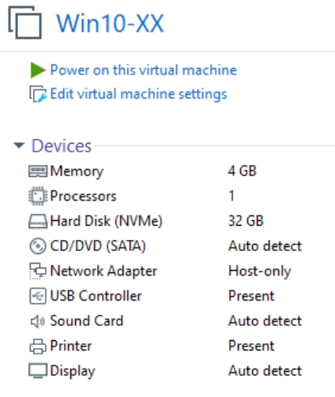
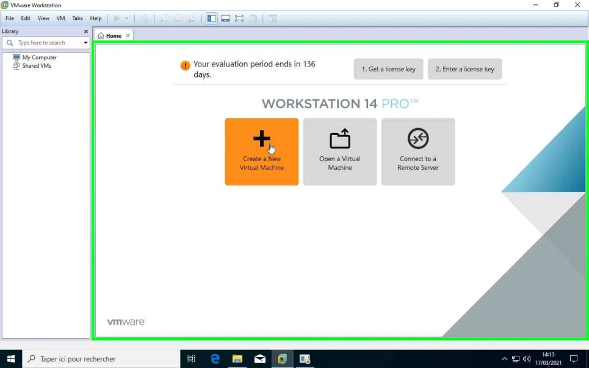
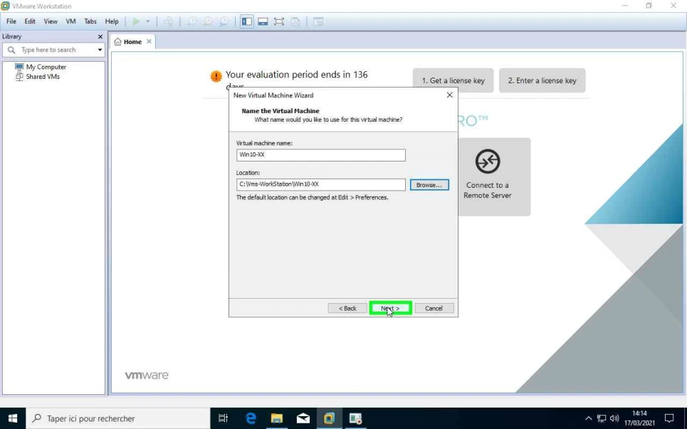
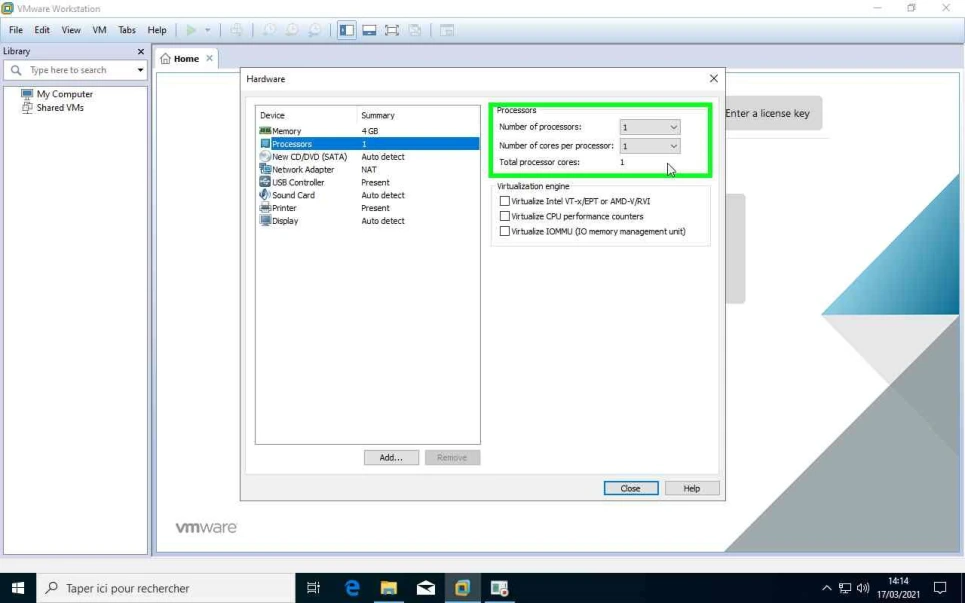
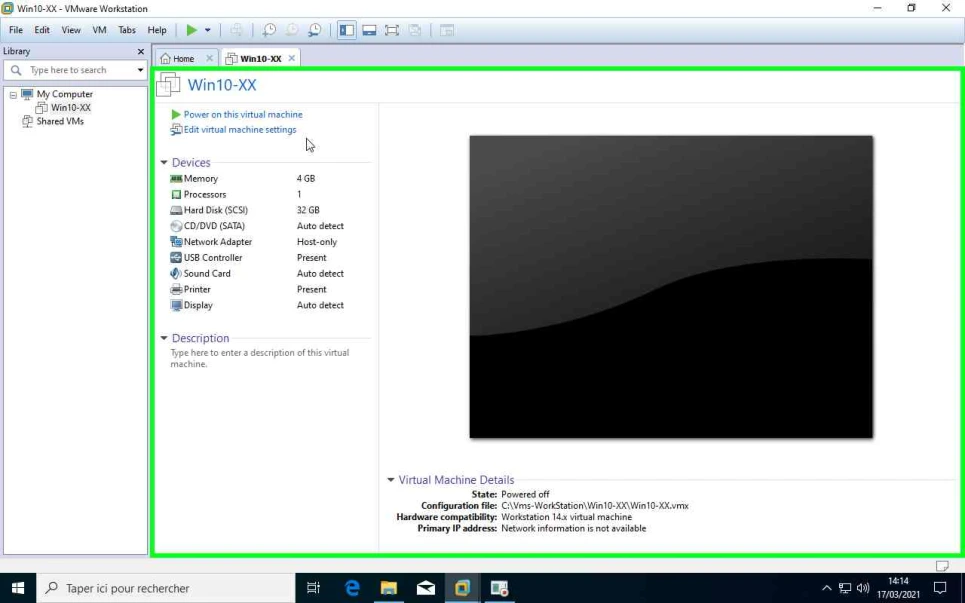
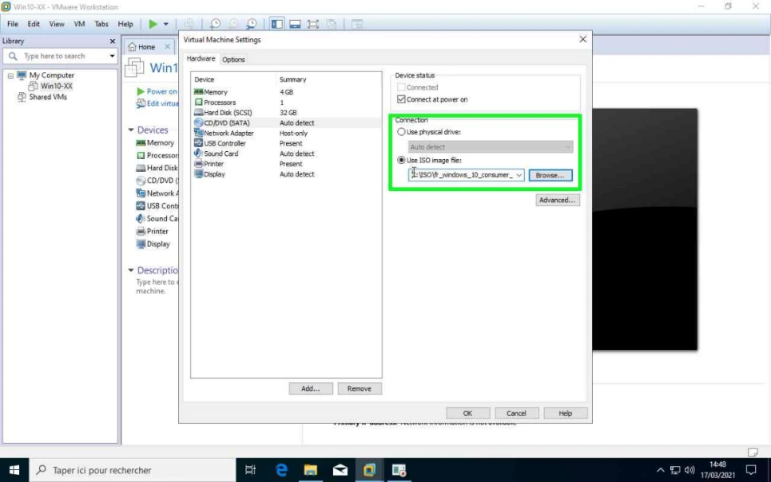
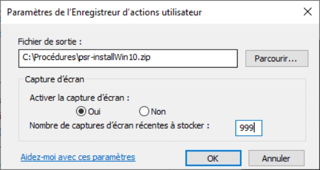
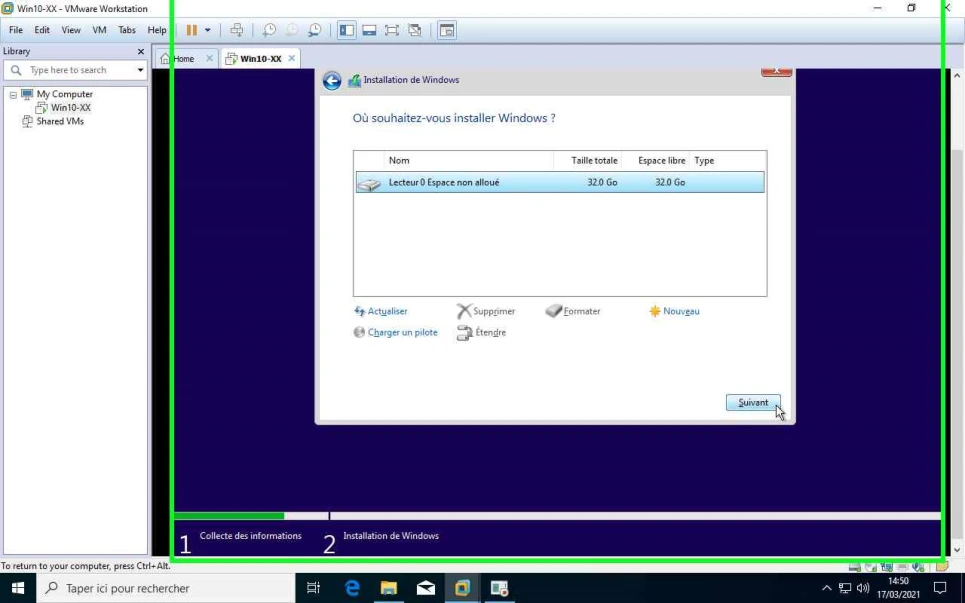
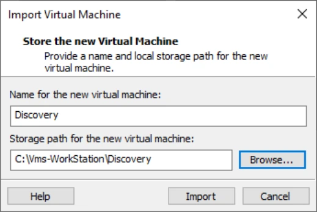
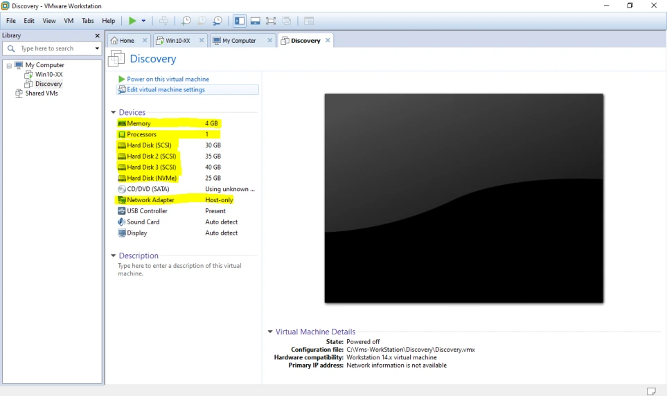

Module 02 — Installation du système d’exploitation Windows 10¶
La transcription du support Drive et l’aide pédagogique sont séparées pour rendre leur provenance explicite.
SOURCE DRIVE · TRANSCRIPTION DU SUPPORT
Le contenu des documents du dossier TSSR est transcrit ci-dessous, page par page. Les textes et tableaux sont intégrés à la page Web. Aucun fichier PDF, aucune diapositive entière ni aucune reproduction de page n’est affiché. Seuls des croquis ou visuels isolés et vérifiés peuvent accompagner la transcription. Les versions et les consignes restent celles des supports de formation. Les compléments IA sont conservés dans leur onglet distinct.
Support · Module 02 - Support de cours · 5 pages transcrites
Installation du système d’exploitation Windows 10
Objectifs
- Prendre en compte les prérequis.
- Installer Windows 10.
- Procéder à la première configuration du système.
Installation — prérequis
| Matériel | Système 32 bits | Système 64 bits |
|---|---|---|
| Processeur | 1 GHz | 1 GHz |
| Mémoire vive | 1 Go | 2 Go |
| Espace disque | 16 Go | 32 Go |
Le 64 bits, c’est quoi ?
- Adaptation du système d’exploitation aux évolutions des composants : meilleures performances.
- Prise en compte native de plus de 4 Go de mémoire vive.
- Meilleure protection du système : nécessite des pilotes signés.
Supports d’installation
Un fichier source est commun aux supports d’installation : install.wim.
- DVD.
- Clé USB.
- Image ISO.
- Partage réseau et serveur de déploiement.
- Tout support amorçable pouvant contenir
install.wim.
Un mini-système d’exploitation est requis : OS léger pour installer ou réparer Windows, disponible dans le fichier boot.wim du support d’installation.
Installation — méthodes
Nouvelle installation
- Sur du nouveau matériel.
- En remplacement d’un système existant.
Mise à niveau
- Par-dessus un Windows existant.
- Pour conserver les applications, les paramètres et les données.
- Cas particulier réservé à des usages spécifiques.
- Mise à niveau possible, dans le support, depuis Windows 7 64 bits et les systèmes plus récents.
Déroulement
- Choix de l’édition et du mode d’installation : démarrage dans un environnement d’installation ; selon les supports, plusieurs éditions sont proposées, par exemple Famille et Professionnelle.
- Configuration du matériel : partitionnement et formatage.
- Copie des fichiers et installation de Windows : copie du contenu de l’image sur la partition ; paramétrage automatique, avec un redémarrage nécessaire.
- Premier démarrage sur le disque : préparation pour la première utilisation.
Installation — transfert de l’ancien système
Que transfère-t-on ?
- Les comptes et profils d’utilisateurs ?
- Les configurations spécifiques des logiciels installés ?
- Les paramètres système : pilotes, polices, messagerie, etc. ?
- Des fichiers et des dossiers ?
Comment faire ?
- Pour les fichiers et dossiers : fonctionnalité Sauvegarder et restaurer.
- Pour les comptes utilisateurs et les paramètres système et logiciels : outil USMT — User State Migration Tools, en ligne de commande.
Démonstration
Le support annonce une démonstration de l’installation.
Travaux pratiques
Le support renvoie au TP d’installation de Windows.
Conclusion
- Différents supports d’installation.
- Différentes méthodes d’installation.
- Paramétrage du socle du système fraîchement installé.
Référence du document : 1Bk4bAsNg5iCJkSgvyLRCX5ReWFlYDxJe · SHA-256 4f99523be23c53a7…
Énoncé · Enoncé du TP - Installation de Windows · 5 pages transcrites
Installation de Windows 10
TP du Module 02 — Installation de Windows 10
Durant ce TP, vous allez être amené à créer une machine virtuelle avec VMware Workstation. Vous serez ensuite amené à installer Windows 10 et à procéder à sa configuration initiale. Vous serez également amené à importer une VM Windows 10 existante.
Durée estimée : 1 heure.
Énoncé
Lisez l’ensemble de cet atelier avant de vous lancer dans la pratique.
Préparer l’environnement
- Créer les dossiers ISO et Procédures sur votre volume de données.
- Copier l’image ISO de Windows 10 disponible depuis les ressources à télécharger vers votre dossier ISO.
- Créer un dossier Vms-WorkStation sur votre volume de données. Il accueillera les fichiers qui définissent vos futures VM.
Création de la machine virtuelle
Informations concernant la VM Windows 10 :
| Paramètres Workstation | Valeur |
|---|---|
| Configuration de la VM | Typique |
| Système d’exploitation invité | Windows 10 x64 |
| Nom de la VM | Win10-XX, XX étant vos initiales |
| Emplacement | Sous-dossier Win10-XX du dossier VMs-WorkStation |
| Disque dur | 32 GB, Store virtual disk as a single file |
| Mémoire | 4 GB |
| Processeurs | 1 processeur — 1 cœur |
| Réseau | Host-Only |
Configuration et installation du système d’exploitation Windows 10 Professionnel
À l’issue de la création de la VM, sa configuration doit être la suivante, présentée dans la capture du document.
- Insérer l’image ISO du support d’installation de Windows 10 dans le lecteur de DVD virtuel de la VM Win10-XX. Cette image ISO est disponible dans le dossier ISO de votre lecteur de données.
Vous créez une procédure de l’installation du système d’exploitation Windows 10 Professionnel. Pour cela, vous avez la possibilité d’utiliser l’outil natif psr, Step Recorder ou Enregistreur d’actions utilisateur. Cet outil permet de conserver les étapes de vos actions, dans le but de les mettre en forme par la suite dans une procédure personnalisée.
Clic droit sur le menu Démarrer → Exécuter → psr.
| Paramètre PSR | Valeur |
|---|---|
| Fichier de sortie | Procédures\psr-install-Win10.zip |
| Activer la capture d’écran | Oui |
| Nombre de captures d’écran récentes à stocker | Valeur max |
Cliquez sur Commencer l’enregistrement.
- Démarrer la VM et procéder à l’installation en français de Windows 10 Professionnel.
Informations concernant l’installation du système
- Vous n’avez pas de clé produit à renseigner ; nous utiliserons le délai de grâce durant les TP.
- Le système d’exploitation Windows 10 Professionnel sera à installer sur la totalité de l’espace non alloué du disque dur de 32 Go, installation personnalisée.


Finaliser l’installation et la configuration de base
À la fin de l’installation, lorsque la VM redémarre, cliquez sur Arrêter l’enregistrement.
Utilisez ensuite les données présentes dans le fichier de sortie install-Win10.zip pour vous créer votre propre procédure personnalisée, avec l’aide d’un logiciel de traitement de texte par exemple, et en y insérant les images capturées et vos propres commentaires.
Sauvegardez votre procédure dans le dossier Procédures\install-Win10.docx.
Informations concernant la configuration de base suite à l’installation
| Consigne |
|---|
| Région : France |
| Disposition du clavier : Français |
| Pas de disposition de clavier supplémentaire nécessaire |
| Pas de connexion Internet disponible pour le moment |
| Continuer avec l’installation limitée |
| Nom d’utilisateur : pnom, première lettre du prénom suivi du nom de famille |
| Pas d’historique des activités |
| Pas d’assistante numérique Cortana |
| Ne pas utiliser la reconnaissance vocale en ligne |
| Ne pas autoriser Microsoft et les applications à utiliser votre emplacement |
| Ne pas localiser l’appareil |
| Envoi basique des données de diagnostic à Microsoft |
| Ne pas améliorer l’écriture manuscrite et la saisie |
| Ne pas obtenir d’expériences personnalisées avec des données de diagnostic |
| Ne pas autoriser les applications à utiliser l’identifiant de publicité |
Finalisation de la configuration de base
- Installez les VMware Tools, installation typique.
- Éjectez le DVD puis éteignez votre VM.
- Faites un snapshot TP1 terminé.
Importer une seconde VM
- Importez la VM Discovery au format OVA dans un sous-dossier créé par vos soins en amont nommé Discovery dans le dossier VMs-WorkStation. L’archive OVA se trouve dans les ressources à télécharger.
- Complétez le tableau suivant.
| Paramètres de la VM Discovery | Réponse |
|---|---|
| Nom de la VM | Discovery |
| Emplacement | Sous-dossier Discovery du dossier VMs-WorkStation |
| Nombre de disque(s) dur(s) | À relever |
| Mémoire | À relever |
| Processeurs | À relever |
| Carte réseau | À relever |
- Démarrez Discovery et ouvrez une session avec l’utilisateur adm, avec le mot de passe fourni par le formateur.
- Sur le Bureau, faites un clic droit sur le fichier
reinit.bat, puis Exécuter en tant qu’administrateur. Redémarrez ensuite Discovery. - Complétez le tableau suivant.
| Caractéristiques de Discovery | Réponse |
|---|---|
| VMware Tools présents ? | À relever |
Solution
Une solution est proposée pour ce TP sous la forme d’un PDF commenté, disponible dans les ressources à télécharger.
Référence du document : 11VGT5YMtygwmyVnoqbH8jjhvXbSGRAV1 · SHA-256 098c44bd29ecd746…
Synthèse du Drive · Synthèse Module 2 - Installation et Configuration de Windows 10 V2 · 2 pages transcrites
Les synthèses Windows 10 de ce dossier sont rattachées au cours Systèmes clients.
Synthèse — Module 2 : Installation et configuration initiale de Windows 10 (V2)
1. Préparation de l’environnement virtuel
Dans le cadre d’un déploiement ou d’un TP de formation, la virtualisation avec VMware Workstation permet de simuler un environnement client étanche et reproductible.
Configuration recommandée de la VM Windows 10
- Type de système : Windows 10 x64.
- Mémoire RAM : 4 Go.
- Processeur : 1 processeur / 1 cœur.
- Disque dur virtuel : 32 Go, fichier unique.
- Carte réseau : Host-Only, réseau privé virtuel.
2. Étapes d’installation de Windows 10
L’installation s’effectue depuis une image ISO officielle bootable : 1. Démarrage sur l’image ISO de Windows 10. 2. Choix de la langue, Français, et sélection de l’édition Windows 10 Professionnel. 3. Sélection du type d’installation : Personnalisée, installer uniquement Windows, avancé, sur l’espace non alloué. 4. Configuration initiale hors ligne : installation limitée sans compte Microsoft cloud. 5. Création d’un compte utilisateur local administrateur, exemple : pnom. 6. Désactivation des services de télémétrie, géolocalisation et données de diagnostic superflues. 7. Installation des VMware Tools pour optimiser l’affichage et la gestion du périphérique. 8. Création d’un snapshot d’état propre, exemple : TP1 terminé.
3. Automatisation et documentation d’installation
L’Enregistreur d’actions utilisateur de Windows, Step Recorder / psr.exe, permet d’automatiser la capture des étapes pour rédiger une procédure personnalisée d’installation.
:: Lancement de l’enregistreur d’actions utilisateur (PSR)
psr.exe
Commande de réinitialisation de la VM d’apprentissage
:: Commande de réinitialisation de la VM d’apprentissage (script batch)
reinit.bat
Référence du document : 1BIk1H_2uj3XFijQHxwvV9Ve50UrWWACE5M6AmT1L9Lk · SHA-256 dd49debff3c0b587…
Notes du Drive · module 1 et 2 et extra.txt · document texte
Notes textuelles présentes dans le Drive. Aucun support de cours illustré distinct n’est fourni pour ce document ; aucune illustration n’a été inventée ou attribuée au support.
Module 1 - Les systèmes d'exploitation et Microsoft Windows 10
Objectifs du module
Les OS : définition et fonctions principales
Les OS : leur composition et leur place aujourd'hui
Les OS Windows
Windows as a Service
Windows 10 et ses différentes éditions et licences
Conclusion
Dans ce module, nous allons explorer la notion de systèmes d'exploitation, ou OS, en répondant à des questions essentielles : Comment définir un système d'exploitation ? Quelles sont ses fonctions principales ? De quoi est-il composé ? Où peut-on les trouver ?
Définir un système d'exploitation
Un système d'exploitation, ou OS en anglais, est un logiciel qui est édité et proposé par des communautés, ou bien édité et commercialisé par des groupes privés et des fabricants de matériel. Il pilote les dispositifs matériels, lui donne des ordres en somme. Ces ordres sont donnés par l'utilisateur, ainsi que par des applications mises à disposition de l'utilisateur. Sans l'utilisateur, le système ne peut pas faire grand-chose. Le résultat du travail effectué par le matériel est rendu, par défaut, à l'écran, ou bien vers d'autres périphériques, comme une imprimante, par exemple.
Fonctions principales des systèmes d'exploitation
Quelles sont les fonctions principales d'un système d'exploitation ? Le système d'exploitation gère le matériel. C'est lui qui envoie des ordres au processeur, ordres préalablement donnés au système d'exploitation, directement par un logiciel ou directement par l'utilisateur lui-même. Il gère aussi la mémoire vive. Il va chercher, en RAM, les résultats des calculs effectués par le processeur, pour les retranscrire à l'utilisateur. Le système d'exploitation optimise l'exécution des applications en leur attribuant les ressources nécessaires. Il partage l'ensemble des ressources matérielles aux différentes applications, qui sont simultanément en cours d'exécution. Il priorise les accès concurrentiels lorsqu'un conflit d'accès apparaît.
Informations et communication
Il fournit des informations sur le bon fonctionnement de l'ordinateur à travers des tableaux de bord, affichant les informations en temps réel, ou à travers des journaux, des logs, archivés sur plusieurs semaines. Il utilise les périphériques dans les meilleures conditions, en s'assurant qu'il y ait une bonne communication sur les bus entre la carte-mère et le périphérique en question.
Gestion des pilotes et des accès
Il assure également le bon fonctionnement des périphériques à l'aide des pilotes, ou drivers. Les pilotes, c'est-à-dire les pilotes de l'ordinateur, sont un peu comme les manuels d'utilisation du périphérique. Ces manuels sont destinés à l'OS, pour qu'il en maîtrise chaque fonctionnalité et chaque spécificité. Le système d'exploitation protège l'accès aux ressources. Chaque système s'appuie sur un principe de privilège d'accès. Les actions et accès d'un simple utilisateur seront réduits par rapport à ceux d'un administrateur de la machine. Granulairement, le système d'exploitation veillera à permettre l'accès à des informations ou ressources aux seules personnes concernées. Une personne non autorisée recevra une notification du système.
En conclusion, nous avons défini le système d'exploitation et ses principales fonctions. Ce logiciel essentiel joue un rôle clé dans la gestion du matériel, l'optimisation des ressources et la sécurité des accès. Comprendre ces concepts est fondamental pour tout technicien supérieur en systèmes et réseaux.
Dans ce module, nous allons explorer les systèmes d'exploitation (OS), leur composition et leur rôle essentiel dans nos vies quotidiennes.
Tout d'abord, un système d'exploitation se compose principalement de plusieurs éléments clés. Au cœur de chaque OS se trouve un noyau, ou kernel. Ce noyau est le lien direct entre le matériel de l'ordinateur et le reste du système d'exploitation. Il est capable d'évoluer et d'être mis à jour, permettant également l'ajout de modules complémentaires.
Le rôle du shell et de l'interface graphique
Au-dessus du noyau, nous trouvons un interpréteur de commandes, souvent désigné sous le terme CLI (Command Line Interface) ou shell. Ce shell sert d'interface pour l'utilisateur, qui lui envoie des commandes en ligne. En fonction du noyau, les shells peuvent varier, offrant différentes fonctionnalités et usabilités.
Dans la plupart des systèmes d'exploitation, mais de manière facultative, une interface graphique (GUI pour Graphical User Interface) est proposée. Celle-ci facilite l'interaction avec le système pour les utilisateurs non initiés, rendant l'expérience utilisateur plus intuitive. Les éditeurs d'interfaces graphiques s'efforcent toujours de garantir une grande simplicité d'utilisation.
Certaines distributions d'OS sont livrées avec leurs propres interfaces graphiques, comme c'est le cas de Microsoft avec Windows. D'autres, en revanche, laissent le choix aux utilisateurs d'installer la GUI de leur préférence ou même de se passer complètement de celle-ci.
Le stockage des données
À côté des fichiers systèmes indispensables, il est crucial pour l'utilisateur de garder ses données accessibles et sécurisées. C'est là qu'interviennent les systèmes de fichiers, qui organisent et sécurisent l'accès aux données sur des supports de stockage, comme le disque dur ou une clé USB.
Les systèmes d'exploitation autour de nous
Il existe une multitude de systèmes d'exploitation, tels que Windows, Android, iOS et Mac OS X, mais aussi des distributions GNU-Linux comme Ubuntu ou Debian. Aujourd'hui, nous retrouvons des OS dans de nombreux appareils. Évidemment, on pense à nos ordinateurs personnels, mais aussi aux serveurs d'entreprise.
Les smartphones et tablettes fonctionnent avec des systèmes d'exploitation comme Android ou iOS. Les montres connectées utilisent également des OS spécifiques, tout comme le matériel réseau, les télévisions ou même les véhicules modernes qui intègrent des ordinateurs de bord.
Avec l'évolution des technologies, notre dépendance aux outils connectés s'accroît, et cela illustre l'importance grandissante des systèmes d'exploitation dans notre vie quotidienne.
En conclusion, nous avons exploré comment les systèmes d'exploitation, à travers leur composition et leur omniprésence, façonnent notre interaction avec la technologie moderne. Ils sont devenus des composants essentiels, non seulement dans nos ordinateurs, mais également dans tous les appareils connectés que nous utilisons quotidiennement.
Dans ce module, nous allons examiner plus en détail les systèmes d'exploitation Microsoft Windows, en commençant par leurs origines et leur évolution.
Les débuts avec MS-DOS
Nous partons de l'histoire de Microsoft qui a commencé avec le système d'exploitation MS-DOS, né en août 1981. MS-DOS, acronyme de Microsoft Disk Operating System, était un système d'exploitation sans interface graphique, permettant à un seul utilisateur de lancer une seule instruction à la fois. Ce mode de fonctionnement a posé les bases des systèmes d'exploitation qui ont suivi.
Transition vers l'interface graphique
Avec l'avènement de Windows 1.0 en 1985, nous avons découvert une interface graphique qui a révolutionné l'utilisation des ordinateurs, notamment grâce à l'introduction de la souris comme périphérique d'entrée. Ce fut un tournant dans l'expérience utilisateur et dans l'approche des systèmes d'exploitation.
Windows NT et l'entrée sur le marché serveur
En juillet 1993, Microsoft a lancé Windows NT, qui a marqué son entrée sur le marché des systèmes d'exploitation serveurs. Ce système est multi-utilisateur, multi-tâche et fonctionne sur un plus large éventail de systèmes matériels, ouvrant ainsi de nouvelles possibilités pour les entreprises.
L'essor de l'informatique domestique
À la fin des années 1990, des systèmes comme Windows 95 et Windows 98 ont permis à l'informatique de s'imposer dans les foyers. Ensuite, Windows 2000 a été un catalyseur pour l'adoption en entreprise avec sa cohabitation avec Windows 2000 Server, apportant ainsi des fonctionnalités qui sont encore largement utilisées aujourd'hui.
Windows XP et sa popularité
Windows XP est sans conteste le système d'exploitation le plus populaire à son époque, jouant un rôle fondamental dans l'essor de l'informatique tant dans les secteurs professionnels que personnels. Il a également accompagné l'explosion d'Internet, devenant un pilier essentiel des environnements informatiques.
Evolutions récentes des systèmes Windows
Nous avons ensuite vu l'apparition de Windows Vista et Windows 8, qui n'ont pas rencontré le succès souhaité. Cependant, Windows 7 s'est rapidement imposé comme le véritable successeur de Windows XP. Aujourd'hui, Windows 10 est le système d'exploitation le plus utilisé dans le monde, avec un poste de travail sur deux fonctionnant sous cette version.
Cycler la vie d’un OS Windows
Il est crucial de comprendre qu'un système d'exploitation naît, évolue et finit par disparaître. Cela nécessite des équipes chez Microsoft pour suivre ces changements, corriger les bogues et mettre à jour les fonctionnalités. Quatre étapes majeures définissent le cycle de vie d'un OS Windows : la date de sortie, la date de fin des ventes, la date de fin du support standard et la date de fin du support étendu.
Illustration avec Windows 7
Pour illustrer ces étapes, prenons Windows 7, lancé en octobre 2009 alors que Windows XP et Windows Vista étaient encore largement utilisés. Windows 7 a dû progressivement remplacer ces versions, un processus que l'on appelle migration.
Importance des mises à jour
À l'avenir, nous devons aussi rappeler que Windows 7 a bénéficié de milliers de mises à jour, appelées KB (Knowledge Base), qui amélioraient les fonctionnalités ou corrigeaient des erreurs. Pour éviter d'attendre des heures lors de l'installation de ces mises à jour, Microsoft a mis à disposition des service packs.
Fin de support et migration
En octobre 2013, il a été décidé de ne plus vendre Windows 7, avec l'arrivée de Windows 8. Néanmoins, le support standard a perduré jusqu'à la fin de la phase de support étendu, qui dure généralement cinq ans, afin de donner aux entreprises le temps nécessaire pour migrer vers des systèmes plus récents.
En janvier 2020, le support pour Windows 7 a effectivement pris fin, ce qui signifie qu'aucune mise à jour de sécurité n'est plus fournie, mettant en danger la sécurité des entreprises encore sur cette version.
Dans ce module, nous allons examiner la notion de Windows as a Service, qui est essentielle pour comprendre le développement continu de Windows 10.
Jusqu'à nouvel ordre, Microsoft a décidé que Windows 10 serait son dernier système d'exploitation client. Windows 10 a donc pour vocation de vivre longtemps et de connaître des phases d'évolution spécifiques. Windows as a Service est le nouveau nom donné à ce modèle de mise à jour.
Les Windows Insiders
Les Windows Insiders sont les bêta-testeurs de Windows 10. Leur rôle est crucial car le support de Microsoft se base sur leurs retours d'expérience pour améliorer et planifier la sortie d'une nouvelle version de Windows 10. Vous pouvez vous-même vous inscrire gratuitement au programme des Windows Insiders.
Les builds et mises à jour
En effet, Windows 10 évoluera grâce à plusieurs versions que l'on appelle des Builds. Chaque Build est identifiée par un numéro, avec lequel nous pouvons facilement retrouver sa date de sortie. Une Build propose son lot de nouvelles fonctionnalités. Le support d'une Build est fixé pour 18 mois.
Une mise à jour de fonctionnalités, qu'on appelle une Feature Update, est la mise à disposition officielle d'une Build aux entreprises et au grand public. Il y a deux Feature Updates par an. En revanche, les mises à jour de qualité, ou Quality Updates, sont différentes. Proposées à un rythme plus soutenu, elles offrent des mises à jour de sécurité et des correctifs. Elles sont cumulatives et sont traditionnellement mises à disposition tous les deuxièmes mardis du mois, lors du Patch Tuesday.
Collaboration avec les insiders
Durant six mois, nous travaillons main dans la main avec la communauté des Windows Insiders et Microsoft. Pendant cette période, Microsoft récupère massivement et très régulièrement des rapports d'utilisation, de télémétrie et d'incidents de la part des Windows Insiders. Microsoft exploite toutes ces données pour créer et déployer des correctifs, des mises à jour de sécurité et des nouvelles fonctionnalités.
Il n'y a pas vraiment de règle ici, un Insider peut récupérer une mise à jour à n'importe quel moment. Au bout des six mois, Microsoft décide d'envoyer une nouvelle mise à jour, qui est alors considérée comme prête à être mise en production.
Exemple de déploiement de builds
Par exemple, la build 1903 a été déployée massivement à partir de mars 2019. Il est possible de télécharger cette version complète de Windows 10 sur Internet. Avec le temps, une build connaîtra des Quality Updates pour se renforcer et se fiabiliser, mais ne connaîtra pas de nouvelles fonctionnalités. Pendant ce temps, les Insiders et Microsoft travaillent déjà sur la prochaine build.
Ainsi, six mois après, grâce à une Feature Update, une nouvelle build devient disponible avec son lot de nouvelles fonctionnalités. L'utilisateur a le choix de mettre à jour son système d'exploitation ou de continuer avec la build qu'il possède. Les mois passent, et chaque nouvelle build prend son tour de mise en production. Il est impératif pour l'utilisateur de migrer vers une version de Windows 10 encore en phase de support, sous peine de perdre l'accès aux mises à jour et à la sécurité.
En conclusion, Windows as a Service représente un modèle dynamique et adaptatif qui garantit la sécurité et la fonctionnalité des systèmes d'exploitation à travers des mises à jour régulières.
Dans cet article, nous allons explorer Windows 10 et ses différentes éditions ainsi que les licences qui lui sont associées.
Les différentes éditions de Windows 10
Windows 10 se décline en plusieurs éditions, dont les trois principales sont l'édition Famille, l'édition Professionnelle et l'édition Entreprise. L'édition Famille est destinée à un usage domestique. C'est l'édition de base, qui contient les fonctionnalités natives, telles que le moteur de reconnaissance vocale Cortana, des fonctionnalités de bureau supplémentaires, la timeline, OneDrive, ainsi que d'autres fonctionnalités selon la build que nous utilisons.
Ensuite, nous avons l'édition Professionnelle, qui est construite sur la base de l'édition Famille. Elle inclut donc les mêmes fonctionnalités, mais nous avons également accès à des outils spécifiques du monde de l'entreprise, tels que le chiffrement BitLocker et EFS (Encrypted File System), ainsi que la possibilité de joindre notre ordinateur à l'annuaire Active Directory de l'entreprise.
L'édition Entreprise, quant à elle, est une surcouche de l'édition Professionnelle qui embarque des outils supplémentaires dédiés aux grands groupes, comme la fonctionnalité Direct Access, permettant la connexion distante et automatique d'un utilisateur au réseau de son entreprise de façon transparente.
Ces trois éditions ne sont pas les seules. Il existe d'autres éditions de Windows 10, plus spécifiques et ciblées, telles que l'édition Professionnelle pour station de travail, l'édition Éducation ou l'édition Entreprise LTSC (Long Term Servicing Channel), qui bénéficie d'un support assuré pendant 10 ans.
Les licences d'utilisation de Windows 10
Pour pouvoir utiliser Windows 10 et bénéficier de ses mises à jour, il est nécessaire de posséder une licence d'utilisation. Les règles d'utilisation de Windows sont consignées dans le CLUF, Contrat de licence d'utilisateur final, ou en anglais EULA (End User License Agreement). Il existe plusieurs possibilités pour obtenir une licence d'utilisation Windows 10.
Tout d'abord, la licence OEM est probablement la plus populaire. Elle est préinstallée sur les ordinateurs grand public que nous achetons dans les enseignes de grande distribution, par exemple, et elle est liée au BIOS de la machine. Cela signifie que nous ne pouvons pas utiliser cette licence ou l'activer sur une autre machine.
Ensuite, nous avons la licence Retail, qui s'achète de manière unitaire. Lorsque nous acquérons une licence Retail, celle-ci est liée à l'acheteur. Nous pouvons l'installer sur un ordinateur que nous avons assemblé nous-mêmes, par exemple, et la réinstaller sur un futur ordinateur.
Pour les petites entreprises, nous pouvons nous procurer une licence Volume Activation Key (KMS). Cette licence dispose d'un nombre prédéterminé d'activations autorisées, permettant une licence pour plusieurs ordinateurs. Pour les entreprises de taille moyenne et plus, il existe également le principe de licence VLK, adapté pour des environnements de plus de 25 postes, nécessitant l'installation du service KMS dans notre réseau d'entreprise pour centraliser l'activation.
Délai de grâce et licences d'accès client
Chaque type de licence possède un délai de grâce, une période courte durant laquelle Windows bénéficie de toutes ses fonctionnalités et de son support. Ce délai permet généralement à nos équipes de tester et de maqueter Windows avant de valider son utilisation en masse.
Un dernier type de licence, moins connue mais importante dans un environnement professionnel, est la licence d'accès client. Elle a pour but de permettre les communications client-serveur, permettant à un système d'exploitation client ou à un utilisateur connecté d'utiliser les services d'un serveur d'entreprise. Bien que nécessaire, il n'est pas bloquant de ne pas en posséder une pour des cas plus généraux. Cependant, il est indispensable que l'entreprise s'en procure pour rester à jour en cas de contrôle.
En conclusion, nous avons vu que Windows 10 offre plusieurs éditions et licences. Comprendre ces notions est essentiel pour une utilisation optimale dans un environnement professionnel.
Dans ce module, nous avons exploré en profondeur les systèmes d'exploitation et leur importance dans le monde actuel.
Nous avons constaté que les systèmes d'exploitation sont partout autour de nous, et Windows 10 est aujourd'hui prédominant dans les entreprises en tant que système d'exploitation client. Nous avons appris que comprendre le fonctionnement de Windows 10 est essentiel pour devenir un bon technicien.
Importance de la maîtrise de Windows 10
Dans le cadre de notre formation de Technicien Supérieur Systèmes et Réseaux, il est impératif que nous maîtrisions Windows 10. Ce système d'exploitation offre une interface conviviale ainsi que des fonctionnalités robustes qui facilitent la gestion des systèmes informatiques. Être compétent dans son utilisation nous permettra de résoudre efficacement les problèmes techniques qui peuvent survenir dans un environnement professionnel.
Pour devenir un technicien compétent, nous devons développer certaines compétences clés liées à Windows 10. Cela inclut la capacité à installer et configurer le système, comprendre la gestion des mises à jour, ainsi que la connaissance des paramètres de sécurité.
Module 2 - Installation de Windows 10
Objectifs du module
Les prérequis
L'installation
La migration
Démonstration - L'installation
TP - Installation de Windows
Conclusion
Dans ce module, nous allons explorer les différentes étapes nécessaires à l'installation de Windows 10 sur un système donné.
Les objectifs du module sont les suivants : nous allons tout d'abord prendre en compte les prérequis pour l'installation. Cela inclut la vérification des configurations matérielles et logicielles nécessaires pour assurer un bon fonctionnement du système.
Installation de Windows 10
Ensuite, nous allons procéder à l'installation de Windows 10. Cette étape nécessite une attention particulière pour éviter les erreurs et garantir que le système est installé correctement. Nous allons nous familiariser avec les différentes options d'installation, telles que l'installation propre et l'installation de mise à niveau.
Configuration initiale du système
Enfin, après l'installation, nous allons effectuer la première configuration du système. Cela comprend le paramétrage des comptes utilisateurs, la configuration des paramètres de sécurité, ainsi que l'activation des fonctionnalités clés du système d'exploitation.
En conclusion, ce module nous permettra de maîtriser l'installation et la configuration initiale de Windows 10, ce qui est essentiel pour nos futures activités professionnelles dans le domaine des systèmes et réseaux.
Dans ce module, nous allons aborder les prérequis matériels nécessaires à l'installation de Windows 10, afin d'assurer un fonctionnement minimal mais performant du système.
Pour installer Windows 10, nous devons prendre en compte certains prérequis matériels de base. Tout d'abord, un processeur capable de fournir une puissance de calcul d'1 GHz est indispensable. Concernant la mémoire vive, il nous faut 1 Go pour les systèmes 32 bits et 2 Go pour les systèmes 64 bits. Cependant, avec l'évolution de l'OS et l'utilisation de logiciels supplémentaires, il est préférable de prévoir plus de mémoire vive.
Les exigences de stockage
L'espace de stockage est également un critère essentiel. Nous avons besoin de 16 Go d'espace pour un système 32 bits et de 32 Go pour un système 64 bits. Ce stockage est nécessaire pour le système d'exploitation lui-même ainsi que pour les mises à jour qui peuvent survenir. Évidemment, nous devons prévoir davantage d'espace pour le stockage de nos données personnelles.
Comprendre les architectures 32 bits et 64 bits
Il est important de comprendre pourquoi il existe une différence de spécification entre les systèmes 32 bits et 64 bits. L'architecture 64 bits représente une avancée matérielle. À mesure que le temps passe, le matériel devient à la fois plus compact et plus puissant. Les composants d'un ordinateur échangent des informations dans un cadre de fiabilité et de rapidité supérieures, ce qui nécessite que le système d'exploitation s'adapte à cette architecture 64 bits, afin d'exploiter le matériel de manière optimale.
Performances et sécurité avec le 64 bits
Les systèmes d'exploitation 64 bits sont de plus en plus répandus et apportent de nombreux avantages. En effet, un système Windows 10 64 bits peut gérer de manière native plus de 4 Go de mémoire vive. De plus, il offre une meilleure protection du système, en intégrant le démarrage sécurisé grâce au firmware UEFI. Nous bénéficions également de meilleures garanties de fiabilité, car un tel système ne prend en charge que les périphériques dont le pilote a été signé et approuvé par Microsoft, réduisant ainsi le risque d'erreurs critiques telles que le « blue screen of death ».
Les fichiers nécessaires pour l'installation
Pour installer Windows sur un ordinateur, nous avons besoin d'un ensemble de fichiers appelés fichiers système. Ces fichiers doivent être déployés sur le support de stockage de l'ordinateur, qui est généralement le disque dur. Cet ensemble de fichiers est contenu dans une archive appelée « image », connue sous le nom de « install.vim ». L'extension vim signifie Windows Imaging.
Où trouver l'image windows
Nous pouvons trouver cette image sur différents médias bootables, tels qu'un DVD – ce qui est la méthode historique – ou des clés USB bootables. Les images ISO, qui représentent le DVD virtuel, sont également une option viable. Il existe aussi des partages réseau contenant plusieurs images vim pour intégrer différentes instances de Windows.
Déploiement de l'image
Une fois l'image vim en notre possession, le déploiement de son contenu sur le disque dur requiert un outil spécifique, soit un mini système d'exploitation. Ce dernier est très léger et doit également être disponible sur le support d'installation, en utilisant le fichier boot.vim. Ce fichier est celui qui apparaîtra à l'écran lors du démarrage de l'ordinateur, avant même qu'il n'héberge Windows.
En résumé, les prérequis pour installer Windows 10 doivent être scrupuleusement respectés pour garantir la performance et la sécurité de notre système d'exploitation.
Dans ce module, nous allons aborder les différentes méthodes d'installation de Windows 10.
Nous avons deux possibilités pour installer Windows 10. Nous pouvons procéder à une nouvelle installation sur du nouveau matériel, sur un disque tout neuf, ou bien sur un ordinateur qui avait préalablement un système d'exploitation installé. Dans ce dernier cas, le contenu du disque sera au préalable effacé.
Mise à niveau vers Windows 10
Nous avons également la possibilité de réaliser ce qu'on appelle une mise à niveau vers Windows 10. Cela consiste à installer Windows 10 par-dessus un Windows existant. Toutefois, ce type d'installation est plutôt rare et n'est pas la plus appréciée des techniciens et des administrateurs, car il réduit la fiabilité du système. Installer Windows 10 au-dessus d'un Windows 7 qui n'est peut-être pas très fiable est à éviter, selon nous.
D'autres contraintes existent également. Par exemple, il ne sera pas possible de faire une mise à niveau vers Windows 10 depuis un ordinateur possédant Windows XP ou Windows Vista. Pour toutes ces raisons, la mise à niveau est donc à proscrire, même si elle peut être utilisée dans des cas spécifiques, comme pour conserver des données difficiles à exporter ou pour continuer à utiliser des logiciels sans accès à leurs sources d'installation.
Processus d'installation
Que se passe-t-il lors de l'installation de Windows ? Après avoir booté sur le support d'installation, un mini système d'exploitation issu du boot.vim se lance, et nous arrivons dans un environnement d'installation. Nous choisissons ensuite l'édition de Windows 10 lorsque l'assistant nous le demande, bien que cette étape soit facultative. L'assistant nous demande alors où déployer les fichiers système.
volume_choisi = volumes_disponibles.find { |v| v.formaté_en == 'NTFS' }
Nous avons la possibilité d'utiliser un volume existant sur le disque dur qui sera formaté en NTFS, ou bien de créer un nouveau volume pour accueillir le système d'exploitation. Une fois le volume choisi, l'installation commence : c'est-à-dire la copie des fichiers système en première étape, suivie des configurations de bas niveau du système. Un redémarrage survient à l'issue de l'installation, ce qui est normal. Nous pouvons alors retirer le support d'installation, car nous n'en aurons plus besoin, tout étant maintenant présent sur le disque dur de l'ordinateur.
L'ordinateur démarre maintenant grâce aux fichiers système présents sur le disque dur, et nous procédons au premier démarrage. Ce premier démarrage après l'installation est important, car il nous permet de personnaliser notre système.
Nous devons retenir que le choix entre une installation neuve et une mise à niveau doit être fait judicieusement, en tenant compte de la fiabilité du système et des données à sauvegarder.
Dans l'environnement professionnel actuel, lorsque nous installons Windows 10, il est courant que nous travaillions sur un nouvel ordinateur suite à un renouvellement de parc. Cela signifie que nous devons recréer un environnement de travail similaire à celui que nous avions auparavant.
Les éléments à migrer
Nous devons réfléchir à ce que notre équipe technique doit transférer de l'ancien poste vers le nouveau. Cela inclut :
Les comptes et profils des utilisateurs.
Les configurations particulières des logiciels installés localement.
Des outils bureautiques.
Les paramètres systèmes tels que les pilotes, la messagerie et les polices d'écriture.
Les fichiers et dossiers.
Les solutions de sauvegarde
Pour les fichiers et dossiers, nous pourrons nous appuyer sur notre solution centralisée de sauvegarde. Si celle-ci n'existe pas, Windows propose un outil natif de sauvegarde de données : l'outil de sauvegarde et restauration Windows 7, qui a été conservé tel quel dans Windows 10. Cet outil n'a subi aucun changement depuis sa création.
La migration des paramètres et des configurations
Pour migrer les comptes, les profils et autres configurations et logiciels, notre équipe se basera sur des scripts USMT, pour User State Migration Tools.
Scripts USMT
Des procédures d'utilisation d'USMT sont disponibles sur le site de Microsoft. Voici un exemple de script que nous pourrions utiliser :
USMT /capture /i:migration.xml /l:logfile.log
En conclusion, le processus de migration est essentiel pour garantir que nous ne perdions pas en productivité lors du passage à un nouvel ordinateur. Grâce à des outils efficaces et des scripts appropriés, nous pouvons assurer une transition fluide vers notre nouvel environnement de travail.
Dans cette section, nous allons procéder à une simple installation de Windows 10, ici la build 1909.
Pour l'installation, nous nous appuyons sur une VM Workstation qui répond aux prérequis d'installation. Le média d'installation est une image ISO que nous allons aller chercher dans notre dossier ISO. Nous pouvons même la monter dans notre système d'exploitation principal, comme si nous naviguions à l'intérieur d'un DVD.
Vérification des fichiers d'installation
Allons vérifier que les images install.vim et boot.vim sont présentes sur ce support d'installation. Nous faisons une petite recherche avec *vim, et nous nous retrouvons avec un résultat. Deux fichiers apparaissent : install.vim, qui fait 4,29 Go, et boot.vim, qui est beaucoup plus petit. Le fichier install.vim contient tous les fichiers système qui seront ensuite présents sur le disque dur de notre VM, tandis que boot.vim est un mini système d'exploitation permettant d'installer Windows.
Montage de l'image ISO
Nous allons introduire ce DVD virtuel dans le lecteur DVD virtuel de notre VM. Pour cela, nous allons dans les paramètres du lecteur DVD de la VM et montons l'ISO présente sur notre disque dur externe. L'image ISO est donc présente dans le lecteur DVD.
Configuration de la machine virtuelle
Avant de démarrer notre VM, il est important de noter que pour l'instant, c'est une VM vide, sans système d'exploitation installé. Lorsque nous allons la démarrer, le firmware de cette VM va aller à la recherche d'un système d'exploitation. Il parcourra cet ordre et détectera le DVD, en lançant le contenu de boot.vim pour pouvoir installer Windows.
Démarrage de l'installation
La VM démarre et affiche « Press any key to boot from CD or DVD ». Cela nous prouve que l'image ISO a bien été prise en compte par notre VM et que l'assistant d'installation Windows se lance. Nous configurons l'environnement en français, en choisissant d'installer Windows, et non de le réparer.
Activation et choix de l'édition
L'installateur nous propose d'activer Windows. Nous n'avons pas de clé d'activation pour le moment, mais nous pourrons l'activer plus tard. Nous pouvons bénéficier d'un délai de grâce de 30 jours, avec toutes les fonctionnalités disponibles. Ensuite, nous choisissons l'édition. Dans notre cas, nous sélectionnons « Windows 10 Professionnel », bien que deux éditions soient proposées, dont l'édition N qui a été dépouillée de certaines fonctionnalités multimédia.
CLUF et type d'installation
Nous acceptons le contrat de licence utilisateur final (CLUF) pour pouvoir continuer l'installation. Ensuite, l'installateur nous demande notre type d'installation. Nous n'ayant pas de système d'exploitation dans notre VM, nous choisissons une installation personnalisée. Il nous demande où installer Windows, et nous optons pour le disque dur tout neuf de 60 Go.
Copie des fichiers et préparation de Windows 10
La copie des fichiers est en cours. Le contenu de l'image système se déploie sur le volume, et nous devons patienter quelques minutes pour la préparation de Windows 10. Le firmware détecte le système d'exploitation sur le disque dur maintenant qu'il est déployé et gère le premier démarrage.
Configuration initiale de Windows
Après un redémarrage automatique, Windows démarre sa configuration de base. L'assistant OOBE (Out-of-Box Experience) s'affiche. Nous choisissons la région « France » et la disposition de clavier appropriée. Étant donné que notre VM n'est pas connectée à Internet, nous sélectionnons « Je n'ai pas Internet » et continuons avec une installation limitée.
Personnalisation du premier utilisateur
Nous créons notre premier utilisateur, « Demo User ». Nous définissons un mot de passe pour sécuriser l'accès et choisissons trois questions de sécurité. Cet utilisateur pourra personnaliser le système par la suite.
Finalisation de l'installation
Nous finalisons les premières configurations, puis nous arrivons sur le bureau de l'utilisateur « Demo User ». Windows a terminé son installation et ses configurations initiales, et nous sommes maintenant prêts à l'utiliser.
Pour résumer, nous avons monté une image ISO, démarré la VM, et configuré Windows 10 dans un environnement virtuel adapté.
Dans ce TP, nous allons être amenés à créer une VM avec Workstation.
Pour cela, nous vous invitons à consulter la vidéo d'introduction à Workstation disponible sur le site du campus en ligne.
Création de la VM
Une fois notre VM créée, nous procéderons à l'installation de Windows 10. Cela nécessitera que nous suivions plusieurs étapes pour s'assurer que tout soit correctement configuré.
Configuration initiale de Windows 10
Après l'installation, nous allons devoir réaliser la configuration initiale de Windows 10. Cela inclut des réglages importants pour assurer le bon fonctionnement de notre environnement de travail.
Importation d'une VM existante
Nous aurons également l'occasion d'importer une VM Windows 10 existante. Cette étape nous permettra de nous familiariser avec les fonctionnalités d'importation et d'exportation de Workstation.
À vous de jouer ! Nous espérons que ces étapes vous aideront à maîtriser l'installation et la configuration de Windows 10 dans un environnement virtuel.
Dans ce module, nous avons compris qu'il existe différents supports d'installation du système d'exploitation Windows 10.
Nous savons que tout support doit posséder au minimum une image VIM d'installation. Ils nous permettent de mener à bien le processus d'installation en toute simplicité.
Méthodes d'installation
Nous avons également exploré les différentes méthodes d'installation. Que ce soit par le biais d'une nouvelle installation ou d'une mise à niveau, chacune des options propose ses avantages.
Paramétrage de Windows 10
Enfin, une fois que nous avons installé le système d'exploitation, il est essentiel de procéder à son paramétrage de base. Cela inclut la configuration des paramètres de réseau, des paramètres de sécurité, ainsi que le choix des mises à jour.
En résumé, nous avons acquis une compréhension essentielle des supports d'installation, des méthodes disponibles et des étapes de paramétrage nécessaires pour Windows 10. Grâce à ces connaissances, nous sommes désormais bien préparés pour appliquer nos compétences lors des installations réelles.
Module additionnel - VMware Workstation
Objectifs du module
La virtualisation des systèmes
VMware Workstation et les ressources
VMware Workstation et le réseau
VMware Workstation et ses spécificités
Démonstration - Création d'une VM
Import et export de VM
Démonstration - Import et export de VM
Conclusion
Dans ce module, nous allons découvrir différents aspects du logiciel VMware Workstation dans le but de pouvoir créer une machine virtuelle.
Objectifs du module
Nous allons explorer les notions essentielles de la virtualisation des systèmes, ce qui nous permettra de comprendre comment fonctionne VMware Workstation. Nous apprendrons également à gérer les ressources de Workstation, afin de maximiser l'efficacité de nos machines virtuelles.
Virtualisation des systèmes
Nous allons aborder le concept de virtualisation, en détaillant ses avantages et ses inconvénients. Cela inclut la compréhension de l'environnement virtuel et comment il interagit avec le matériel physique.
Workstation et ses ressources
Nous allons examiner les différentes ressources que nous pouvons attribuer à nos machines virtuelles. Cela inclut la gestion de la mémoire, du processeur et du stockage alloué à chaque machine virtuelle.
Workstation et le réseau
Dans cette partie, nous allons voir comment configurer le réseau pour nos machines virtuelles. Nous allons apprendre à établir une communication entre les machines virtuelles et le réseau physique.
Spécificités de Workstation
Nous allons également étudier les spécificités de VMware Workstation, telle que la prise en charge de différents systèmes d'exploitation et la gestion des snapshots pour sauvegarder nos configurations.
Import et export de machines virtuelles
Enfin, nous allons apprendre à importer et exporter des machines virtuelles, ce qui nous permettra de partager des environnements virtuels et de les transférer entre différents systèmes.
Ce module nous offre une compréhension approfondie de VMware Workstation, que nous allons mettre en pratique à travers des exercices et des études de cas concrets.
Dans ce texte, nous allons explorer la virtualisation des systèmes, qui est une notion fondamentale avant de plonger dans l'utilisation de VMware Workstation.
Qu'est-ce que la virtualisation des systèmes ?
La virtualisation des systèmes nous permet de faire cohabiter plusieurs systèmes d'exploitation sur une seule machine physique. En règle générale, un ordinateur, ou une machine physique, est piloté par un unique système d'exploitation. Ce dernier est le seul à pouvoir utiliser les ressources physiques de l'ordinateur. L'idée principale de la virtualisation est donc de permettre à différents systèmes d'exploitation dits "invités" d'exploiter les ressources de la machine hôte.
Le rôle de l'hôte et des machines virtuelles
Dans le contexte de la virtualisation, la machine physique est appelée l'hôte. L'hôte possède un certain nombre de ressources matérielles qui seront partagées entre les différents systèmes d'exploitation qu'il héberge. Les systèmes d'exploitation invités fonctionnent dans un ordinateur virtuel, souvent désigné sous l'appellation de "virtual machine" ou "VM". Chaque VM possède son propre système d'exploitation, qui est à la fois indépendant et isolé des autres, tout en cohabitant sur la même machine hôte.
Le fonctionnement des machines virtuelles
Les VM utilisent les ressources de l'hôte, qui sont définies au préalable par le technicien. Une machine virtuelle est définie par un ensemble de fichiers stockés dans un répertoire, et ces fichiers seront gérés par un hyperviseur. L'hyperviseur est l'élément central de la virtualisation, car il fait le lien entre les VM et l'hôte, permettant ainsi la coexistence des différents systèmes d'exploitation. Sans hyperviseur, la virtualisation ne serait pas possible.
Les types d'hyperviseurs
L'hyperviseur existe sous deux formes. Il peut être un logiciel, comme VMware Workstation, ou un système d'exploitation, comme ESXI, également proposé par VMware. L'hyperviseur a une vision globale sur l'ensemble des ressources de l'hôte et gère l'accès à ces ressources pour les différentes VM.
Les besoins des machines virtuelles
Pour fonctionner correctement, une VM, comme toute machine physique, nécessite plusieurs éléments essentiels : des ressources processeur, de la mémoire vive, du stockage et une carte réseau. En plus de ces ressources, une VM peut également nécessiter des composants supplémentaires tels qu'un BIOS ou EFI, une carte graphique, voire un lecteur DVD.
Visualisation de la virtualisation
Pour mieux comprendre le processus, imaginons un schéma : un hôte équipé de nombreux ressources peut héberger un hyperviseur, que ce soit sous forme de logiciel comme Workstation ou sous forme de système d'exploitation comme ESXI. L'hyperviseur nous permet de manipuler plusieurs VM, qu'elles exécutent un système d'exploitation Linux ou Microsoft Windows. Grâce à cet hyperviseur, nous pouvons gérer efficacement les ressources CPU, RAM, stockage et les connexions réseau nécessaires aux différentes VM.
Compréhension globale de la virtualisation
Il est important de réaliser que bien que les systèmes d'exploitation invités aient l'impression d'avoir un accès direct aux ressources matérielles, c’est en fait l'hyperviseur qui intercepte leurs demandes. Il priorise, gère et partage ces ressources entre toutes les VM. Cela nous montre comment la virtualisation permet d'optimiser l'utilisation des ressources informatiques tout en garantissant l'isolation de chaque environnement invité.
En conclusion, la virtualisation des systèmes est un concept clé qui nous permet de maximiser l'utilisation des ressources matérielles d'une machine tout en offrant un environnement isolé pour chaque système d'exploitation invité.
Dans VMware Workstation, nous avons la possibilité de créer des machines virtuelles (VM) configurées selon nos besoins.
Nous avons la possibilité de configurer les ressources CPU lors de la création d'une VM. En fonction des ressources totales de notre hôte, nous attribuons des processeurs et des cœurs de processeur. Il est important de ne pas créer de VM trop gourmandes. En effet, plus nous attribuons de ressources CPU de l'hôte, plus il y a de chances que les instructions de notre VM soient mises en file d'attente, car d'autres VM ou même l'OS de l'hôte peuvent être prioritaires. Cela peut donc avoir un impact néfaste sur les performances.
Recommandations et ajustements
Les recommandations de VMware sont disponibles en cliquant sur le bouton Help. Nous pouvons toujours ajuster cette attribution une fois la VM créée, mais seulement si celle-ci est éteinte. En fonction du système d'exploitation qui est ou sera installé sur notre VM, Workstation connaît les préconisations des éditeurs et nous propose donc des choix de quantité de RAM à allouer à notre VM.
Gestion de la mémoire vive
La mémoire vive attribuée à notre VM lui est techniquement attribuée dès son démarrage. Si nous configurons une VM avec 4 Go de mémoire vive et que nous la démarrons, notre hôte va immédiatement lui dédier 4 Go. Nous devons donc faire attention au dimensionnement de notre VM. Autrement dit, nous devons nous assurer d'avoir suffisamment de mémoire vive disponible sur notre hôte pour que notre VM démarre et fonctionne de manière optimale. Si nous éteignons notre VM, les 4 Go sont libérés et l'hôte pourra s'en servir pour d'autres tâches. Si nous mettons notre VM en pause, le contenu de la mémoire vive est transféré dans un fichier qui se trouve dans le répertoire d'accueil de la VM. Ce contenu retourne en RAM lorsque nous sortons la VM de son état de pause.
Disque dur d'une VM
Le disque dur d'une VM est en fait un fichier, ce qui nous donne beaucoup d'avantages. Puisque c'est un fichier, nous pouvons le manipuler comme un fichier. C'est-à-dire que nous pouvons en créer facilement des dizaines. Nous pouvons les déplacer, les copier, les compresser, ou les supprimer. Bref, c'est l'un des gros points forts de la virtualisation, et cela ouvre le champ à beaucoup de possibilités. De plus, par défaut, la taille du disque dur d'une VM est dynamique. Plus nous remplissons le disque dur virtuel de notre VM, plus le fichier grandit. Cela nous permet de moins nous soucier du dimensionnement de l'espace disque de notre hôte. Par exemple, si nous dédions 60 Go maximum à une VM fraîchement installée avec un OS, le fichier ne fera en réalité que quelques Go et grandira au fur et à mesure de la vie de notre VM. Mieux encore, nous pouvons faire du surdimensionnement : nous pouvons allouer plus d'espace que nous n'en avons sur notre hôte tant que tout cet espace n'est pas réellement utilisé.
Précautions à prendre
Cependant, une VM possédant un disque d'une taille maximum de 20 Go ne pourra pas dépasser ce quota. De même, si notre hôte n'a plus d'espace, car tout est utilisé pour des VM ou d'autres tâches, nous nous dirigeons vers des effets de bord assez désagréables.
Pour conclure, il est crucial de bien gérer nos ressources CPU et RAM lors de la création de VM sur VMware Workstation afin d'assurer des performances optimales et de prévenir les problèmes potentiels dus à un dimensionnement inapproprié.
Dans ce module, nous allons explorer la notion de VMware Workstation et son rôle essentiel dans la gestion des réseaux virtuels.
Les fondamentaux de la communication dans vmware workstation
Nous comprenons que, tout comme une machine physique, une machine virtuelle doit respecter les règles de communication de base des réseaux pour interagir. Pour ce faire, elle doit être connectée à un switch. Cette connexion nécessite une carte réseau virtuelle.
Les types de connexions disponibles
Nous avons plusieurs options grâce aux switches virtuels proposés par VMware Workstation.
Connexion Hostonly
La connexion Hostonly nous permet de faire communiquer notre VM avec d'autres VM hébergées sur l'hôte, à condition qu'elles soient toutes connectées au même réseau virtuel Hostonly. Il est également possible de communiquer avec l'hôte. Bien sûr, toutes ces machines doivent être dans le même réseau IP, ce qui nécessite une bonne configuration de nos adresses IP.
Configuration de l'adressage IP
Pour configurer l'adressage de l'hôte, nous devrons ajuster l'adresse IP sur la carte VMware Network Admin. Cette carte est accessible via la commande ncpa.cpl.
Le réseau VMnet
Le réseau VMnet fonctionne comme les réseaux Hostonly, mais avec l'avantage de pouvoir les personnaliser et les multiplier. Ces réseaux sont numérotés de 0 à 19, avec la particularité que le VMnet1 est réservé comme réseau Hostonly par défaut, tandis que le VMnet8 est dédié au réseau NAT. En activant une carte réseau depuis le menu Virtual Network Editor de Workstation, nous pouvons également communiquer avec notre hôte.
Les segments LAN
Les LAN segments nous permettent de créer de petits réseaux virtuels pour nos VM. Ces segments peuvent être nommés, ce qui facilite leur gestion. Par exemple, lors de la maquette d'un petit réseau d'entreprise, nous pourrions créer des réseaux tels que "usine", "administratif", "serveur", "imprimante", etc. Si nous souhaitons faire communiquer ces différents réseaux, nous pouvons les relier à l'aide d'un routeur virtuel, bien que la communication directe avec l'hôte ne soit pas possible dans ce cas.
Le réseau bridge
Le réseau bridge offre la possibilité de connecter notre VM au réseau physique, c'est-à-dire au switch physique auquel notre hôte est connecté. Les communications passent alors par le câble qui relie notre hôte au réseau, ce qui nous permet de bénéficier des services réseau tels que DNS ou DHCP, et d'accéder au reste du monde comme n'importe quelle machine physique.
Le réseau NAT
Le réseau NAT présente une particularité intéressante. Tout comme le réseau Hostonly, notre VM est connectée au réseau NAT et peut communiquer avec d'autres VM ainsi qu'avec l'hôte à travers la carte virtuelle VMware Network Adapter VMNet8. Grâce à ce réseau, notre VM aura également la possibilité de communiquer avec le réseau physique en empruntant l'adresse IP de la carte Ethernet de l'hôte, process connu sous le nom de translation d'adresse.
Nous avons ainsi exploré les différents types de connexions possibles avec VMware Workstation et leur fonction dans la communication réseau des machines virtuelles. Comprendre ces concepts est essentiel pour configurer efficacement nos réseaux virtuels.
Dans cet article, nous allons explorer la solution VMware Workstation et ses spécificités.
Avantages de VMware Workstation
Nous constatons que VMware Workstation possède plusieurs avantages. Déjà, son interface est épurée et simple à utiliser. Sa prise en main est généralement rapide. Grâce aux VMware Tools qui peuvent être installés dans la VM, nous pouvons améliorer l'utilisation des VM, comme par exemple en réalisant des glissés-déposés de fichiers de l'hôte vers la VM. Nous avons également la possibilité de mettre facilement en pause une VM pour libérer temporairement les ressources de l'hôte.
À notre sens, la virtualisation, de par certaines fonctionnalités, a révolutionné l'administration système, a transformé nos métiers. En quelques clics, nous avons la possibilité, via un snapshot, d'enregistrer la configuration d'une VM à un instant T, avant de procéder éventuellement à une action critique sur la VM, comme la mise à jour d'une application ou l'installation d'un nouveau pilote tiers. Si cette action critique s'avère être un échec et que cela provoque un crash, nous pourrons revenir au snapshot, rappeler notre snapshot, revenir à la dernière configuration enregistrée, ce qu'on appelle dans notre métier procéder à un rollback, afin de retrouver à nouveau une situation stable et fonctionnelle, puis d'investiguer sur l'échec pour ne pas le reproduire.
Clonage et maquettes virtuelles
Le clonage aussi est révolutionnaire. En quelques clics et en quelques minutes, nous pouvons nous retrouver avec une maquette composée de plusieurs VM, en clonant une VM modèle en plusieurs clones. En somme, en quelques minutes, nous pouvons nous retrouver avec les bases d'une maquette d'une petite infrastructure d'entreprise.
Inconvénients de VMware Workstation
Cependant, il existe des inconvénients à Workstation. Ce logiciel est prévu pour faire des petites maquettes et des tests. Pour virtualiser des machines de production, des serveurs ou des services importants, nous devons utiliser une autre solution de virtualisation plus poussée, prévue pour les entreprises. De plus, Workstation est un logiciel propriétaire, soumis à licence, et qui possède un certain coût. Nous n'aurons pas accès aux sources de Workstation pour éventuellement les modifier ou les personnaliser. Enfin, la virtualisation s'appuie sur des concepts qui ne sont pas simples à comprendre au départ et qu'il faut maîtriser.
Démarrer avec VMware Workstation
Quelques trucs sont à connaître pour démarrer avec Workstation. Une VM possède un firmware, un BIOS, un UEFI, que nous pouvons configurer, comme par exemple adapter sa séquence de démarrage. Nous pouvons brancher une clé USB sur le port USB de l'hôte, et elle peut être automatiquement reconnue par notre VM. Lorsque nous travaillons dans une VM, celle-ci capture les entrées clavier et souris. Si nous voulons reprendre la main sur notre hôte, il suffit de taper CTRL et ALT en même temps. Des boutons sont prévus dans la barre de navigation de Workstation pour envoyer un CTRL ALT SUPPR dans la VM, ou pour faire des snapshots, ou pour adapter l'affichage de la VM. Bref, avec le temps, en pratiquant quotidiennement, nous maîtriserons tous ces concepts.
En conclusion, VMware Workstation est un logiciel très utile pour des tests et maquettes virtuelles, mais il convient d'être conscient de ses limitations et de ses coûts pour une réalisation à grande échelle.
Dans cette section, nous allons démontrer comment créer une machine virtuelle (VM) à l'aide de VMware Workstation.
Après avoir lancé Workstation, nous accédons à la page principale. Dans la fenêtre centrale, nous avons accès à des actions rapides comme créer une nouvelle VM ou rattacher une VM existante. À gauche, nous disposons de la librairie des VM que nous pouvons utiliser. Comme nous sommes sur une instance de Workstation fraîchement installée, aucune VM n'est disponible.
Création d'une nouvelle VM
En haut, se trouve la barre de navigation pour administrer Workstation et ses VM. Commençons par la création d'une nouvelle VM. Nous allons partir ici sur la création d'une VM typique. Trois choix se présentent concernant le système d'exploitation qui sera installé dans cette future VM.
Nous pouvons utiliser le lecteur DVD de l'hôte. Workstation parcourt le contenu du DVD pour en déduire le futur système d'exploitation. Nous pouvons aussi spécifier une image ISO qui contient le système d'exploitation. Ces deux options permettent de gagner du temps, mais Workstation prendra quelques décisions seules concernant la configuration de la VM, ce qui n'est pas toujours ce que nous souhaitons. Nous conseillons donc fortement de choisir l'option « I will install the operating system later ».
Choix et configuration de la VM
En gros, nous créons d'abord la VM, puis nous installons ensuite l'OS. Ici, nous choisissons le système d'exploitation qui sera hébergé par la suite dans la VM. Le choix est important, car Workstation va adapter le matériel en fonction du futur système et va nous proposer des recommandations de configuration. Dans notre cas, nous choisissons Windows 10 64 bits.
Nous allons lui donner un nom, un nom de référence pour Workstation, et une localisation sur le disque dur de l'hôte, puisque la VM est définie par un ensemble de fichiers. Dans notre démonstration, nous hébergeons les fichiers de notre VM dans le répertoire suivant : dossier VM et sous-dossier Workstation.
Nous allons créer un nouveau sous-dossier dans Workstation et nous allons lui donner le nom de notre future VM. Dans les bonnes pratiques, il est intéressant d'héberger votre VM sur un volume à part et sur un disque rapide, de préférence un disque dur SSD.
Finalisation de la création de la VM
La taille maximale de notre disque dur virtuel en Go nous est présentée. Workstation nous propose 64 Go, car c'est la taille recommandée pour une VM qui hébergera un système d'exploitation Windows 10. Le disque dur de la VM est un fichier avec une extension VMDK pour Virtual Machine Disk. Nous avons la possibilité d'utiliser notre disque via un fichier simple ou bien de le découper en plusieurs petits morceaux. Nous choisissons « Store virtual disk as a single file » pour une meilleure lecture visuelle du contenu de notre répertoire.
Récapitulatif et démarrage de la VM
Un récapitulatif de la création de notre VM nous est présenté. Nous constatons que la VM possède déjà une configuration CPU, RAM, et une carte réseau. Nous avons la possibilité de modifier cette configuration en cliquant sur « Customize hardware ». Nous pouvons également changer la quantité de mémoire vive allouée et le nombre de processeurs utilisés. Pour cette démonstration, nous choisirons un cœur de notre processeur.
Nous connectons notre VM au réseau. Nous l'ajoutons au réseau « Hostonly ». Ensuite, nous cliquons sur Finish. Notre VM apparaît dans notre librairie. Nous pouvons voir la configuration établie précédemment et l'éditer de nouveau si nécessaire. Finalement, nous pouvons allumer notre VM et elle démarre. Évidemment, elle bloque au démarrage car, pour le moment, aucun système d'exploitation n'est installé.
Vérification des fichiers de la VM
Nous arrêtons la VM en effectuant un clic droit puis en choisissant « Power » > « Shutdown Guest ». Nous allons faire un tour dans le dossier d'accueil de la VM. La VM est hébergée dans le répertoire « VM », « Workstation » et « Demos ». Nous retrouvons ici les fichiers qui définissent cette VM démo.
Le fichier « vmx » récapitule sa configuration dans un fichier texte que nous pouvons éditer avec un bloc-notes, par exemple. Le fichier « vmdk » correspond au disque dur de la VM. À ce stade, sa taille est de quelques mégas et non pas 60 Go. Sa taille grandira au fur et à mesure de la vie de la VM, mais ne pourra cependant pas dépasser 60 Go.
Nous avons vu comment créer une VM à l'aide de VMware Workstation. Cette opération requiert une bonne compréhension des étapes et des choix à faire pour assurer un bon fonctionnement de la VM par la suite.
Dans cette section, nous allons explorer les notions d'importation et d'exportation de machines virtuelles (VM) dans VMware Workstation.
Nous savons qu'une VM est définie par un ensemble de fichiers, et cela constitue un avantage important. Puisque ce sont des fichiers, nous avons donc la possibilité de les déplacer, de les copier, et de les manipuler.
Importation de machines virtuelles
Nous pouvons importer des VM déjà existantes dans notre librairie. Si le dossier d'accueil est disponible, nous pouvons ouvrir la VM depuis Workstation ou bien nous pouvons double-cliquer sur le fichier VMX pour que la VM se charge dans la librairie de notre hyperviseur.
Une autre possibilité est d'importer une VM depuis une archive. Nous pouvons utiliser des formats tels que OVA (Open Virtual Appliance) ou OVF (Open Virtualization Format).
Exportation de machines virtuelles
A l'inverse, nous avons la capacité d'exporter des VM, que ce soit pour les sauvegarder, les déplacer ou les réutiliser par la suite. Nous pouvons tout simplement le faire en copiant le dossier d'accueil de la VM vers sa destination de sauvegarde.
Une autre méthode consiste à créer une archive OVA ou OVF, ce qui nous permet de conserver une version compacte de notre machine virtuelle qui peut être facilement transférée ou stockée.
Commandes pour l'exportation
Voici un exemple de commande que nous pourrions utiliser pour exporter une VM en utilisant le format OVA :
vmware-vdiskmanager -r <nom_VM>.vmdk -t 1 <nom_VM_export.ova>En conclusion, nous avons vu que l'importation et l'exportation de machines virtuelles dans VMware Workstation est un processus simple et efficace, permettant de gérer nos VM de manière flexible.
Dans ce module, nous allons explorer la notion d'import et d'export de machines virtuelles (VM) en utilisant VMware Workstation.
Importation d'une machine virtuelle
Pour commencer, nous allons voir comment importer une VM dans notre environnement de virtualisation. Je vais pouvoir aller chercher le dossier qui héberge déjà une VM. Sur mon disque externe, je possède une VM d'Ebian 9. Je vais l'importer dans ma librairie. Il suffit de sélectionner, de double-cliquer sur le fichier VMX. Puisque cette VM existait déjà, elle possède déjà une configuration. On peut le voir, 512 MB de mémoire vive, un processeur, un disque dur de 20 GB. Bref, sa configuration est disponible. Nous allons pouvoir démarrer la machine virtuelle.
Workstation me pose une question. Il me demande si j'ai déplacé cette VM. Dans ce cas, il conservera la configuration source, comme par exemple son adresse MAC. Ou bien si j'ai copié cette VM. Dans ce cas, Workstation générera une nouvelle adresse MAC. Dans mon cas, je l'ai copiée. La VM démarre.
Utilisation d'archives OVA et OVF
De la même manière, nous pouvons nous baser sur une archive OVA ou OVF pour importer une machine virtuelle dans la librairie. Je vais pouvoir ouvrir une nouvelle machine virtuelle et aller sélectionner une archive OVA, par exemple. Ici, une archive PFSense.
Il vous demande de donner un nom pour cette VM dans votre librairie. Puis, dans quel répertoire vous souhaitez décompacter votre archive. Je vais l'appeler PFSense et je vais la décompacter dans un sous-dossier VM qui portera son nom. Et j'importe la VM. L'importation peut prendre quelques secondes à quelques minutes. La VM est maintenant importée dans notre librairie. C'est une archive, elle existait déjà, cette VM. Elle possède donc aussi déjà une configuration. Un giga de mémoire vive, un processeur, un disque dur de 20 gigas, etc. Et nous allons pouvoir démarrer cette machine virtuelle.
Exportation d'une machine virtuelle
Passons maintenant à l'exportation d'une VM. Admettons que nous souhaitions conserver une copie de notre VM démo. Dans un premier temps, on peut tout simplement copier-coller le dossier d'un volume vers un autre. Ce qui est peut-être la solution la plus simple. Cependant, nous pouvons aussi créer une archive OVA ou OVF de notre VM.
Allons-y. On sélectionne la VM. Voici les étapes à suivre :
File, Export to OVF
On sélectionne une destination pour l'export. Et on choisit le format OVF par défaut. Sinon, on peut changer l'extension en OVA. Enregistré. L'exportation de la VM est en cours. L'export se termine.
Nous allons pouvoir aller vérifier maintenant si l'exportation s'est bien déroulée, si l'archive OVA est bien disponible dans le dossier destination. Nous allons pouvoir aller vérifier dans mon dossier OVA. Et j'ai bien une archive démo qui est présente. Vous remarquerez qu'elle est très légère. Ce qui n'est pas étonnant puisque cette VM ne possède pas du tout de système d'exploitation. L'avantage avec l'OVA, c'est que votre VM est archivée dans un seul fichier.
En conclusion, l'importation et l'exportation des VMs dans VMware Workstation sont des procédés simples mais cruciaux pour la gestion de nos environnements virtuels. Grâce à ces techniques, nous pouvons facilement sauvegarder et transférer nos machines virtuelles selon nos besoins.
Dans cette formation, nous avons découvert que Workstation est un logiciel essentiel pour maqueter des environnements, que ce soit pour l'apprentissage ou pour effectuer des tests avant une mise en production.
Nous avons vu que Workstation nous permet de virtualiser l'utilisation des ressources telles que le CPU, la RAM, le stockage et l'accès au réseau. Cela constitue un atout majeur dans notre parcours de formation en tant que Technicien Supérieur Systèmes et Réseaux.
Grâce à cet outil, nous serons en mesure de créer des environnements flexibles et adaptés à nos besoins, facilitant ainsi l'expérimentation et l'apprentissage pratique.
En conclusion, VMware Workstation est un outil incontournable qui nous accompagnera tout au long de notre formation, et nous avons hâte de découvrir davantage grâce à nos futures expériences.
Parfait — je pars donc sur l’option A : je te fais le quiz complet “Systèmes clients Microsoft” (modules 1 + 2 + extra) à partir de ce que tu m’as déjà fourni, avec la même logique que pour les autres :
-
questions faciles, moyennes et difficiles
-
QCM + vrai/faux
-
explication + exemple pour chaque question
-
centré sur le cours
-
sans partir hors sujet
-
avec la partie extra basée sur VMware / virtualisation / installation de Windows 10 en VM telle qu’elle apparaît dans ton fichier
Quiz complet — Systèmes clients Microsoft
Modules 1 + 2 + Extra
Niveau Facile (1 à 15)
1. Qu’est-ce qu’un système d’exploitation ?
-
A. Un logiciel de montage vidéo
-
B. Un programme qui gère le matériel et les logiciels d’un ordinateur ✅
-
C. Un antivirus
-
D. Un navigateur web
Pourquoi ?
Le système d’exploitation (OS) est le logiciel de base qui permet à l’ordinateur de fonctionner. Il sert d’intermédiaire entre le matériel, les applications et l’utilisateur.
Exemple :
Sans Windows, tu ne pourrais pas lancer l’explorateur de fichiers, ouvrir un navigateur ou gérer tes périphériques.
2. Quel composant d’un système d’exploitation gère directement les ressources matérielles ?
-
A. Le navigateur
-
B. Le noyau ✅
-
C. Le bureau
-
D. Le BIOS
Pourquoi ?
Le noyau (kernel) est le cœur du système d’exploitation. Il gère la mémoire, le processeur, les périphériques et les accès système.
Exemple :
Quand plusieurs programmes tournent en même temps, c’est le noyau qui répartit le temps CPU entre eux.
3. Que signifie GUI ?
-
A. Global User Interface
-
B. Graphic Utility Interface
-
C. Graphical User Interface ✅
-
D. General User Internet
Pourquoi ?
GUI signifie Graphical User Interface, c’est-à-dire l’interface graphique avec fenêtres, icônes, menus, etc.
Exemple :
Le bureau Windows avec la barre des tâches et le menu Démarrer fait partie de la GUI.
4. Quelle interface permet d’interagir avec le système via des commandes textuelles ?
-
A. GUI
-
B. CLI ✅
-
C. BIOS
-
D. UEFI
Pourquoi ?
CLI signifie Command Line Interface. C’est une interface où l’on tape des commandes au clavier.
Exemple :
L’invite de commandes cmd ou PowerShell sous Windows sont des interfaces CLI.
5. Quel est le rôle principal d’un système d’exploitation ?
-
A. Uniquement afficher des images
-
B. Gérer le matériel, les fichiers et exécuter les programmes ✅
-
C. Se connecter à Internet automatiquement
-
D. Remplacer la carte mère
Pourquoi ?
Le système d’exploitation ne sert pas qu’à afficher un bureau : il gère les programmes, la mémoire, les disques, les utilisateurs, les périphériques, etc.
Exemple :
Quand tu branches une clé USB et qu’elle apparaît dans l’explorateur, c’est l’OS qui gère ça.
6. Lequel de ces systèmes est un système d’exploitation Microsoft ?
-
A. Ubuntu
-
B. Windows 10 ✅
-
C. Android
-
D. macOS
Pourquoi ?
Windows 10 fait partie de la famille des systèmes d’exploitation développés par Microsoft.
Exemple :
Windows 7, Windows 10 et Windows 11 sont tous des OS Microsoft.
7. Quel ancêtre de Windows était principalement en ligne de commande ?
-
A. MS-DOS ✅
-
B. Windows 10
-
C. Windows XP
-
D. Windows 8
Pourquoi ?
Avant les versions graphiques de Windows, Microsoft proposait MS-DOS, un système basé sur des commandes texte.
Exemple :
Pour lancer un programme sous MS-DOS, il fallait taper son nom dans la console.
8. Que signifie “Windows as a Service” (WaaS) ?
-
A. Windows est vendu uniquement sur Internet
-
B. Windows évolue par mises à jour continues plutôt que par nouvelles versions totalement séparées ✅
-
C. Windows fonctionne sans disque dur
-
D. Windows est gratuit pour tout le monde
Pourquoi ?
WaaS signifie que Windows reçoit régulièrement des mises à jour fonctionnelles et de sécurité, au lieu d’attendre de longues années entre deux versions majeures.
Exemple :
Windows 10 a reçu plusieurs mises à jour de fonctionnalités au fil du temps, sans changer totalement de nom.
9. Quel type de mise à jour Windows apporte surtout des corrections de bugs et de sécurité ?
-
A. Feature Update
-
B. Quality Update ✅
-
C. BIOS Update
-
D. Driver Rollback
Pourquoi ?
Les Quality Updates corrigent les bugs, améliorent la stabilité et comblent des failles de sécurité.
Exemple :
Les mises à jour mensuelles de sécurité distribuées via Windows Update en font partie.
10. Quel type de mise à jour Windows apporte de nouvelles fonctionnalités importantes ?
-
A. Quality Update
-
B. Feature Update ✅
-
C. Ping Update
-
D. Patch matérielle
Pourquoi ?
Une Feature Update modifie davantage le système : nouvelles fonctions, nouvelles interfaces, changements plus visibles.
Exemple :
Une grande mise à jour de Windows 10 ajoutant de nouveaux outils ou modifiant le menu Démarrer.
11. Quel jour mensuel est souvent associé aux mises à jour de sécurité Microsoft ?
-
A. Monday Fix
-
B. Patch Tuesday ✅
-
C. Security Friday
-
D. Update Sunday
Pourquoi ?
Microsoft publie traditionnellement une grande partie de ses correctifs de sécurité lors du Patch Tuesday.
Exemple :
En entreprise, les admins surveillent souvent ce jour pour déployer les correctifs.
12. Quelle édition de Windows 10 est destinée à un usage domestique classique ?
-
A. Entreprise
-
B. Professionnelle
-
C. Famille ✅
-
D. Datacenter
Pourquoi ?
L’édition Famille (Home) vise surtout le grand public.
Exemple :
Un PC acheté en magasin pour un usage personnel est souvent livré avec Windows 10 Famille.
13. Quelle édition de Windows 10 ajoute des fonctions plus avancées pour le travail et l’administration ?
-
A. Famille
-
B. Professionnelle ✅
-
C. Starter
-
D. Embedded
Pourquoi ?
La version Professionnelle ajoute des fonctions comme la gestion avancée, certaines stratégies, le domaine, etc.
Exemple :
Un PC utilisé en entreprise a plus souvent Windows 10 Pro que Windows 10 Home.
14. Une licence OEM est généralement :
-
A. transférable librement sur plusieurs machines
-
B. liée à la machine vendue avec le système ✅
-
C. réservée uniquement aux serveurs
-
D. utilisée uniquement en machine virtuelle
Pourquoi ?
Une licence OEM est généralement fournie avec un ordinateur et liée à cette machine.
Exemple :
Un PC portable acheté avec Windows préinstallé utilise souvent une licence OEM.
15. Quel outil Windows permet de tester des versions en avance pour les utilisateurs volontaires ?
-
A. Windows Legacy
-
B. Windows Insider ✅
-
C. Microsoft DOS Lab
-
D. Task Scheduler
Pourquoi ?
Le programme Windows Insider permet d’essayer des builds de test avant leur diffusion générale.
Exemple :
Un utilisateur Insider peut recevoir des versions préliminaires de nouvelles fonctionnalités Windows.
Niveau Moyen (16 à 30)
16. Quelle architecture permet en général d’utiliser plus de mémoire vive et d’exécuter des applications 64 bits ?
-
A. 16 bits
-
B. 32 bits
-
C. 64 bits ✅
-
D. 8 bits
Pourquoi ?
Un système 64 bits peut gérer davantage de mémoire et exécuter des logiciels conçus pour cette architecture.
Exemple :
Windows 10 64 bits peut utiliser bien plus de RAM qu’un système 32 bits classique.
17. Quel type d’installation conserve généralement l’ancien système et les données utilisateur lorsqu’elle est possible ?
-
A. Nouvelle installation
-
B. Mise à niveau ✅
-
C. Formatage complet
-
D. Suppression du boot
Pourquoi ?
Une mise à niveau vise à conserver autant que possible les applications, paramètres et données existants.
Exemple :
Passer d’une version de Windows à une autre sans repartir de zéro.
18. Quel type d’installation repart de zéro et remplace l’environnement existant ?
-
A. Mise à niveau
-
B. Nouvelle installation ✅
-
C. Migration DNS
-
D. Snapshot
Pourquoi ?
Une nouvelle installation installe Windows sur une base propre, souvent après partitionnement/formatage.
Exemple :
Installer Windows 10 sur un SSD vierge ou après avoir supprimé les partitions existantes.
19. Quel fichier contient principalement l’image du système Windows à déployer ?
-
A. boot.ini
-
B. install.wim ✅
-
C. pagefile.sys
-
D. desktop.ini
Pourquoi ?
Le fichier install.wim contient l’image de Windows à installer.
Exemple :
Lorsqu’on prépare un support d’installation, c’est ce fichier qui contient les données du système à déployer.
20. Quel fichier est utilisé pour l’environnement de démarrage/installation de Windows ?
-
A. install.wim
-
B. boot.wim ✅
-
C. autorun.inf
-
D. kernel32.dll
Pourquoi ?
boot.wim sert à démarrer l’environnement d’installation de Windows.
Exemple :
Quand tu démarres sur une clé USB Windows, l’environnement de setup vient notamment de boot.wim.
21. Quel support peut être utilisé pour installer Windows 10 ?
-
A. Une clé USB bootable ✅
-
B. Un câble RJ45 uniquement
-
C. Un fichier .txt
-
D. Un navigateur web
Pourquoi ?
Windows peut être installé depuis un DVD, une clé USB bootable, voire une image préparée.
Exemple :
Créer une clé USB d’installation de Windows 10 avec l’outil Microsoft.
22. Lors d’une installation de Windows, à quoi sert le partitionnement ?
-
A. À chiffrer Internet
-
B. À découper le disque en espaces logiques pour installer et organiser les données ✅
-
C. À augmenter la fréquence CPU
-
D. À activer le Wi-Fi
Pourquoi ?
Le partitionnement permet de structurer le disque : partition système, données, récupération, etc.
Exemple :
Tu peux avoir une partition pour Windows et une autre pour tes fichiers personnels.
23. Que fait le formatage d’une partition avant l’installation ?
-
A. Il augmente la RAM
-
B. Il prépare le système de fichiers sur la partition ✅
-
C. Il active le BIOS
-
D. Il installe les pilotes réseau
Pourquoi ?
Le formatage prépare la partition pour y stocker des fichiers selon un système de fichiers compatible.
Exemple :
Formater une partition en NTFS avant d’y installer Windows.
24. Quel outil est cité pour aider à migrer les données utilisateur lors d’un changement de poste ou de système ?
-
A. USMT ✅
-
B. ARP
-
C. netstat
-
D. ping
Pourquoi ?
USMT (User State Migration Tool) sert à migrer profils et données utilisateurs dans des scénarios de déploiement.
Exemple :
Transférer les paramètres d’un utilisateur d’un ancien PC vers un nouveau poste Windows.
25. À quoi sert principalement une sauvegarde avant une réinstallation ?
-
A. À accélérer le processeur
-
B. À protéger les données en cas de perte ou de suppression pendant l’installation ✅
-
C. À créer un nouveau noyau
-
D. À changer la licence OEM en Retail
Pourquoi ?
Réinstaller un système peut effacer des données. Une sauvegarde réduit ce risque.
Exemple :
Copier Documents, Bureau et paramètres importants sur un disque externe avant une nouvelle installation.
26. Quelle édition de Windows 10 est la plus orientée grandes organisations avec fonctions avancées de gestion ?
-
A. Famille
-
B. Entreprise ✅
-
C. Student
-
D. Basic
Pourquoi ?
L’édition Entreprise cible les structures qui ont besoin de fonctions avancées de sécurité, de déploiement et d’administration.
Exemple :
Un parc de plusieurs centaines de PC en entreprise utilisera plus volontiers Windows Enterprise.
27. Une licence Retail a généralement quel avantage par rapport à une OEM ?
-
A. Elle est plus liée au matériel et moins déplaçable
-
B. Elle peut en général être transférée plus facilement vers une autre machine ✅
-
C. Elle ne fonctionne pas avec Windows
-
D. Elle ne permet pas l’activation
Pourquoi ?
La licence Retail est généralement plus souple que l’OEM sur le transfert, même s’il faut respecter les conditions de licence.
Exemple :
Si tu changes de PC, une licence Retail est souvent plus simple à réutiliser qu’une OEM.
28. Dans le contexte des licences, MAK signifie :
-
A. Multi Activation Key ✅
-
B. Manual Access Kernel
-
C. Microsoft Admin Kit
-
D. Main Authentication Key
Pourquoi ?
MAK = Multiple Activation Key, un mode d’activation utilisé dans certains environnements Microsoft.
Exemple :
Une entreprise peut activer plusieurs postes avec une clé de type MAK.
29. Dans un déploiement Windows, que signifie “support du système” ou “cycle de vie” ?
-
A. Le poids du disque dur
-
B. La période pendant laquelle Microsoft fournit mises à jour et assistance pour une version donnée ✅
-
C. Le temps de démarrage du BIOS
-
D. Le nombre de partitions recommandées
Pourquoi ?
Une version Windows n’est pas maintenue indéfiniment : il existe une période de support.
Exemple :
Une version en fin de support ne reçoit plus de correctifs de sécurité réguliers.
30. Pourquoi une version Windows non supportée pose problème ?
-
A. Elle empêche d’utiliser le clavier
-
B. Elle ne reçoit plus correctement les correctifs et devient plus risquée à utiliser ✅
-
C. Elle ne peut plus afficher le bureau
-
D. Elle change automatiquement la carte réseau
Pourquoi ?
Sans support, le système devient plus vulnérable car les failles ne sont plus corrigées.
Exemple :
Garder un poste sensible sur une version obsolète est un mauvais choix en entreprise.
Niveau Difficile (31 à 45)
31. Quelle est la différence principale entre boot.wim et install.wim ?
-
A.
boot.wimcontient l’environnement de démarrage,install.wimcontient l’image du système à installer ✅ -
B.
boot.wimcontient les licences,install.wimles pilotes réseau -
C.
boot.wimremplace le BIOS,install.wimremplace l’UEFI -
D. Il n’y a aucune différence
Pourquoi ?
Tu dois distinguer l’environnement de setup et l’image système à déployer. Les confondre serait une erreur classique.
Exemple :
Le PC démarre sur l’environnement d’installation via boot.wim, puis applique l’image contenue dans install.wim.
32. Quel est l’intérêt d’une machine virtuelle dans le cadre de ton module extra ?
-
A. Remplacer définitivement le système hôte
-
B. Tester, installer ou manipuler un OS dans un environnement isolé sans toucher directement à la machine physique ✅
-
C. Doubler la RAM physique
-
D. Désactiver Windows Update
Pourquoi ?
La virtualisation permet de travailler sur un système invité sans casser le système principal.
Exemple :
Installer Windows 10 dans VMware pour s’entraîner à l’installation sans risquer son PC réel.
33. Quel logiciel de virtualisation apparaît dans ton support extra ?
-
A. VirtualBox
-
B. VMware Workstation ✅
-
C. Hyper-V uniquement
-
D. QEMU exclusivement
Pourquoi ?
La partie extra que tu m’as donnée tourne autour de VMware Workstation.
Exemple :
Créer une VM Windows 10 dans VMware Workstation avec un ISO.
34. Dans une machine virtuelle, le système installé à l’intérieur de la VM est appelé :
-
A. système hôte
-
B. système invité ✅
-
C. système racine
-
D. système passif
Pourquoi ?
Le système hôte est la machine réelle, le système invité est l’OS qui tourne dans la VM.
Exemple :
Ton Windows réel peut être l’hôte, et un Windows 10 de test dans VMware l’invité.
35. Quel est l’intérêt d’un snapshot dans une machine virtuelle ?
-
A. Augmenter la bande passante
-
B. Sauvegarder un état de la VM pour pouvoir revenir en arrière plus tard ✅
-
C. Changer le type de licence Windows
-
D. Convertir un système 32 bits en 64 bits
Pourquoi ?
Un snapshot capture l’état de la VM à un instant donné.
Exemple :
Tu prends un snapshot avant de modifier le registre ou d’installer un logiciel risqué, puis tu reviens en arrière si besoin.
36. Pourquoi faut-il être prudent dans l’allocation des ressources d’une VM (RAM, CPU, disque) ?
-
A. Parce que la VM ne consomme jamais rien
-
B. Parce qu’une mauvaise allocation peut dégrader les performances de la VM ou de la machine hôte ✅
-
C. Parce que cela désactive Windows
-
D. Parce que cela remplace automatiquement la carte graphique
Pourquoi ?
Si tu donnes trop peu de ressources à la VM, elle sera lente ; trop de ressources, et c’est l’hôte qui souffre.
Exemple :
Donner 14 Go de RAM à une VM sur un PC qui n’en a que 16 peut rendre l’hôte instable ou très lent.
37. Lors de l’installation de Windows 10 dans une VM, à quoi sert l’OOBE ?
-
A. À défragmenter le disque
-
B. À réaliser la configuration initiale après l’installation (compte, région, options, etc.) ✅
-
C. À flasher le BIOS
-
D. À lancer la console Linux
Pourquoi ?
L’OOBE correspond à la phase de première configuration de Windows après la copie des fichiers.
Exemple :
Choix de la langue, du clavier, création du compte, réglages de confidentialité.
38. Quel avantage pédagogique a une VM pour un module d’installation Windows ?
-
A. Elle remplace la théorie
-
B. Elle permet de refaire plusieurs installations, tests et erreurs sans risquer le poste réel ✅
-
C. Elle empêche les bugs
-
D. Elle supprime la nécessité de connaître les licences
Pourquoi ?
Pour apprendre, une VM est idéale : tu peux recommencer, casser, restaurer, comparer.
Exemple :
Tu peux tester une installation propre, puis une autre en changeant les partitions ou les options réseau.
39. Une mise à niveau est-elle toujours préférable à une nouvelle installation ?
-
A. Oui, dans tous les cas
-
B. Non, cela dépend du contexte, de l’état du système et de l’objectif recherché ✅
-
C. Oui, car elle efface tout
-
D. Non, car elle ne conserve jamais les données
Pourquoi ?
Une mise à niveau n’est pas automatiquement le meilleur choix. Si le système est corrompu ou si tu veux repartir proprement, une nouvelle installation peut être meilleure.
Exemple :
Un vieux Windows lent, instable et pollué de logiciels peut justifier une installation propre.
40. Quel risque existe si on lance une nouvelle installation sans avoir vérifié les sauvegardes ?
-
A. Le PC devient 64 bits
-
B. Perdre des données utilisateur importantes ✅
-
C. Le noyau se désinstalle automatiquement
-
D. Le BIOS est effacé
Pourquoi ?
C’est l’un des risques majeurs d’une réinstallation : la perte de données si les partitions sont supprimées ou formatées.
Exemple :
Supprimer la mauvaise partition pendant l’installation peut effacer les documents de l’utilisateur.
41. Quel intérêt a Windows Insider pour Microsoft et les testeurs ?
-
A. Fournir des correctifs BIOS
-
B. Tester en avance des fonctionnalités et remonter des retours avant diffusion large ✅
-
C. Remplacer les licences OEM
-
D. Empêcher les mises à jour de sécurité
Pourquoi ?
Le programme Insider sert à valider les évolutions de Windows avant leur sortie générale.
Exemple :
Un testeur peut signaler un bug sur une nouvelle interface avant qu’elle n’arrive chez tout le monde.
42. Pourquoi faut-il distinguer licence OEM, Retail et licences de volume dans un quiz Microsoft ?
-
A. Parce que c’est purement décoratif
-
B. Parce que cela change les usages, les conditions d’activation et parfois la transférabilité des licences ✅
-
C. Parce que cela détermine le navigateur par défaut
-
D. Parce que cela change la taille du noyau Windows
Pourquoi ?
Le type de licence a un impact réel en entreprise et dans les déploiements.
Exemple :
Une licence de volume ne se gère pas comme une licence OEM d’un PC acheté en magasin.
43. Quel est l’objectif d’un outil comme USMT dans un contexte professionnel ?
-
A. Changer la résolution d’écran
-
B. Faciliter la migration des profils et données utilisateurs lors d’un changement de poste ou d’OS ✅
-
C. Mettre à jour le firmware SSD
-
D. Réparer automatiquement les partitions système
Pourquoi ?
USMT est un outil de migration, pas un outil de réparation ou de partitionnement.
Exemple :
Un service informatique renouvelle 40 PC et veut récupérer les profils utilisateurs de l’ancien parc.
44. Dans un environnement de virtualisation, importer une VM signifie généralement :
-
A. Formater le disque hôte
-
B. récupérer une machine virtuelle existante dans le logiciel de virtualisation pour l’utiliser ou la restaurer ✅
-
C. convertir une licence OEM en Retail
-
D. activer le Secure Boot du BIOS physique
Pourquoi ?
L’import/export permet de déplacer ou réutiliser une VM déjà créée.
Exemple :
Un professeur fournit une VM préconfigurée que les étudiants importent dans VMware.
45. Si ton objectif est de t’entraîner à installer Windows 10 plusieurs fois, avec possibilité de revenir à un état propre en 10 secondes, quelle combinaison est la plus logique ?
-
A. Installer directement sur ton PC principal sans sauvegarde
-
B. Utiliser une VM + créer un snapshot juste après l’installation propre ✅
-
C. Désactiver Windows Update et supprimer la partition système
-
D. Utiliser uniquement l’invite de commandes
Pourquoi ?
C’est la méthode la plus rationnelle : tu gardes un point de retour immédiat sans toucher à la machine réelle.
Exemple :
Tu installes Windows 10 dans VMware, fais un snapshot après l’OOBE, puis tu testes différentes manipulations en revenant ensuite à l’état propre.
Questions Vrai / Faux (46 à 55)
46. Vrai ou Faux
Le noyau est une partie centrale du système d’exploitation.
✅ Vrai
Pourquoi ?
Le noyau gère les ressources essentielles du système.
47. Vrai ou Faux
Une GUI est une interface textuelle basée uniquement sur des commandes.
❌ Faux
Pourquoi ?
Ça, c’est une CLI. Une GUI est graphique.
48. Vrai ou Faux
Une Feature Update ajoute généralement plus de nouveautés qu’une Quality Update.
✅ Vrai
Pourquoi ?
Feature = nouvelles fonctions importantes ; Quality = correctifs et stabilité.
49. Vrai ou Faux
Une nouvelle installation conserve toujours automatiquement tous les logiciels et paramètres de l’ancien Windows.
❌ Faux
Pourquoi ?
Une nouvelle installation repart en général sur une base propre.
50. Vrai ou Faux
install.wim contient l’image du système à installer.
✅ Vrai
Pourquoi ?
C’est l’un des points clés du module 2.
51. Vrai ou Faux
Une licence OEM est généralement plus librement transférable qu’une Retail.
❌ Faux
Pourquoi ?
C’est plutôt l’inverse en pratique.
52. Vrai ou Faux
USMT sert à migrer des données et profils utilisateurs.
✅ Vrai
Pourquoi ?
C’est précisément son usage dans les déploiements.
53. Vrai ou Faux
Une machine virtuelle permet de tester un système d’exploitation dans un environnement isolé.
✅ Vrai
Pourquoi ?
C’est l’un des gros intérêts de la virtualisation.
54. Vrai ou Faux
Un snapshot VMware permet de revenir à un état antérieur de la machine virtuelle.
✅ Vrai
Pourquoi ?
C’est exactement sa fonction.
55. Vrai ou Faux
Une version Windows en fin de support continue à recevoir normalement les mêmes correctifs de sécurité qu’une version supportée.
❌ Faux
Pourquoi ?
Une version hors support n’est justement plus maintenue normalement.
Mon avis critique sur ce quiz
Il est cohérent avec les modules 1 + 2 + extra que tu m’as donnés, mais je préfère être franc sur deux limites :
1) La partie extra est forcément moins “dense”
Parce que je n’ai pas un vrai module extra structuré comme les autres ; j’ai surtout de la matière autour de VMware / installation Windows en VM.
Donc j’ai construit cette partie proprement, mais elle est moins riche que si j’avais un support extra complet.
2) Le quiz est bon pédagogiquement, mais encore un peu “théorique”
Pour un Kahoot, ça passe très bien.
Mais si tu veux une version plus forte, je te conseillerais ensuite une version optimisée prête à copier avec :
-
moins de définitions
-
plus de mises en situation
-
plus de “que choisir dans ce cas ?”
-
plus de questions type :
-
“tu veux réinstaller sans perdre les données : que choisis-tu ?”
-
“tu veux tester Windows sans casser ton PC : quelle solution ?”
-
“quelle licence conviendrait le mieux à tel contexte ?”
Et là, ton Kahoot sera nettement meilleur.
Ce que je peux faire maintenant
Je peux te faire immédiatement la version Kahoot prête à copier de ce quiz Microsoft, exactement comme pour les autres :
-
juste les questions
-
4 réponses
-
bonne réponse marquée
-
sans explication
-
format propre à coller dans Kahoot
Si tu veux, réponds simplement :
“fais-moi la version Kahoot prête à copier pour Systèmes clients Microsoft”
et je te la prépare.
Référence du document : 1nxEVg-7mxd3jMbcAE5Kz3qCC4VNDZHhg · SHA-256 7d214dc2f3c70800…
Correction · Solution du TP - Installation de Windows · 9 pages transcrites
Correction originale : à consulter après avoir tenté l’exercice.
Installation de Windows 10
TP du Module 02 – Installation du système de Windows 10
Proposition de solution
Préparer l’environnement
- Créer un dossier ISO, un dossier Procédures et un dossier Vms-WorkStation sur le lecteur C: de votre ordinateur (ou autre volume éventuellement présent et dédié à la data).
- Copiez le fichier ISO, depuis les ressources à télécharger, qui correspond au système d’exploitation Windows 10, dans le dossier ISO que vous venez tout juste de créer ci- dessus.
Démarrer WorkStation et procéder à la création de votre première VM
- Lancez VMware Workstation (icône disponible sur le bureau).
- Créez votre 1re VM
- Cliquez sur Create a New Virtual Machine pour entrer dans l’assistant de création de votre VM
o 1 - Typical


o 2 - Guest operating system : Windows 10 x64
o 3 - Virtual Machine Name : Win10-XX (XX étant vos initiales)
Location : C:\Vms-WorkStation\Win10-XX
(Volume C: ou autre volume de données)
Disk Capacity : 32 (GB) (Store as an single file)
Customize Hardware
o Memory : 4 GB
o Processors : 1 processeur / 1 cœur de processeur


o Network Adapter : Host-Only
o Finish
- À l’issue de la création de votre VM, Win10-XX doit apparaître dans le champ Library à gauche de l’écran WorkStation et la configuration de la VM doit ressembler à l’écran suivant :


Installation du système d’exploitation
- Insérer l’ISO d’installation de Windows 10 dans le lecteur DVD virtuel de la VM. L’ISO se trouve dans le dossier ISO de votre lecteur de données. Cliquez sur Browse… pour parcourir votre lecteur et sélectionnez l’ISO Windows 10 .




Dans la barre de recherche Windows 10, tapez psr puis lancer l’application Enregistreur d’actions utilisateur.
Éditez les paramètres du logiciel en cliquant sur la flèche à gauche du bouton d’aide et appliquez la configuration comme ci-dessous puis lancez l’enregistrement. Lorsque l’enregistrement est lancé, pour une meilleure lisibilité, vous réduisez la fenêtre psr dans votre barre des tâches.
- Démarrez votre VM Power on this virtual machine
- Faites le focus dans votre VM (cliquez à l’intérieur).
- Pour lancer la procédure d’installation depuis le DVD virtuel, appuyer sur une touche lorsque vous est demandé : Press any key to boot from CD or DVD……
o Langue à installer : Français (France)
o Installer Maintenant
o Activer Windows : Je n’ai pas de clé de produit
o Sélectionner le système d’exploitation à installer : Windows 10
Professionnel
o Avis et conditions du contrat de licence applicables : J’accepte les
termes du contrat de licence
o Quel type d’installation voulez-vous effectuer ? Personnalisé :
Installer iniquement Windows (avancé)
o Où souhaitez-vous installer Windows ? Laissez par défaut, le système
occupera les 32 Go du disque dur de votre VM pour son bon fonctionnement.


Installation en cours, patientez quelques minutes
Deux redémarrages surviennent jusqu’à l’apparition de la page de configuration de base de Windows 10. Le système est installé et est chargé pour la première fois depuis le disque dur de votre VM.
Vous pouvez arrêter l’enregistrement psr en cliquant sur le bouton Arrêter l’enregistrement
Vérifiez que le document est bien présent dans le zip du dossier Procédures
Servez-vous des captures d’écran que vous considérez importantes pour ensuite construire votre propre procédure à l’aide d’un traitement de texte.
Informations concernant la configuration de base suite à l'installation
Pas à pas, suivez les instructions du tableau ci-dessous pour personnaliser le système :
Région : France
Disposition du clavier : Français
Pas de disposition de clavier supplémentaire nécessaire
Pas de connexion Internet disponible pour le moment
Continuer avec l'installation limitée


Nom d'utilisateur : pnom (1re lettre du prénom suivi du nom de famille) puis fixer un mot de passe et répondez aux questions de récupération
Pas d'historique des activités
Pas d'assistante numérique "Cortana"
Ne pas utiliser la reconnaissance vocale en ligne
Ne pas autoriser Microsoft et les applications à utiliser votre emplacement
Ne pas localiser l'appareil
Envoi basique des données de diagnostic à Microsoft
Ne pas améliorer l'écriture manuscrite et la saisie
Ne pas obtenir d'expériences personnalisées avec des données de diagnostic
Ne pas autoriser les applications à utiliser l'identifiant de publicité
À la fin de la personnalisation du système, le bureau Windows 10 apparaît.
Finalisation de la configuration de base
- Installation des VMware Tools :
o Dans WorkStation faites un clic droit sur l’onglet correspondant à votre VM et
cliquez sur Install VMware Tools… Cette action permet d’insérer automatiquement une image ISO comprenant des éléments nécessaires à l’amélioration de fonctionnement de votre VM.
o Dans votre VM, ouvrez votre Explorateur de fichiers > Ce PC > Double-clic sur
votre lecteur de DVD (D:) VMware Tools.
o Exécutez setup64
o Choisissez les propositions par défaut lorsque l’assistant d’installation vous le
demande
o Un redémarrage de votre VM est nécessaire à l’issue de l’installation des
VMware Tools.
- Depuis votre VM redémarrée, éjectez le DVD des VMware Tools en faisant un clic droit sur le Lecteur de DVD (D:) > Éjecter.
- Faites un Snapshot de l’état de votre VM (éteinte = Snapshot à froid ou allumée = SnapShot à chaud). Pour cela, faites un clic droit sur l’onglet de votre VM dans WorkStation et cliquez sur Snapshot > Take a Snapshot …
Name : TP1 terminé
Ce Snapshot vous permettra de revenir à l’état de votre VM quand vous voulez.
Importer une seconde VM
Importez la VM Discovery au format OVA dans un sous-dossier créé par vos soins en amont nommé Discovery dans le dossier VMs-WorkStation. L’archive OVA se trouve dans les ressources à télécharger.
- Sur le lecteur de données de votre espace de travail, créer un sous-dossier Discovery dans le dossier VMs-WorkStation.
- Depuis les ressources à télécharger, copiez le fichier Discovery.ova dans le dossier VMs-WorkStation\Discovery créé précédemment.
- Avec Workstation, onglet Home → Open a Virtuel Machine.
- Naviguez dans votre volume de données puis sélectionnez le fichier VMs-WorkStation\Discovery\Discovery.ova.
- Importez la VM Discovery dans le dossier VMs-WorkStation\Discovery puis patientez quelques minutes.
Complétez le tableau suivant :
| Paramètres de la VM Discovery | Réponse de la correction |
|---|---|
| Nom de la VM | Discovery |
| Emplacement | Sous-dossier Discovery du dossier VMs-WorkStation |
| Nombre de disque(s) dur(s) | 4 |
| Mémoire | 4 GB |
| Processeurs | 1 |
| Carte réseau | Host-Only |


Examiner Discovery
- Démarrez Discovery et ouvrez une session avec l’utilisateur adm, avec le mot de passe fourni par le formateur.
- Complétez le tableau suivant.
| Caractéristiques de Discovery | Réponse de la correction |
|---|---|
| VMware Tools présents ? | Oui : Panneau de configuration → Ajout/suppression de programmes ; VMware Tools présent. |


Référence du document : 18fskQEB2xZDrvf3Nz2xm1fEA40u8CYWi · SHA-256 cceb32b22824cffc…
Complément IA / externe au cours — fiche pédagogique du portail
Cette fiche contient une reformulation et des aides d’apprentissage rédigées par IA. Elle est distincte de la transcription des documents du Drive et ne la remplace pas. Les schémas de synthèse de cette fiche sont des illustrations IA / externes au cours, sauf les captures explicitement attribuées à un document source.
Les parties ci-dessous reprennent le cours original, dans le même ordre. Les encadrés et les schémas répètent ses formulations.
Parcours de lecture¶
- Support · Module 02 - Support de cours · 5 pages transcrites
- Installation du système d’exploitation Windows 10
- Installation — prérequis
- Installation — méthodes
- Installation — transfert de l’ancien système
- Travaux pratiques
- Énoncé · Enoncé du TP - Installation de Windows · 5 pages transcrites
- Installation de Windows 10
- Configuration et installation du système d’exploitation Windows 10 Professionnel
- Finaliser l’installation et la configuration de base
- Importer une seconde VM
- Solution
- Synthèse du Drive · Synthèse Module 2 - Installation et Configuration de Windows 10 V2 · 2 pages transcrites
- Synthèse — Module 2 : Installation et configuration initiale de Windows 10 (V2)
- Commande de réinitialisation de la VM d’apprentissage
- Notes du Drive · module 1 et 2 et extra.txt · document texte
- Module 1 - Les systèmes d'exploitation et Microsoft Windows 10
- Module 2 - Installation de Windows 10
- Module additionnel - VMware Workstation
- Quiz complet — Systèmes clients Microsoft
- Modules 1 + 2 + Extra
- Niveau Facile (1 à 15)
-
- Qu’est-ce qu’un système d’exploitation ?
-
- Quel composant d’un système d’exploitation gère directement les ressources matérielles ?
-
- Que signifie GUI ?
-
- Quelle interface permet d’interagir avec le système via des commandes textuelles ?
-
- Quel est le rôle principal d’un système d’exploitation ?
-
- Lequel de ces systèmes est un système d’exploitation Microsoft ?
-
- Quel ancêtre de Windows était principalement en ligne de commande ?
-
- Que signifie “Windows as a Service” (WaaS) ?
-
- Quel type de mise à jour Windows apporte surtout des corrections de bugs et de sécurité ?
-
- Quel type de mise à jour Windows apporte de nouvelles fonctionnalités importantes ?
-
- Quel jour mensuel est souvent associé aux mises à jour de sécurité Microsoft ?
-
- Quelle édition de Windows 10 est destinée à un usage domestique classique ?
-
- Quelle édition de Windows 10 ajoute des fonctions plus avancées pour le travail et l’administration ?
-
- Une licence OEM est généralement :
-
- Quel outil Windows permet de tester des versions en avance pour les utilisateurs volontaires ?
- Niveau Moyen (16 à 30)
-
- Quelle architecture permet en général d’utiliser plus de mémoire vive et d’exécuter des applications 64 bits ?
-
- Quel type d’installation conserve généralement l’ancien système et les données utilisateur lorsqu’elle est possible ?
-
- Quel type d’installation repart de zéro et remplace l’environnement existant ?
-
- Quel fichier contient principalement l’image du système Windows à déployer ?
-
- Quel fichier est utilisé pour l’environnement de démarrage/installation de Windows ?
-
- Quel support peut être utilisé pour installer Windows 10 ?
-
- Lors d’une installation de Windows, à quoi sert le partitionnement ?
-
- Que fait le formatage d’une partition avant l’installation ?
-
- Quel outil est cité pour aider à migrer les données utilisateur lors d’un changement de poste ou de système ?
-
- À quoi sert principalement une sauvegarde avant une réinstallation ?
-
- Quelle édition de Windows 10 est la plus orientée grandes organisations avec fonctions avancées de gestion ?
-
- Une licence Retail a généralement quel avantage par rapport à une OEM ?
-
- Dans le contexte des licences, MAK signifie :
-
- Dans un déploiement Windows, que signifie “support du système” ou “cycle de vie” ?
-
- Pourquoi une version Windows non supportée pose problème ?
- Niveau Difficile (31 à 45)
-
- Quelle est la différence principale entre
boot.wimetinstall.wim?
- Quelle est la différence principale entre
-
- Quel est l’intérêt d’une machine virtuelle dans le cadre de ton module extra ?
-
- Quel logiciel de virtualisation apparaît dans ton support extra ?
-
- Dans une machine virtuelle, le système installé à l’intérieur de la VM est appelé :
-
- Quel est l’intérêt d’un snapshot dans une machine virtuelle ?
-
- Pourquoi faut-il être prudent dans l’allocation des ressources d’une VM (RAM, CPU, disque) ?
-
- Lors de l’installation de Windows 10 dans une VM, à quoi sert l’OOBE ?
-
- Quel avantage pédagogique a une VM pour un module d’installation Windows ?
-
- Une mise à niveau est-elle toujours préférable à une nouvelle installation ?
-
- Quel risque existe si on lance une nouvelle installation sans avoir vérifié les sauvegardes ?
-
- Quel intérêt a Windows Insider pour Microsoft et les testeurs ?
-
- Pourquoi faut-il distinguer licence OEM, Retail et licences de volume dans un quiz Microsoft ?
-
- Quel est l’objectif d’un outil comme USMT dans un contexte professionnel ?
-
- Dans un environnement de virtualisation, importer une VM signifie généralement :
-
- Si ton objectif est de t’entraîner à installer Windows 10 plusieurs fois, avec possibilité de revenir à un état propre en 10 secondes, quelle combinaison est la plus logique ?
- Questions Vrai / Faux (46 à 55)
-
- Vrai ou Faux
-
- Vrai ou Faux
-
- Vrai ou Faux
-
- Vrai ou Faux
-
- Vrai ou Faux
-
- Vrai ou Faux
-
- Vrai ou Faux
-
- Vrai ou Faux
-
- Vrai ou Faux
-
- Vrai ou Faux
- Mon avis critique sur ce quiz
- 1) La partie extra est forcément moins “dense”
- 2) Le quiz est bon pédagogiquement, mais encore un peu “théorique”
- Ce que je peux faire maintenant
- “fais-moi la version Kahoot prête à copier pour Systèmes clients Microsoft”
- Correction · Solution du TP - Installation de Windows · 9 pages transcrites
- Importer une seconde VM
- Examiner Discovery
Visuel externe
Illustration IA / externe au cours — schéma pédagogique de synthèse.
SOURCE DRIVE · TRANSCRIPTION DU SUPPORT
Le contenu des documents du dossier TSSR est transcrit ci-dessous, page par page. Les textes et tableaux sont intégrés à la page Web. Aucun fichier PDF, aucune diapositive entière ni aucune reproduction de page n’est affiché. Seuls des croquis ou visuels isolés et vérifiés peuvent accompagner la transcription. Les versions et les consignes restent celles des supports de formation. Les compléments IA sont conservés dans leur onglet distinct.
Support · Module 02 - Support de cours · 5 pages transcrites¶
Installation du système d’exploitation Windows 10¶
Objectifs¶
À retenir
Procéder à la première configuration du système.
Visuel externe
Illustration IA / externe au cours — schéma pédagogique de synthèse.
- Prendre en compte les prérequis.
- Installer Windows 10.
- Procéder à la première configuration du système.
Installation — prérequis¶
| Matériel | Système 32 bits | Système 64 bits |
|---|---|---|
| Processeur | 1 GHz | 1 GHz |
| Mémoire vive | 1 Go | 2 Go |
| Espace disque | 16 Go | 32 Go |
Le 64 bits, c’est quoi ?¶
À retenir
Adaptation du système d’exploitation aux évolutions des composants : meilleures performances.
- Adaptation du système d’exploitation aux évolutions des composants : meilleures performances.
- Prise en compte native de plus de 4 Go de mémoire vive.
- Meilleure protection du système : nécessite des pilotes signés.
Supports d’installation¶
À retenir
Un fichier source est commun aux supports d’installation : install.wim.
Visuel externe
Illustration IA / externe au cours — schéma pédagogique de synthèse.
Un fichier source est commun aux supports d’installation : install.wim.
- DVD.
- Clé USB.
- Image ISO.
- Partage réseau et serveur de déploiement.
- Tout support amorçable pouvant contenir
install.wim.
Un mini-système d’exploitation est requis : OS léger pour installer ou réparer Windows, disponible dans le fichier boot.wim du support d’installation.
Installation — méthodes¶
Nouvelle installation¶
- Sur du nouveau matériel.
- En remplacement d’un système existant.
Mise à niveau¶
À retenir
Pour conserver les applications, les paramètres et les données.
Visuel externe
Illustration IA / externe au cours — schéma pédagogique de synthèse.
- Par-dessus un Windows existant.
- Pour conserver les applications, les paramètres et les données.
- Cas particulier réservé à des usages spécifiques.
- Mise à niveau possible, dans le support, depuis Windows 7 64 bits et les systèmes plus récents.
Déroulement¶
À retenir
Choix de l’édition et du mode d’installation : démarrage dans un environnement d’installation ; selon les supports, plusieurs éditions sont proposées, par exemple Famille et Professionnelle.
- Choix de l’édition et du mode d’installation : démarrage dans un environnement d’installation ; selon les supports, plusieurs éditions sont proposées, par exemple Famille et Professionnelle.
- Configuration du matériel : partitionnement et formatage.
- Copie des fichiers et installation de Windows : copie du contenu de l’image sur la partition ; paramétrage automatique, avec un redémarrage nécessaire.
- Premier démarrage sur le disque : préparation pour la première utilisation.
Installation — transfert de l’ancien système¶
Que transfère-t-on ?¶
À retenir
Les configurations spécifiques des logiciels installés ?
Visuel externe
Illustration IA / externe au cours — schéma pédagogique de synthèse.
- Les comptes et profils d’utilisateurs ?
- Les configurations spécifiques des logiciels installés ?
- Les paramètres système : pilotes, polices, messagerie, etc. ?
- Des fichiers et des dossiers ?
Comment faire ?¶
À retenir
Pour les fichiers et dossiers : fonctionnalité Sauvegarder et restaurer.
- Pour les fichiers et dossiers : fonctionnalité Sauvegarder et restaurer.
- Pour les comptes utilisateurs et les paramètres système et logiciels : outil USMT — User State Migration Tools, en ligne de commande.
Démonstration¶
À retenir
Le support annonce une démonstration de l’installation.
Le support annonce une démonstration de l’installation.
Travaux pratiques¶
Le support renvoie au TP d’installation de Windows.
Conclusion¶
- Différents supports d’installation.
- Différentes méthodes d’installation.
- Paramétrage du socle du système fraîchement installé.
Référence du document : 1Bk4bAsNg5iCJkSgvyLRCX5ReWFlYDxJe · SHA-256 4f99523be23c53a7…
Énoncé · Enoncé du TP - Installation de Windows · 5 pages transcrites¶
Installation de Windows 10¶
TP du Module 02 — Installation de Windows 10¶
Durant ce TP, vous allez être amené à créer une machine virtuelle avec VMware Workstation. Vous serez ensuite amené à installer Windows 10 et à procéder à sa configuration initiale. Vous serez également amené à importer une VM Windows 10 existante.
Durée estimée : 1 heure.
Énoncé¶
Lisez l’ensemble de cet atelier avant de vous lancer dans la pratique.
Préparer l’environnement¶
- Créer les dossiers ISO et Procédures sur votre volume de données.
- Copier l’image ISO de Windows 10 disponible depuis les ressources à télécharger vers votre dossier ISO.
- Créer un dossier Vms-WorkStation sur votre volume de données. Il accueillera les fichiers qui définissent vos futures VM.
Création de la machine virtuelle¶
Informations concernant la VM Windows 10 :
| Paramètres Workstation | Valeur |
|---|---|
| Configuration de la VM | Typique |
| Système d’exploitation invité | Windows 10 x64 |
| Nom de la VM | Win10-XX, XX étant vos initiales |
| Emplacement | Sous-dossier Win10-XX du dossier VMs-WorkStation |
| Disque dur | 32 GB, Store virtual disk as a single file |
| Mémoire | 4 GB |
| Processeurs | 1 processeur — 1 cœur |
| Réseau | Host-Only |
Configuration et installation du système d’exploitation Windows 10 Professionnel¶
À l’issue de la création de la VM, sa configuration doit être la suivante, présentée dans la capture du document.
- Insérer l’image ISO du support d’installation de Windows 10 dans le lecteur de DVD virtuel de la VM Win10-XX. Cette image ISO est disponible dans le dossier ISO de votre lecteur de données.
Vous créez une procédure de l’installation du système d’exploitation Windows 10 Professionnel. Pour cela, vous avez la possibilité d’utiliser l’outil natif psr, Step Recorder ou Enregistreur d’actions utilisateur. Cet outil permet de conserver les étapes de vos actions, dans le but de les mettre en forme par la suite dans une procédure personnalisée.
Clic droit sur le menu Démarrer → Exécuter → psr.
| Paramètre PSR | Valeur |
|---|---|
| Fichier de sortie | Procédures\psr-install-Win10.zip |
| Activer la capture d’écran | Oui |
| Nombre de captures d’écran récentes à stocker | Valeur max |
Cliquez sur Commencer l’enregistrement.
- Démarrer la VM et procéder à l’installation en français de Windows 10 Professionnel.
Informations concernant l’installation du système¶
- Vous n’avez pas de clé produit à renseigner ; nous utiliserons le délai de grâce durant les TP.
- Le système d’exploitation Windows 10 Professionnel sera à installer sur la totalité de l’espace non alloué du disque dur de 32 Go, installation personnalisée.
Capture du support — Enoncé du TP - Installation de Windows
Finaliser l’installation et la configuration de base¶
À la fin de l’installation, lorsque la VM redémarre, cliquez sur Arrêter l’enregistrement.
Utilisez ensuite les données présentes dans le fichier de sortie install-Win10.zip pour vous créer votre propre procédure personnalisée, avec l’aide d’un logiciel de traitement de texte par exemple, et en y insérant les images capturées et vos propres commentaires.
Sauvegardez votre procédure dans le dossier Procédures\install-Win10.docx.
Informations concernant la configuration de base suite à l’installation¶
| Consigne |
|---|
| Région : France |
| Disposition du clavier : Français |
| Pas de disposition de clavier supplémentaire nécessaire |
| Pas de connexion Internet disponible pour le moment |
| Continuer avec l’installation limitée |
| Nom d’utilisateur : pnom, première lettre du prénom suivi du nom de famille |
| Pas d’historique des activités |
| Pas d’assistante numérique Cortana |
| Ne pas utiliser la reconnaissance vocale en ligne |
| Ne pas autoriser Microsoft et les applications à utiliser votre emplacement |
| Ne pas localiser l’appareil |
| Envoi basique des données de diagnostic à Microsoft |
| Ne pas améliorer l’écriture manuscrite et la saisie |
| Ne pas obtenir d’expériences personnalisées avec des données de diagnostic |
| Ne pas autoriser les applications à utiliser l’identifiant de publicité |
Finalisation de la configuration de base¶
- Installez les VMware Tools, installation typique.
- Éjectez le DVD puis éteignez votre VM.
- Faites un snapshot TP1 terminé.
Importer une seconde VM¶
- Importez la VM Discovery au format OVA dans un sous-dossier créé par vos soins en amont nommé Discovery dans le dossier VMs-WorkStation. L’archive OVA se trouve dans les ressources à télécharger.
- Complétez le tableau suivant.
| Paramètres de la VM Discovery | Réponse |
|---|---|
| Nom de la VM | Discovery |
| Emplacement | Sous-dossier Discovery du dossier VMs-WorkStation |
| Nombre de disque(s) dur(s) | À relever |
| Mémoire | À relever |
| Processeurs | À relever |
| Carte réseau | À relever |
- Démarrez Discovery et ouvrez une session avec l’utilisateur adm, avec le mot de passe fourni par le formateur.
- Sur le Bureau, faites un clic droit sur le fichier
reinit.bat, puis Exécuter en tant qu’administrateur. Redémarrez ensuite Discovery. - Complétez le tableau suivant.
| Caractéristiques de Discovery | Réponse |
|---|---|
| VMware Tools présents ? | À relever |
Solution¶
Une solution est proposée pour ce TP sous la forme d’un PDF commenté, disponible dans les ressources à télécharger.
Référence du document : 11VGT5YMtygwmyVnoqbH8jjhvXbSGRAV1 · SHA-256 098c44bd29ecd746…
Synthèse du Drive · Synthèse Module 2 - Installation et Configuration de Windows 10 V2 · 2 pages transcrites¶
Les synthèses Windows 10 de ce dossier sont rattachées au cours Systèmes clients.
Synthèse — Module 2 : Installation et configuration initiale de Windows 10 (V2)¶
1. Préparation de l’environnement virtuel¶
Dans le cadre d’un déploiement ou d’un TP de formation, la virtualisation avec VMware Workstation permet de simuler un environnement client étanche et reproductible.
Configuration recommandée de la VM Windows 10¶
- Type de système : Windows 10 x64.
- Mémoire RAM : 4 Go.
- Processeur : 1 processeur / 1 cœur.
- Disque dur virtuel : 32 Go, fichier unique.
- Carte réseau : Host-Only, réseau privé virtuel.
2. Étapes d’installation de Windows 10¶
L’installation s’effectue depuis une image ISO officielle bootable : 1. Démarrage sur l’image ISO de Windows 10. 2. Choix de la langue, Français, et sélection de l’édition Windows 10 Professionnel. 3. Sélection du type d’installation : Personnalisée, installer uniquement Windows, avancé, sur l’espace non alloué. 4. Configuration initiale hors ligne : installation limitée sans compte Microsoft cloud. 5. Création d’un compte utilisateur local administrateur, exemple : pnom. 6. Désactivation des services de télémétrie, géolocalisation et données de diagnostic superflues. 7. Installation des VMware Tools pour optimiser l’affichage et la gestion du périphérique. 8. Création d’un snapshot d’état propre, exemple : TP1 terminé.
3. Automatisation et documentation d’installation¶
L’Enregistreur d’actions utilisateur de Windows, Step Recorder / psr.exe, permet d’automatiser la capture des étapes pour rédiger une procédure personnalisée d’installation.
Commande de réinitialisation de la VM d’apprentissage¶
Référence du document : 1BIk1H_2uj3XFijQHxwvV9Ve50UrWWACE5M6AmT1L9Lk · SHA-256 dd49debff3c0b587…
Notes du Drive · module 1 et 2 et extra.txt · document texte¶
Notes textuelles présentes dans le Drive. Aucun support de cours illustré distinct n’est fourni pour ce document ; aucune illustration n’a été inventée ou attribuée au support.
Module 1 - Les systèmes d'exploitation et Microsoft Windows 10¶
Objectifs du module¶
Les OS : définition et fonctions principales¶
Les OS : leur composition et leur place aujourd'hui¶
Les OS Windows¶
Windows as a Service¶
Windows 10 et ses différentes éditions et licences¶
Conclusion¶
Dans ce module, nous allons explorer la notion de systèmes d'exploitation, ou OS, en répondant à des questions essentielles : Comment définir un système d'exploitation ? Quelles sont ses fonctions principales ? De quoi est-il composé ? Où peut-on les trouver ?
Définir un système d'exploitation¶
Un système d'exploitation, ou OS en anglais, est un logiciel qui est édité et proposé par des communautés, ou bien édité et commercialisé par des groupes privés et des fabricants de matériel. Il pilote les dispositifs matériels, lui donne des ordres en somme. Ces ordres sont donnés par l'utilisateur, ainsi que par des applications mises à disposition de l'utilisateur. Sans l'utilisateur, le système ne peut pas faire grand-chose. Le résultat du travail effectué par le matériel est rendu, par défaut, à l'écran, ou bien vers d'autres périphériques, comme une imprimante, par exemple.
Fonctions principales des systèmes d'exploitation¶
Quelles sont les fonctions principales d'un système d'exploitation ? Le système d'exploitation gère le matériel. C'est lui qui envoie des ordres au processeur, ordres préalablement donnés au système d'exploitation, directement par un logiciel ou directement par l'utilisateur lui-même. Il gère aussi la mémoire vive. Il va chercher, en RAM, les résultats des calculs effectués par le processeur, pour les retranscrire à l'utilisateur. Le système d'exploitation optimise l'exécution des applications en leur attribuant les ressources nécessaires. Il partage l'ensemble des ressources matérielles aux différentes applications, qui sont simultanément en cours d'exécution. Il priorise les accès concurrentiels lorsqu'un conflit d'accès apparaît.
Informations et communication¶
Il fournit des informations sur le bon fonctionnement de l'ordinateur à travers des tableaux de bord, affichant les informations en temps réel, ou à travers des journaux, des logs, archivés sur plusieurs semaines. Il utilise les périphériques dans les meilleures conditions, en s'assurant qu'il y ait une bonne communication sur les bus entre la carte-mère et le périphérique en question.
Gestion des pilotes et des accès¶
Il assure également le bon fonctionnement des périphériques à l'aide des pilotes, ou drivers. Les pilotes, c'est-à-dire les pilotes de l'ordinateur, sont un peu comme les manuels d'utilisation du périphérique. Ces manuels sont destinés à l'OS, pour qu'il en maîtrise chaque fonctionnalité et chaque spécificité. Le système d'exploitation protège l'accès aux ressources. Chaque système s'appuie sur un principe de privilège d'accès. Les actions et accès d'un simple utilisateur seront réduits par rapport à ceux d'un administrateur de la machine. Granulairement, le système d'exploitation veillera à permettre l'accès à des informations ou ressources aux seules personnes concernées. Une personne non autorisée recevra une notification du système.
En conclusion, nous avons défini le système d'exploitation et ses principales fonctions. Ce logiciel essentiel joue un rôle clé dans la gestion du matériel, l'optimisation des ressources et la sécurité des accès. Comprendre ces concepts est fondamental pour tout technicien supérieur en systèmes et réseaux.
Dans ce module, nous allons explorer les systèmes d'exploitation (OS), leur composition et leur rôle essentiel dans nos vies quotidiennes.
Tout d'abord, un système d'exploitation se compose principalement de plusieurs éléments clés. Au cœur de chaque OS se trouve un noyau, ou kernel. Ce noyau est le lien direct entre le matériel de l'ordinateur et le reste du système d'exploitation. Il est capable d'évoluer et d'être mis à jour, permettant également l'ajout de modules complémentaires.
Le rôle du shell et de l'interface graphique¶
Au-dessus du noyau, nous trouvons un interpréteur de commandes, souvent désigné sous le terme CLI (Command Line Interface) ou shell. Ce shell sert d'interface pour l'utilisateur, qui lui envoie des commandes en ligne. En fonction du noyau, les shells peuvent varier, offrant différentes fonctionnalités et usabilités.
Dans la plupart des systèmes d'exploitation, mais de manière facultative, une interface graphique (GUI pour Graphical User Interface) est proposée. Celle-ci facilite l'interaction avec le système pour les utilisateurs non initiés, rendant l'expérience utilisateur plus intuitive. Les éditeurs d'interfaces graphiques s'efforcent toujours de garantir une grande simplicité d'utilisation.
Certaines distributions d'OS sont livrées avec leurs propres interfaces graphiques, comme c'est le cas de Microsoft avec Windows. D'autres, en revanche, laissent le choix aux utilisateurs d'installer la GUI de leur préférence ou même de se passer complètement de celle-ci.
Le stockage des données¶
À côté des fichiers systèmes indispensables, il est crucial pour l'utilisateur de garder ses données accessibles et sécurisées. C'est là qu'interviennent les systèmes de fichiers, qui organisent et sécurisent l'accès aux données sur des supports de stockage, comme le disque dur ou une clé USB.
Les systèmes d'exploitation autour de nous¶
Il existe une multitude de systèmes d'exploitation, tels que Windows, Android, iOS et Mac OS X, mais aussi des distributions GNU-Linux comme Ubuntu ou Debian. Aujourd'hui, nous retrouvons des OS dans de nombreux appareils. Évidemment, on pense à nos ordinateurs personnels, mais aussi aux serveurs d'entreprise.
Les smartphones et tablettes fonctionnent avec des systèmes d'exploitation comme Android ou iOS. Les montres connectées utilisent également des OS spécifiques, tout comme le matériel réseau, les télévisions ou même les véhicules modernes qui intègrent des ordinateurs de bord.
Avec l'évolution des technologies, notre dépendance aux outils connectés s'accroît, et cela illustre l'importance grandissante des systèmes d'exploitation dans notre vie quotidienne.
En conclusion, nous avons exploré comment les systèmes d'exploitation, à travers leur composition et leur omniprésence, façonnent notre interaction avec la technologie moderne. Ils sont devenus des composants essentiels, non seulement dans nos ordinateurs, mais également dans tous les appareils connectés que nous utilisons quotidiennement.
Dans ce module, nous allons examiner plus en détail les systèmes d'exploitation Microsoft Windows, en commençant par leurs origines et leur évolution.
Les débuts avec MS-DOS¶
Nous partons de l'histoire de Microsoft qui a commencé avec le système d'exploitation MS-DOS, né en août 1981. MS-DOS, acronyme de Microsoft Disk Operating System, était un système d'exploitation sans interface graphique, permettant à un seul utilisateur de lancer une seule instruction à la fois. Ce mode de fonctionnement a posé les bases des systèmes d'exploitation qui ont suivi.
Transition vers l'interface graphique¶
Avec l'avènement de Windows 1.0 en 1985, nous avons découvert une interface graphique qui a révolutionné l'utilisation des ordinateurs, notamment grâce à l'introduction de la souris comme périphérique d'entrée. Ce fut un tournant dans l'expérience utilisateur et dans l'approche des systèmes d'exploitation.
Windows NT et l'entrée sur le marché serveur¶
En juillet 1993, Microsoft a lancé Windows NT, qui a marqué son entrée sur le marché des systèmes d'exploitation serveurs. Ce système est multi-utilisateur, multi-tâche et fonctionne sur un plus large éventail de systèmes matériels, ouvrant ainsi de nouvelles possibilités pour les entreprises.
L'essor de l'informatique domestique¶
À la fin des années 1990, des systèmes comme Windows 95 et Windows 98 ont permis à l'informatique de s'imposer dans les foyers. Ensuite, Windows 2000 a été un catalyseur pour l'adoption en entreprise avec sa cohabitation avec Windows 2000 Server, apportant ainsi des fonctionnalités qui sont encore largement utilisées aujourd'hui.
Windows XP et sa popularité¶
Windows XP est sans conteste le système d'exploitation le plus populaire à son époque, jouant un rôle fondamental dans l'essor de l'informatique tant dans les secteurs professionnels que personnels. Il a également accompagné l'explosion d'Internet, devenant un pilier essentiel des environnements informatiques.
Evolutions récentes des systèmes Windows¶
Nous avons ensuite vu l'apparition de Windows Vista et Windows 8, qui n'ont pas rencontré le succès souhaité. Cependant, Windows 7 s'est rapidement imposé comme le véritable successeur de Windows XP. Aujourd'hui, Windows 10 est le système d'exploitation le plus utilisé dans le monde, avec un poste de travail sur deux fonctionnant sous cette version.
Cycler la vie d’un OS Windows¶
Il est crucial de comprendre qu'un système d'exploitation naît, évolue et finit par disparaître. Cela nécessite des équipes chez Microsoft pour suivre ces changements, corriger les bogues et mettre à jour les fonctionnalités. Quatre étapes majeures définissent le cycle de vie d'un OS Windows : la date de sortie, la date de fin des ventes, la date de fin du support standard et la date de fin du support étendu.
Illustration avec Windows 7¶
Pour illustrer ces étapes, prenons Windows 7, lancé en octobre 2009 alors que Windows XP et Windows Vista étaient encore largement utilisés. Windows 7 a dû progressivement remplacer ces versions, un processus que l'on appelle migration.
Importance des mises à jour¶
À l'avenir, nous devons aussi rappeler que Windows 7 a bénéficié de milliers de mises à jour, appelées KB (Knowledge Base), qui amélioraient les fonctionnalités ou corrigeaient des erreurs. Pour éviter d'attendre des heures lors de l'installation de ces mises à jour, Microsoft a mis à disposition des service packs.
Fin de support et migration¶
En octobre 2013, il a été décidé de ne plus vendre Windows 7, avec l'arrivée de Windows 8. Néanmoins, le support standard a perduré jusqu'à la fin de la phase de support étendu, qui dure généralement cinq ans, afin de donner aux entreprises le temps nécessaire pour migrer vers des systèmes plus récents.
En janvier 2020, le support pour Windows 7 a effectivement pris fin, ce qui signifie qu'aucune mise à jour de sécurité n'est plus fournie, mettant en danger la sécurité des entreprises encore sur cette version.
Dans ce module, nous allons examiner la notion de Windows as a Service, qui est essentielle pour comprendre le développement continu de Windows 10.
Jusqu'à nouvel ordre, Microsoft a décidé que Windows 10 serait son dernier système d'exploitation client. Windows 10 a donc pour vocation de vivre longtemps et de connaître des phases d'évolution spécifiques. Windows as a Service est le nouveau nom donné à ce modèle de mise à jour.
Les Windows Insiders¶
Les Windows Insiders sont les bêta-testeurs de Windows 10. Leur rôle est crucial car le support de Microsoft se base sur leurs retours d'expérience pour améliorer et planifier la sortie d'une nouvelle version de Windows 10. Vous pouvez vous-même vous inscrire gratuitement au programme des Windows Insiders.
Les builds et mises à jour¶
En effet, Windows 10 évoluera grâce à plusieurs versions que l'on appelle des Builds. Chaque Build est identifiée par un numéro, avec lequel nous pouvons facilement retrouver sa date de sortie. Une Build propose son lot de nouvelles fonctionnalités. Le support d'une Build est fixé pour 18 mois.
Une mise à jour de fonctionnalités, qu'on appelle une Feature Update, est la mise à disposition officielle d'une Build aux entreprises et au grand public. Il y a deux Feature Updates par an. En revanche, les mises à jour de qualité, ou Quality Updates, sont différentes. Proposées à un rythme plus soutenu, elles offrent des mises à jour de sécurité et des correctifs. Elles sont cumulatives et sont traditionnellement mises à disposition tous les deuxièmes mardis du mois, lors du Patch Tuesday.
Collaboration avec les insiders¶
Durant six mois, nous travaillons main dans la main avec la communauté des Windows Insiders et Microsoft. Pendant cette période, Microsoft récupère massivement et très régulièrement des rapports d'utilisation, de télémétrie et d'incidents de la part des Windows Insiders. Microsoft exploite toutes ces données pour créer et déployer des correctifs, des mises à jour de sécurité et des nouvelles fonctionnalités.
Il n'y a pas vraiment de règle ici, un Insider peut récupérer une mise à jour à n'importe quel moment. Au bout des six mois, Microsoft décide d'envoyer une nouvelle mise à jour, qui est alors considérée comme prête à être mise en production.
Exemple de déploiement de builds¶
Par exemple, la build 1903 a été déployée massivement à partir de mars 2019. Il est possible de télécharger cette version complète de Windows 10 sur Internet. Avec le temps, une build connaîtra des Quality Updates pour se renforcer et se fiabiliser, mais ne connaîtra pas de nouvelles fonctionnalités. Pendant ce temps, les Insiders et Microsoft travaillent déjà sur la prochaine build.
Ainsi, six mois après, grâce à une Feature Update, une nouvelle build devient disponible avec son lot de nouvelles fonctionnalités. L'utilisateur a le choix de mettre à jour son système d'exploitation ou de continuer avec la build qu'il possède. Les mois passent, et chaque nouvelle build prend son tour de mise en production. Il est impératif pour l'utilisateur de migrer vers une version de Windows 10 encore en phase de support, sous peine de perdre l'accès aux mises à jour et à la sécurité.
En conclusion, Windows as a Service représente un modèle dynamique et adaptatif qui garantit la sécurité et la fonctionnalité des systèmes d'exploitation à travers des mises à jour régulières.
Dans cet article, nous allons explorer Windows 10 et ses différentes éditions ainsi que les licences qui lui sont associées.
Les différentes éditions de Windows 10¶
Windows 10 se décline en plusieurs éditions, dont les trois principales sont l'édition Famille, l'édition Professionnelle et l'édition Entreprise. L'édition Famille est destinée à un usage domestique. C'est l'édition de base, qui contient les fonctionnalités natives, telles que le moteur de reconnaissance vocale Cortana, des fonctionnalités de bureau supplémentaires, la timeline, OneDrive, ainsi que d'autres fonctionnalités selon la build que nous utilisons.
Ensuite, nous avons l'édition Professionnelle, qui est construite sur la base de l'édition Famille. Elle inclut donc les mêmes fonctionnalités, mais nous avons également accès à des outils spécifiques du monde de l'entreprise, tels que le chiffrement BitLocker et EFS (Encrypted File System), ainsi que la possibilité de joindre notre ordinateur à l'annuaire Active Directory de l'entreprise.
L'édition Entreprise, quant à elle, est une surcouche de l'édition Professionnelle qui embarque des outils supplémentaires dédiés aux grands groupes, comme la fonctionnalité Direct Access, permettant la connexion distante et automatique d'un utilisateur au réseau de son entreprise de façon transparente.
Ces trois éditions ne sont pas les seules. Il existe d'autres éditions de Windows 10, plus spécifiques et ciblées, telles que l'édition Professionnelle pour station de travail, l'édition Éducation ou l'édition Entreprise LTSC (Long Term Servicing Channel), qui bénéficie d'un support assuré pendant 10 ans.
Les licences d'utilisation de Windows 10¶
Pour pouvoir utiliser Windows 10 et bénéficier de ses mises à jour, il est nécessaire de posséder une licence d'utilisation. Les règles d'utilisation de Windows sont consignées dans le CLUF, Contrat de licence d'utilisateur final, ou en anglais EULA (End User License Agreement). Il existe plusieurs possibilités pour obtenir une licence d'utilisation Windows 10.
Tout d'abord, la licence OEM est probablement la plus populaire. Elle est préinstallée sur les ordinateurs grand public que nous achetons dans les enseignes de grande distribution, par exemple, et elle est liée au BIOS de la machine. Cela signifie que nous ne pouvons pas utiliser cette licence ou l'activer sur une autre machine.
Ensuite, nous avons la licence Retail, qui s'achète de manière unitaire. Lorsque nous acquérons une licence Retail, celle-ci est liée à l'acheteur. Nous pouvons l'installer sur un ordinateur que nous avons assemblé nous-mêmes, par exemple, et la réinstaller sur un futur ordinateur.
Pour les petites entreprises, nous pouvons nous procurer une licence Volume Activation Key (KMS). Cette licence dispose d'un nombre prédéterminé d'activations autorisées, permettant une licence pour plusieurs ordinateurs. Pour les entreprises de taille moyenne et plus, il existe également le principe de licence VLK, adapté pour des environnements de plus de 25 postes, nécessitant l'installation du service KMS dans notre réseau d'entreprise pour centraliser l'activation.
Délai de grâce et licences d'accès client¶
Chaque type de licence possède un délai de grâce, une période courte durant laquelle Windows bénéficie de toutes ses fonctionnalités et de son support. Ce délai permet généralement à nos équipes de tester et de maqueter Windows avant de valider son utilisation en masse.
Un dernier type de licence, moins connue mais importante dans un environnement professionnel, est la licence d'accès client. Elle a pour but de permettre les communications client-serveur, permettant à un système d'exploitation client ou à un utilisateur connecté d'utiliser les services d'un serveur d'entreprise. Bien que nécessaire, il n'est pas bloquant de ne pas en posséder une pour des cas plus généraux. Cependant, il est indispensable que l'entreprise s'en procure pour rester à jour en cas de contrôle.
En conclusion, nous avons vu que Windows 10 offre plusieurs éditions et licences. Comprendre ces notions est essentiel pour une utilisation optimale dans un environnement professionnel.
Dans ce module, nous avons exploré en profondeur les systèmes d'exploitation et leur importance dans le monde actuel.
Nous avons constaté que les systèmes d'exploitation sont partout autour de nous, et Windows 10 est aujourd'hui prédominant dans les entreprises en tant que système d'exploitation client. Nous avons appris que comprendre le fonctionnement de Windows 10 est essentiel pour devenir un bon technicien.
Importance de la maîtrise de Windows 10¶
Dans le cadre de notre formation de Technicien Supérieur Systèmes et Réseaux, il est impératif que nous maîtrisions Windows 10. Ce système d'exploitation offre une interface conviviale ainsi que des fonctionnalités robustes qui facilitent la gestion des systèmes informatiques. Être compétent dans son utilisation nous permettra de résoudre efficacement les problèmes techniques qui peuvent survenir dans un environnement professionnel.
Pour devenir un technicien compétent, nous devons développer certaines compétences clés liées à Windows 10. Cela inclut la capacité à installer et configurer le système, comprendre la gestion des mises à jour, ainsi que la connaissance des paramètres de sécurité.
Module 2 - Installation de Windows 10¶
Objectifs du module¶
Les prérequis¶
L'installation¶
La migration¶
Démonstration - L'installation¶
TP - Installation de Windows¶
Conclusion¶
Dans ce module, nous allons explorer les différentes étapes nécessaires à l'installation de Windows 10 sur un système donné.
Les objectifs du module sont les suivants : nous allons tout d'abord prendre en compte les prérequis pour l'installation. Cela inclut la vérification des configurations matérielles et logicielles nécessaires pour assurer un bon fonctionnement du système.
Installation de Windows 10¶
Ensuite, nous allons procéder à l'installation de Windows 10. Cette étape nécessite une attention particulière pour éviter les erreurs et garantir que le système est installé correctement. Nous allons nous familiariser avec les différentes options d'installation, telles que l'installation propre et l'installation de mise à niveau.
Configuration initiale du système¶
Enfin, après l'installation, nous allons effectuer la première configuration du système. Cela comprend le paramétrage des comptes utilisateurs, la configuration des paramètres de sécurité, ainsi que l'activation des fonctionnalités clés du système d'exploitation.
En conclusion, ce module nous permettra de maîtriser l'installation et la configuration initiale de Windows 10, ce qui est essentiel pour nos futures activités professionnelles dans le domaine des systèmes et réseaux.
Dans ce module, nous allons aborder les prérequis matériels nécessaires à l'installation de Windows 10, afin d'assurer un fonctionnement minimal mais performant du système.
Pour installer Windows 10, nous devons prendre en compte certains prérequis matériels de base. Tout d'abord, un processeur capable de fournir une puissance de calcul d'1 GHz est indispensable. Concernant la mémoire vive, il nous faut 1 Go pour les systèmes 32 bits et 2 Go pour les systèmes 64 bits. Cependant, avec l'évolution de l'OS et l'utilisation de logiciels supplémentaires, il est préférable de prévoir plus de mémoire vive.
Les exigences de stockage¶
L'espace de stockage est également un critère essentiel. Nous avons besoin de 16 Go d'espace pour un système 32 bits et de 32 Go pour un système 64 bits. Ce stockage est nécessaire pour le système d'exploitation lui-même ainsi que pour les mises à jour qui peuvent survenir. Évidemment, nous devons prévoir davantage d'espace pour le stockage de nos données personnelles.
Comprendre les architectures 32 bits et 64 bits¶
Il est important de comprendre pourquoi il existe une différence de spécification entre les systèmes 32 bits et 64 bits. L'architecture 64 bits représente une avancée matérielle. À mesure que le temps passe, le matériel devient à la fois plus compact et plus puissant. Les composants d'un ordinateur échangent des informations dans un cadre de fiabilité et de rapidité supérieures, ce qui nécessite que le système d'exploitation s'adapte à cette architecture 64 bits, afin d'exploiter le matériel de manière optimale.
Performances et sécurité avec le 64 bits¶
Les systèmes d'exploitation 64 bits sont de plus en plus répandus et apportent de nombreux avantages. En effet, un système Windows 10 64 bits peut gérer de manière native plus de 4 Go de mémoire vive. De plus, il offre une meilleure protection du système, en intégrant le démarrage sécurisé grâce au firmware UEFI. Nous bénéficions également de meilleures garanties de fiabilité, car un tel système ne prend en charge que les périphériques dont le pilote a été signé et approuvé par Microsoft, réduisant ainsi le risque d'erreurs critiques telles que le « blue screen of death ».
Les fichiers nécessaires pour l'installation¶
Pour installer Windows sur un ordinateur, nous avons besoin d'un ensemble de fichiers appelés fichiers système. Ces fichiers doivent être déployés sur le support de stockage de l'ordinateur, qui est généralement le disque dur. Cet ensemble de fichiers est contenu dans une archive appelée « image », connue sous le nom de « install.vim ». L'extension vim signifie Windows Imaging.
Où trouver l'image windows¶
Nous pouvons trouver cette image sur différents médias bootables, tels qu'un DVD – ce qui est la méthode historique – ou des clés USB bootables. Les images ISO, qui représentent le DVD virtuel, sont également une option viable. Il existe aussi des partages réseau contenant plusieurs images vim pour intégrer différentes instances de Windows.
Déploiement de l'image¶
Une fois l'image vim en notre possession, le déploiement de son contenu sur le disque dur requiert un outil spécifique, soit un mini système d'exploitation. Ce dernier est très léger et doit également être disponible sur le support d'installation, en utilisant le fichier boot.vim. Ce fichier est celui qui apparaîtra à l'écran lors du démarrage de l'ordinateur, avant même qu'il n'héberge Windows.
En résumé, les prérequis pour installer Windows 10 doivent être scrupuleusement respectés pour garantir la performance et la sécurité de notre système d'exploitation.
Dans ce module, nous allons aborder les différentes méthodes d'installation de Windows 10.
Nous avons deux possibilités pour installer Windows 10. Nous pouvons procéder à une nouvelle installation sur du nouveau matériel, sur un disque tout neuf, ou bien sur un ordinateur qui avait préalablement un système d'exploitation installé. Dans ce dernier cas, le contenu du disque sera au préalable effacé.
Mise à niveau vers Windows 10¶
Nous avons également la possibilité de réaliser ce qu'on appelle une mise à niveau vers Windows 10. Cela consiste à installer Windows 10 par-dessus un Windows existant. Toutefois, ce type d'installation est plutôt rare et n'est pas la plus appréciée des techniciens et des administrateurs, car il réduit la fiabilité du système. Installer Windows 10 au-dessus d'un Windows 7 qui n'est peut-être pas très fiable est à éviter, selon nous.
D'autres contraintes existent également. Par exemple, il ne sera pas possible de faire une mise à niveau vers Windows 10 depuis un ordinateur possédant Windows XP ou Windows Vista. Pour toutes ces raisons, la mise à niveau est donc à proscrire, même si elle peut être utilisée dans des cas spécifiques, comme pour conserver des données difficiles à exporter ou pour continuer à utiliser des logiciels sans accès à leurs sources d'installation.
Processus d'installation¶
Que se passe-t-il lors de l'installation de Windows ? Après avoir booté sur le support d'installation, un mini système d'exploitation issu du boot.vim se lance, et nous arrivons dans un environnement d'installation. Nous choisissons ensuite l'édition de Windows 10 lorsque l'assistant nous le demande, bien que cette étape soit facultative. L'assistant nous demande alors où déployer les fichiers système.
volume_choisi = volumes_disponibles.find { |v| v.formaté_en == 'NTFS' }¶
Nous avons la possibilité d'utiliser un volume existant sur le disque dur qui sera formaté en NTFS, ou bien de créer un nouveau volume pour accueillir le système d'exploitation. Une fois le volume choisi, l'installation commence : c'est-à-dire la copie des fichiers système en première étape, suivie des configurations de bas niveau du système. Un redémarrage survient à l'issue de l'installation, ce qui est normal. Nous pouvons alors retirer le support d'installation, car nous n'en aurons plus besoin, tout étant maintenant présent sur le disque dur de l'ordinateur.
L'ordinateur démarre maintenant grâce aux fichiers système présents sur le disque dur, et nous procédons au premier démarrage. Ce premier démarrage après l'installation est important, car il nous permet de personnaliser notre système.
Nous devons retenir que le choix entre une installation neuve et une mise à niveau doit être fait judicieusement, en tenant compte de la fiabilité du système et des données à sauvegarder.
Dans l'environnement professionnel actuel, lorsque nous installons Windows 10, il est courant que nous travaillions sur un nouvel ordinateur suite à un renouvellement de parc. Cela signifie que nous devons recréer un environnement de travail similaire à celui que nous avions auparavant.
Les éléments à migrer¶
Nous devons réfléchir à ce que notre équipe technique doit transférer de l'ancien poste vers le nouveau. Cela inclut :
Les comptes et profils des utilisateurs.
Les configurations particulières des logiciels installés localement.
Des outils bureautiques.
Les paramètres systèmes tels que les pilotes, la messagerie et les polices d'écriture.
Les fichiers et dossiers.
Les solutions de sauvegarde¶
Pour les fichiers et dossiers, nous pourrons nous appuyer sur notre solution centralisée de sauvegarde. Si celle-ci n'existe pas, Windows propose un outil natif de sauvegarde de données : l'outil de sauvegarde et restauration Windows 7, qui a été conservé tel quel dans Windows 10. Cet outil n'a subi aucun changement depuis sa création.
La migration des paramètres et des configurations¶
Pour migrer les comptes, les profils et autres configurations et logiciels, notre équipe se basera sur des scripts USMT, pour User State Migration Tools.
Scripts USMT¶
Des procédures d'utilisation d'USMT sont disponibles sur le site de Microsoft. Voici un exemple de script que nous pourrions utiliser :
USMT /capture /i:migration.xml /l:logfile.log¶
En conclusion, le processus de migration est essentiel pour garantir que nous ne perdions pas en productivité lors du passage à un nouvel ordinateur. Grâce à des outils efficaces et des scripts appropriés, nous pouvons assurer une transition fluide vers notre nouvel environnement de travail.
Dans cette section, nous allons procéder à une simple installation de Windows 10, ici la build 1909.
Pour l'installation, nous nous appuyons sur une VM Workstation qui répond aux prérequis d'installation. Le média d'installation est une image ISO que nous allons aller chercher dans notre dossier ISO. Nous pouvons même la monter dans notre système d'exploitation principal, comme si nous naviguions à l'intérieur d'un DVD.
Vérification des fichiers d'installation¶
Allons vérifier que les images install.vim et boot.vim sont présentes sur ce support d'installation. Nous faisons une petite recherche avec *vim, et nous nous retrouvons avec un résultat. Deux fichiers apparaissent : install.vim, qui fait 4,29 Go, et boot.vim, qui est beaucoup plus petit. Le fichier install.vim contient tous les fichiers système qui seront ensuite présents sur le disque dur de notre VM, tandis que boot.vim est un mini système d'exploitation permettant d'installer Windows.
Montage de l'image ISO¶
Nous allons introduire ce DVD virtuel dans le lecteur DVD virtuel de notre VM. Pour cela, nous allons dans les paramètres du lecteur DVD de la VM et montons l'ISO présente sur notre disque dur externe. L'image ISO est donc présente dans le lecteur DVD.
Configuration de la machine virtuelle¶
Avant de démarrer notre VM, il est important de noter que pour l'instant, c'est une VM vide, sans système d'exploitation installé. Lorsque nous allons la démarrer, le firmware de cette VM va aller à la recherche d'un système d'exploitation. Il parcourra cet ordre et détectera le DVD, en lançant le contenu de boot.vim pour pouvoir installer Windows.
Démarrage de l'installation¶
La VM démarre et affiche « Press any key to boot from CD or DVD ». Cela nous prouve que l'image ISO a bien été prise en compte par notre VM et que l'assistant d'installation Windows se lance. Nous configurons l'environnement en français, en choisissant d'installer Windows, et non de le réparer.
Activation et choix de l'édition¶
L'installateur nous propose d'activer Windows. Nous n'avons pas de clé d'activation pour le moment, mais nous pourrons l'activer plus tard. Nous pouvons bénéficier d'un délai de grâce de 30 jours, avec toutes les fonctionnalités disponibles. Ensuite, nous choisissons l'édition. Dans notre cas, nous sélectionnons « Windows 10 Professionnel », bien que deux éditions soient proposées, dont l'édition N qui a été dépouillée de certaines fonctionnalités multimédia.
CLUF et type d'installation¶
Nous acceptons le contrat de licence utilisateur final (CLUF) pour pouvoir continuer l'installation. Ensuite, l'installateur nous demande notre type d'installation. Nous n'ayant pas de système d'exploitation dans notre VM, nous choisissons une installation personnalisée. Il nous demande où installer Windows, et nous optons pour le disque dur tout neuf de 60 Go.
Copie des fichiers et préparation de Windows 10¶
La copie des fichiers est en cours. Le contenu de l'image système se déploie sur le volume, et nous devons patienter quelques minutes pour la préparation de Windows 10. Le firmware détecte le système d'exploitation sur le disque dur maintenant qu'il est déployé et gère le premier démarrage.
Configuration initiale de Windows¶
Après un redémarrage automatique, Windows démarre sa configuration de base. L'assistant OOBE (Out-of-Box Experience) s'affiche. Nous choisissons la région « France » et la disposition de clavier appropriée. Étant donné que notre VM n'est pas connectée à Internet, nous sélectionnons « Je n'ai pas Internet » et continuons avec une installation limitée.
Personnalisation du premier utilisateur¶
Nous créons notre premier utilisateur, « Demo User ». Nous définissons un mot de passe pour sécuriser l'accès et choisissons trois questions de sécurité. Cet utilisateur pourra personnaliser le système par la suite.
Finalisation de l'installation¶
Nous finalisons les premières configurations, puis nous arrivons sur le bureau de l'utilisateur « Demo User ». Windows a terminé son installation et ses configurations initiales, et nous sommes maintenant prêts à l'utiliser.
Pour résumer, nous avons monté une image ISO, démarré la VM, et configuré Windows 10 dans un environnement virtuel adapté.
Dans ce TP, nous allons être amenés à créer une VM avec Workstation.
Pour cela, nous vous invitons à consulter la vidéo d'introduction à Workstation disponible sur le site du campus en ligne.
Création de la VM¶
Une fois notre VM créée, nous procéderons à l'installation de Windows 10. Cela nécessitera que nous suivions plusieurs étapes pour s'assurer que tout soit correctement configuré.
Configuration initiale de Windows 10¶
Après l'installation, nous allons devoir réaliser la configuration initiale de Windows 10. Cela inclut des réglages importants pour assurer le bon fonctionnement de notre environnement de travail.
Importation d'une VM existante¶
Nous aurons également l'occasion d'importer une VM Windows 10 existante. Cette étape nous permettra de nous familiariser avec les fonctionnalités d'importation et d'exportation de Workstation.
À vous de jouer ! Nous espérons que ces étapes vous aideront à maîtriser l'installation et la configuration de Windows 10 dans un environnement virtuel.
Dans ce module, nous avons compris qu'il existe différents supports d'installation du système d'exploitation Windows 10.
Nous savons que tout support doit posséder au minimum une image VIM d'installation. Ils nous permettent de mener à bien le processus d'installation en toute simplicité.
Méthodes d'installation¶
Nous avons également exploré les différentes méthodes d'installation. Que ce soit par le biais d'une nouvelle installation ou d'une mise à niveau, chacune des options propose ses avantages.
Paramétrage de Windows 10¶
Enfin, une fois que nous avons installé le système d'exploitation, il est essentiel de procéder à son paramétrage de base. Cela inclut la configuration des paramètres de réseau, des paramètres de sécurité, ainsi que le choix des mises à jour.
En résumé, nous avons acquis une compréhension essentielle des supports d'installation, des méthodes disponibles et des étapes de paramétrage nécessaires pour Windows 10. Grâce à ces connaissances, nous sommes désormais bien préparés pour appliquer nos compétences lors des installations réelles.
Module additionnel - VMware Workstation¶
Objectifs du module¶
La virtualisation des systèmes¶
VMware Workstation et les ressources¶
VMware Workstation et le réseau¶
VMware Workstation et ses spécificités¶
Démonstration - Création d'une VM¶
Import et export de VM¶
Démonstration - Import et export de VM¶
Conclusion¶
Dans ce module, nous allons découvrir différents aspects du logiciel VMware Workstation dans le but de pouvoir créer une machine virtuelle.
Objectifs du module¶
Nous allons explorer les notions essentielles de la virtualisation des systèmes, ce qui nous permettra de comprendre comment fonctionne VMware Workstation. Nous apprendrons également à gérer les ressources de Workstation, afin de maximiser l'efficacité de nos machines virtuelles.
Virtualisation des systèmes¶
Nous allons aborder le concept de virtualisation, en détaillant ses avantages et ses inconvénients. Cela inclut la compréhension de l'environnement virtuel et comment il interagit avec le matériel physique.
Workstation et ses ressources¶
Nous allons examiner les différentes ressources que nous pouvons attribuer à nos machines virtuelles. Cela inclut la gestion de la mémoire, du processeur et du stockage alloué à chaque machine virtuelle.
Workstation et le réseau¶
Dans cette partie, nous allons voir comment configurer le réseau pour nos machines virtuelles. Nous allons apprendre à établir une communication entre les machines virtuelles et le réseau physique.
Spécificités de Workstation¶
Nous allons également étudier les spécificités de VMware Workstation, telle que la prise en charge de différents systèmes d'exploitation et la gestion des snapshots pour sauvegarder nos configurations.
Import et export de machines virtuelles¶
Enfin, nous allons apprendre à importer et exporter des machines virtuelles, ce qui nous permettra de partager des environnements virtuels et de les transférer entre différents systèmes.
Ce module nous offre une compréhension approfondie de VMware Workstation, que nous allons mettre en pratique à travers des exercices et des études de cas concrets.
Dans ce texte, nous allons explorer la virtualisation des systèmes, qui est une notion fondamentale avant de plonger dans l'utilisation de VMware Workstation.
Qu'est-ce que la virtualisation des systèmes ?
La virtualisation des systèmes nous permet de faire cohabiter plusieurs systèmes d'exploitation sur une seule machine physique. En règle générale, un ordinateur, ou une machine physique, est piloté par un unique système d'exploitation. Ce dernier est le seul à pouvoir utiliser les ressources physiques de l'ordinateur. L'idée principale de la virtualisation est donc de permettre à différents systèmes d'exploitation dits "invités" d'exploiter les ressources de la machine hôte.
Le rôle de l'hôte et des machines virtuelles¶
Dans le contexte de la virtualisation, la machine physique est appelée l'hôte. L'hôte possède un certain nombre de ressources matérielles qui seront partagées entre les différents systèmes d'exploitation qu'il héberge. Les systèmes d'exploitation invités fonctionnent dans un ordinateur virtuel, souvent désigné sous l'appellation de "virtual machine" ou "VM". Chaque VM possède son propre système d'exploitation, qui est à la fois indépendant et isolé des autres, tout en cohabitant sur la même machine hôte.
Le fonctionnement des machines virtuelles¶
Les VM utilisent les ressources de l'hôte, qui sont définies au préalable par le technicien. Une machine virtuelle est définie par un ensemble de fichiers stockés dans un répertoire, et ces fichiers seront gérés par un hyperviseur. L'hyperviseur est l'élément central de la virtualisation, car il fait le lien entre les VM et l'hôte, permettant ainsi la coexistence des différents systèmes d'exploitation. Sans hyperviseur, la virtualisation ne serait pas possible.
Les types d'hyperviseurs¶
L'hyperviseur existe sous deux formes. Il peut être un logiciel, comme VMware Workstation, ou un système d'exploitation, comme ESXI, également proposé par VMware. L'hyperviseur a une vision globale sur l'ensemble des ressources de l'hôte et gère l'accès à ces ressources pour les différentes VM.
Les besoins des machines virtuelles¶
Pour fonctionner correctement, une VM, comme toute machine physique, nécessite plusieurs éléments essentiels : des ressources processeur, de la mémoire vive, du stockage et une carte réseau. En plus de ces ressources, une VM peut également nécessiter des composants supplémentaires tels qu'un BIOS ou EFI, une carte graphique, voire un lecteur DVD.
Visualisation de la virtualisation¶
Pour mieux comprendre le processus, imaginons un schéma : un hôte équipé de nombreux ressources peut héberger un hyperviseur, que ce soit sous forme de logiciel comme Workstation ou sous forme de système d'exploitation comme ESXI. L'hyperviseur nous permet de manipuler plusieurs VM, qu'elles exécutent un système d'exploitation Linux ou Microsoft Windows. Grâce à cet hyperviseur, nous pouvons gérer efficacement les ressources CPU, RAM, stockage et les connexions réseau nécessaires aux différentes VM.
Compréhension globale de la virtualisation¶
Il est important de réaliser que bien que les systèmes d'exploitation invités aient l'impression d'avoir un accès direct aux ressources matérielles, c’est en fait l'hyperviseur qui intercepte leurs demandes. Il priorise, gère et partage ces ressources entre toutes les VM. Cela nous montre comment la virtualisation permet d'optimiser l'utilisation des ressources informatiques tout en garantissant l'isolation de chaque environnement invité.
En conclusion, la virtualisation des systèmes est un concept clé qui nous permet de maximiser l'utilisation des ressources matérielles d'une machine tout en offrant un environnement isolé pour chaque système d'exploitation invité.
Dans VMware Workstation, nous avons la possibilité de créer des machines virtuelles (VM) configurées selon nos besoins.
Nous avons la possibilité de configurer les ressources CPU lors de la création d'une VM. En fonction des ressources totales de notre hôte, nous attribuons des processeurs et des cœurs de processeur. Il est important de ne pas créer de VM trop gourmandes. En effet, plus nous attribuons de ressources CPU de l'hôte, plus il y a de chances que les instructions de notre VM soient mises en file d'attente, car d'autres VM ou même l'OS de l'hôte peuvent être prioritaires. Cela peut donc avoir un impact néfaste sur les performances.
Recommandations et ajustements¶
Les recommandations de VMware sont disponibles en cliquant sur le bouton Help. Nous pouvons toujours ajuster cette attribution une fois la VM créée, mais seulement si celle-ci est éteinte. En fonction du système d'exploitation qui est ou sera installé sur notre VM, Workstation connaît les préconisations des éditeurs et nous propose donc des choix de quantité de RAM à allouer à notre VM.
Gestion de la mémoire vive¶
La mémoire vive attribuée à notre VM lui est techniquement attribuée dès son démarrage. Si nous configurons une VM avec 4 Go de mémoire vive et que nous la démarrons, notre hôte va immédiatement lui dédier 4 Go. Nous devons donc faire attention au dimensionnement de notre VM. Autrement dit, nous devons nous assurer d'avoir suffisamment de mémoire vive disponible sur notre hôte pour que notre VM démarre et fonctionne de manière optimale. Si nous éteignons notre VM, les 4 Go sont libérés et l'hôte pourra s'en servir pour d'autres tâches. Si nous mettons notre VM en pause, le contenu de la mémoire vive est transféré dans un fichier qui se trouve dans le répertoire d'accueil de la VM. Ce contenu retourne en RAM lorsque nous sortons la VM de son état de pause.
Disque dur d'une VM¶
Le disque dur d'une VM est en fait un fichier, ce qui nous donne beaucoup d'avantages. Puisque c'est un fichier, nous pouvons le manipuler comme un fichier. C'est-à-dire que nous pouvons en créer facilement des dizaines. Nous pouvons les déplacer, les copier, les compresser, ou les supprimer. Bref, c'est l'un des gros points forts de la virtualisation, et cela ouvre le champ à beaucoup de possibilités. De plus, par défaut, la taille du disque dur d'une VM est dynamique. Plus nous remplissons le disque dur virtuel de notre VM, plus le fichier grandit. Cela nous permet de moins nous soucier du dimensionnement de l'espace disque de notre hôte. Par exemple, si nous dédions 60 Go maximum à une VM fraîchement installée avec un OS, le fichier ne fera en réalité que quelques Go et grandira au fur et à mesure de la vie de notre VM. Mieux encore, nous pouvons faire du surdimensionnement : nous pouvons allouer plus d'espace que nous n'en avons sur notre hôte tant que tout cet espace n'est pas réellement utilisé.
Précautions à prendre¶
Cependant, une VM possédant un disque d'une taille maximum de 20 Go ne pourra pas dépasser ce quota. De même, si notre hôte n'a plus d'espace, car tout est utilisé pour des VM ou d'autres tâches, nous nous dirigeons vers des effets de bord assez désagréables.
Pour conclure, il est crucial de bien gérer nos ressources CPU et RAM lors de la création de VM sur VMware Workstation afin d'assurer des performances optimales et de prévenir les problèmes potentiels dus à un dimensionnement inapproprié.
Dans ce module, nous allons explorer la notion de VMware Workstation et son rôle essentiel dans la gestion des réseaux virtuels.
Les fondamentaux de la communication dans vmware workstation¶
Nous comprenons que, tout comme une machine physique, une machine virtuelle doit respecter les règles de communication de base des réseaux pour interagir. Pour ce faire, elle doit être connectée à un switch. Cette connexion nécessite une carte réseau virtuelle.
Les types de connexions disponibles¶
Nous avons plusieurs options grâce aux switches virtuels proposés par VMware Workstation.
Connexion Hostonly¶
La connexion Hostonly nous permet de faire communiquer notre VM avec d'autres VM hébergées sur l'hôte, à condition qu'elles soient toutes connectées au même réseau virtuel Hostonly. Il est également possible de communiquer avec l'hôte. Bien sûr, toutes ces machines doivent être dans le même réseau IP, ce qui nécessite une bonne configuration de nos adresses IP.
Configuration de l'adressage IP¶
Pour configurer l'adressage de l'hôte, nous devrons ajuster l'adresse IP sur la carte VMware Network Admin. Cette carte est accessible via la commande ncpa.cpl.
Le réseau VMnet¶
Le réseau VMnet fonctionne comme les réseaux Hostonly, mais avec l'avantage de pouvoir les personnaliser et les multiplier. Ces réseaux sont numérotés de 0 à 19, avec la particularité que le VMnet1 est réservé comme réseau Hostonly par défaut, tandis que le VMnet8 est dédié au réseau NAT. En activant une carte réseau depuis le menu Virtual Network Editor de Workstation, nous pouvons également communiquer avec notre hôte.
Les segments LAN¶
Les LAN segments nous permettent de créer de petits réseaux virtuels pour nos VM. Ces segments peuvent être nommés, ce qui facilite leur gestion. Par exemple, lors de la maquette d'un petit réseau d'entreprise, nous pourrions créer des réseaux tels que "usine", "administratif", "serveur", "imprimante", etc. Si nous souhaitons faire communiquer ces différents réseaux, nous pouvons les relier à l'aide d'un routeur virtuel, bien que la communication directe avec l'hôte ne soit pas possible dans ce cas.
Le réseau bridge¶
Le réseau bridge offre la possibilité de connecter notre VM au réseau physique, c'est-à-dire au switch physique auquel notre hôte est connecté. Les communications passent alors par le câble qui relie notre hôte au réseau, ce qui nous permet de bénéficier des services réseau tels que DNS ou DHCP, et d'accéder au reste du monde comme n'importe quelle machine physique.
Le réseau NAT¶
Le réseau NAT présente une particularité intéressante. Tout comme le réseau Hostonly, notre VM est connectée au réseau NAT et peut communiquer avec d'autres VM ainsi qu'avec l'hôte à travers la carte virtuelle VMware Network Adapter VMNet8. Grâce à ce réseau, notre VM aura également la possibilité de communiquer avec le réseau physique en empruntant l'adresse IP de la carte Ethernet de l'hôte, process connu sous le nom de translation d'adresse.
Nous avons ainsi exploré les différents types de connexions possibles avec VMware Workstation et leur fonction dans la communication réseau des machines virtuelles. Comprendre ces concepts est essentiel pour configurer efficacement nos réseaux virtuels.
Dans cet article, nous allons explorer la solution VMware Workstation et ses spécificités.
Avantages de VMware Workstation¶
Nous constatons que VMware Workstation possède plusieurs avantages. Déjà, son interface est épurée et simple à utiliser. Sa prise en main est généralement rapide. Grâce aux VMware Tools qui peuvent être installés dans la VM, nous pouvons améliorer l'utilisation des VM, comme par exemple en réalisant des glissés-déposés de fichiers de l'hôte vers la VM. Nous avons également la possibilité de mettre facilement en pause une VM pour libérer temporairement les ressources de l'hôte.
À notre sens, la virtualisation, de par certaines fonctionnalités, a révolutionné l'administration système, a transformé nos métiers. En quelques clics, nous avons la possibilité, via un snapshot, d'enregistrer la configuration d'une VM à un instant T, avant de procéder éventuellement à une action critique sur la VM, comme la mise à jour d'une application ou l'installation d'un nouveau pilote tiers. Si cette action critique s'avère être un échec et que cela provoque un crash, nous pourrons revenir au snapshot, rappeler notre snapshot, revenir à la dernière configuration enregistrée, ce qu'on appelle dans notre métier procéder à un rollback, afin de retrouver à nouveau une situation stable et fonctionnelle, puis d'investiguer sur l'échec pour ne pas le reproduire.
Clonage et maquettes virtuelles¶
Le clonage aussi est révolutionnaire. En quelques clics et en quelques minutes, nous pouvons nous retrouver avec une maquette composée de plusieurs VM, en clonant une VM modèle en plusieurs clones. En somme, en quelques minutes, nous pouvons nous retrouver avec les bases d'une maquette d'une petite infrastructure d'entreprise.
Inconvénients de VMware Workstation¶
Cependant, il existe des inconvénients à Workstation. Ce logiciel est prévu pour faire des petites maquettes et des tests. Pour virtualiser des machines de production, des serveurs ou des services importants, nous devons utiliser une autre solution de virtualisation plus poussée, prévue pour les entreprises. De plus, Workstation est un logiciel propriétaire, soumis à licence, et qui possède un certain coût. Nous n'aurons pas accès aux sources de Workstation pour éventuellement les modifier ou les personnaliser. Enfin, la virtualisation s'appuie sur des concepts qui ne sont pas simples à comprendre au départ et qu'il faut maîtriser.
Démarrer avec VMware Workstation¶
Quelques trucs sont à connaître pour démarrer avec Workstation. Une VM possède un firmware, un BIOS, un UEFI, que nous pouvons configurer, comme par exemple adapter sa séquence de démarrage. Nous pouvons brancher une clé USB sur le port USB de l'hôte, et elle peut être automatiquement reconnue par notre VM. Lorsque nous travaillons dans une VM, celle-ci capture les entrées clavier et souris. Si nous voulons reprendre la main sur notre hôte, il suffit de taper CTRL et ALT en même temps. Des boutons sont prévus dans la barre de navigation de Workstation pour envoyer un CTRL ALT SUPPR dans la VM, ou pour faire des snapshots, ou pour adapter l'affichage de la VM. Bref, avec le temps, en pratiquant quotidiennement, nous maîtriserons tous ces concepts.
En conclusion, VMware Workstation est un logiciel très utile pour des tests et maquettes virtuelles, mais il convient d'être conscient de ses limitations et de ses coûts pour une réalisation à grande échelle.
Dans cette section, nous allons démontrer comment créer une machine virtuelle (VM) à l'aide de VMware Workstation.
Après avoir lancé Workstation, nous accédons à la page principale. Dans la fenêtre centrale, nous avons accès à des actions rapides comme créer une nouvelle VM ou rattacher une VM existante. À gauche, nous disposons de la librairie des VM que nous pouvons utiliser. Comme nous sommes sur une instance de Workstation fraîchement installée, aucune VM n'est disponible.
Création d'une nouvelle VM¶
En haut, se trouve la barre de navigation pour administrer Workstation et ses VM. Commençons par la création d'une nouvelle VM. Nous allons partir ici sur la création d'une VM typique. Trois choix se présentent concernant le système d'exploitation qui sera installé dans cette future VM.
Nous pouvons utiliser le lecteur DVD de l'hôte. Workstation parcourt le contenu du DVD pour en déduire le futur système d'exploitation. Nous pouvons aussi spécifier une image ISO qui contient le système d'exploitation. Ces deux options permettent de gagner du temps, mais Workstation prendra quelques décisions seules concernant la configuration de la VM, ce qui n'est pas toujours ce que nous souhaitons. Nous conseillons donc fortement de choisir l'option « I will install the operating system later ».
Choix et configuration de la VM¶
En gros, nous créons d'abord la VM, puis nous installons ensuite l'OS. Ici, nous choisissons le système d'exploitation qui sera hébergé par la suite dans la VM. Le choix est important, car Workstation va adapter le matériel en fonction du futur système et va nous proposer des recommandations de configuration. Dans notre cas, nous choisissons Windows 10 64 bits.
Nous allons lui donner un nom, un nom de référence pour Workstation, et une localisation sur le disque dur de l'hôte, puisque la VM est définie par un ensemble de fichiers. Dans notre démonstration, nous hébergeons les fichiers de notre VM dans le répertoire suivant : dossier VM et sous-dossier Workstation.
Nous allons créer un nouveau sous-dossier dans Workstation et nous allons lui donner le nom de notre future VM. Dans les bonnes pratiques, il est intéressant d'héberger votre VM sur un volume à part et sur un disque rapide, de préférence un disque dur SSD.
Finalisation de la création de la VM¶
La taille maximale de notre disque dur virtuel en Go nous est présentée. Workstation nous propose 64 Go, car c'est la taille recommandée pour une VM qui hébergera un système d'exploitation Windows 10. Le disque dur de la VM est un fichier avec une extension VMDK pour Virtual Machine Disk. Nous avons la possibilité d'utiliser notre disque via un fichier simple ou bien de le découper en plusieurs petits morceaux. Nous choisissons « Store virtual disk as a single file » pour une meilleure lecture visuelle du contenu de notre répertoire.
Récapitulatif et démarrage de la VM¶
Un récapitulatif de la création de notre VM nous est présenté. Nous constatons que la VM possède déjà une configuration CPU, RAM, et une carte réseau. Nous avons la possibilité de modifier cette configuration en cliquant sur « Customize hardware ». Nous pouvons également changer la quantité de mémoire vive allouée et le nombre de processeurs utilisés. Pour cette démonstration, nous choisirons un cœur de notre processeur.
Nous connectons notre VM au réseau. Nous l'ajoutons au réseau « Hostonly ». Ensuite, nous cliquons sur Finish. Notre VM apparaît dans notre librairie. Nous pouvons voir la configuration établie précédemment et l'éditer de nouveau si nécessaire. Finalement, nous pouvons allumer notre VM et elle démarre. Évidemment, elle bloque au démarrage car, pour le moment, aucun système d'exploitation n'est installé.
Vérification des fichiers de la VM¶
Nous arrêtons la VM en effectuant un clic droit puis en choisissant « Power » > « Shutdown Guest ». Nous allons faire un tour dans le dossier d'accueil de la VM. La VM est hébergée dans le répertoire « VM », « Workstation » et « Demos ». Nous retrouvons ici les fichiers qui définissent cette VM démo.
Le fichier « vmx » récapitule sa configuration dans un fichier texte que nous pouvons éditer avec un bloc-notes, par exemple. Le fichier « vmdk » correspond au disque dur de la VM. À ce stade, sa taille est de quelques mégas et non pas 60 Go. Sa taille grandira au fur et à mesure de la vie de la VM, mais ne pourra cependant pas dépasser 60 Go.
Nous avons vu comment créer une VM à l'aide de VMware Workstation. Cette opération requiert une bonne compréhension des étapes et des choix à faire pour assurer un bon fonctionnement de la VM par la suite.
Dans cette section, nous allons explorer les notions d'importation et d'exportation de machines virtuelles (VM) dans VMware Workstation.
Nous savons qu'une VM est définie par un ensemble de fichiers, et cela constitue un avantage important. Puisque ce sont des fichiers, nous avons donc la possibilité de les déplacer, de les copier, et de les manipuler.
Importation de machines virtuelles¶
Nous pouvons importer des VM déjà existantes dans notre librairie. Si le dossier d'accueil est disponible, nous pouvons ouvrir la VM depuis Workstation ou bien nous pouvons double-cliquer sur le fichier VMX pour que la VM se charge dans la librairie de notre hyperviseur.
Une autre possibilité est d'importer une VM depuis une archive. Nous pouvons utiliser des formats tels que OVA (Open Virtual Appliance) ou OVF (Open Virtualization Format).
Exportation de machines virtuelles¶
A l'inverse, nous avons la capacité d'exporter des VM, que ce soit pour les sauvegarder, les déplacer ou les réutiliser par la suite. Nous pouvons tout simplement le faire en copiant le dossier d'accueil de la VM vers sa destination de sauvegarde.
Une autre méthode consiste à créer une archive OVA ou OVF, ce qui nous permet de conserver une version compacte de notre machine virtuelle qui peut être facilement transférée ou stockée.
Commandes pour l'exportation¶
Voici un exemple de commande que nous pourrions utiliser pour exporter une VM en utilisant le format OVA :
En conclusion, nous avons vu que l'importation et l'exportation de machines virtuelles dans VMware Workstation est un processus simple et efficace, permettant de gérer nos VM de manière flexible.
Dans ce module, nous allons explorer la notion d'import et d'export de machines virtuelles (VM) en utilisant VMware Workstation.
Importation d'une machine virtuelle¶
Pour commencer, nous allons voir comment importer une VM dans notre environnement de virtualisation. Je vais pouvoir aller chercher le dossier qui héberge déjà une VM. Sur mon disque externe, je possède une VM d'Ebian 9. Je vais l'importer dans ma librairie. Il suffit de sélectionner, de double-cliquer sur le fichier VMX. Puisque cette VM existait déjà, elle possède déjà une configuration. On peut le voir, 512 MB de mémoire vive, un processeur, un disque dur de 20 GB. Bref, sa configuration est disponible. Nous allons pouvoir démarrer la machine virtuelle.
Workstation me pose une question. Il me demande si j'ai déplacé cette VM. Dans ce cas, il conservera la configuration source, comme par exemple son adresse MAC. Ou bien si j'ai copié cette VM. Dans ce cas, Workstation générera une nouvelle adresse MAC. Dans mon cas, je l'ai copiée. La VM démarre.
Utilisation d'archives OVA et OVF¶
De la même manière, nous pouvons nous baser sur une archive OVA ou OVF pour importer une machine virtuelle dans la librairie. Je vais pouvoir ouvrir une nouvelle machine virtuelle et aller sélectionner une archive OVA, par exemple. Ici, une archive PFSense.
Il vous demande de donner un nom pour cette VM dans votre librairie. Puis, dans quel répertoire vous souhaitez décompacter votre archive. Je vais l'appeler PFSense et je vais la décompacter dans un sous-dossier VM qui portera son nom. Et j'importe la VM. L'importation peut prendre quelques secondes à quelques minutes. La VM est maintenant importée dans notre librairie. C'est une archive, elle existait déjà, cette VM. Elle possède donc aussi déjà une configuration. Un giga de mémoire vive, un processeur, un disque dur de 20 gigas, etc. Et nous allons pouvoir démarrer cette machine virtuelle.
Exportation d'une machine virtuelle¶
Passons maintenant à l'exportation d'une VM. Admettons que nous souhaitions conserver une copie de notre VM démo. Dans un premier temps, on peut tout simplement copier-coller le dossier d'un volume vers un autre. Ce qui est peut-être la solution la plus simple. Cependant, nous pouvons aussi créer une archive OVA ou OVF de notre VM.
Allons-y. On sélectionne la VM. Voici les étapes à suivre :
File, Export to OVF¶
On sélectionne une destination pour l'export. Et on choisit le format OVF par défaut. Sinon, on peut changer l'extension en OVA. Enregistré. L'exportation de la VM est en cours. L'export se termine.
Nous allons pouvoir aller vérifier maintenant si l'exportation s'est bien déroulée, si l'archive OVA est bien disponible dans le dossier destination. Nous allons pouvoir aller vérifier dans mon dossier OVA. Et j'ai bien une archive démo qui est présente. Vous remarquerez qu'elle est très légère. Ce qui n'est pas étonnant puisque cette VM ne possède pas du tout de système d'exploitation. L'avantage avec l'OVA, c'est que votre VM est archivée dans un seul fichier.
En conclusion, l'importation et l'exportation des VMs dans VMware Workstation sont des procédés simples mais cruciaux pour la gestion de nos environnements virtuels. Grâce à ces techniques, nous pouvons facilement sauvegarder et transférer nos machines virtuelles selon nos besoins.
Dans cette formation, nous avons découvert que Workstation est un logiciel essentiel pour maqueter des environnements, que ce soit pour l'apprentissage ou pour effectuer des tests avant une mise en production.
Nous avons vu que Workstation nous permet de virtualiser l'utilisation des ressources telles que le CPU, la RAM, le stockage et l'accès au réseau. Cela constitue un atout majeur dans notre parcours de formation en tant que Technicien Supérieur Systèmes et Réseaux.
Grâce à cet outil, nous serons en mesure de créer des environnements flexibles et adaptés à nos besoins, facilitant ainsi l'expérimentation et l'apprentissage pratique.
En conclusion, VMware Workstation est un outil incontournable qui nous accompagnera tout au long de notre formation, et nous avons hâte de découvrir davantage grâce à nos futures expériences.
Parfait — je pars donc sur l’option A : je te fais le quiz complet “Systèmes clients Microsoft” (modules 1 + 2 + extra) à partir de ce que tu m’as déjà fourni, avec la même logique que pour les autres :
- questions faciles, moyennes et difficiles
- QCM + vrai/faux
- explication + exemple pour chaque question
- centré sur le cours
- sans partir hors sujet
- avec la partie extra basée sur VMware / virtualisation / installation de Windows 10 en VM telle qu’elle apparaît dans ton fichier
Quiz complet — Systèmes clients Microsoft¶
Modules 1 + 2 + Extra¶
Niveau Facile (1 à 15)¶
1. Qu’est-ce qu’un système d’exploitation ?¶
- A. Un logiciel de montage vidéo
- B. Un programme qui gère le matériel et les logiciels d’un ordinateur ✅
- C. Un antivirus
- D. Un navigateur web
Pourquoi ?
Le système d’exploitation (OS) est le logiciel de base qui permet à l’ordinateur de fonctionner. Il sert d’intermédiaire entre le matériel, les applications et l’utilisateur.
Exemple :
Sans Windows, tu ne pourrais pas lancer l’explorateur de fichiers, ouvrir un navigateur ou gérer tes périphériques.
2. Quel composant d’un système d’exploitation gère directement les ressources matérielles ?¶
- A. Le navigateur
- B. Le noyau ✅
- C. Le bureau
- D. Le BIOS
Pourquoi ?
Le noyau (kernel) est le cœur du système d’exploitation. Il gère la mémoire, le processeur, les périphériques et les accès système.
Exemple :
Quand plusieurs programmes tournent en même temps, c’est le noyau qui répartit le temps CPU entre eux.
3. Que signifie GUI ?¶
- A. Global User Interface
- B. Graphic Utility Interface
- C. Graphical User Interface ✅
- D. General User Internet
Pourquoi ?
GUI signifie Graphical User Interface, c’est-à-dire l’interface graphique avec fenêtres, icônes, menus, etc.
Exemple :
Le bureau Windows avec la barre des tâches et le menu Démarrer fait partie de la GUI.
4. Quelle interface permet d’interagir avec le système via des commandes textuelles ?¶
- A. GUI
- B. CLI ✅
- C. BIOS
- D. UEFI
Pourquoi ?
CLI signifie Command Line Interface. C’est une interface où l’on tape des commandes au clavier.
Exemple :
L’invite de commandes cmd ou PowerShell sous Windows sont des interfaces CLI.
5. Quel est le rôle principal d’un système d’exploitation ?¶
- A. Uniquement afficher des images
- B. Gérer le matériel, les fichiers et exécuter les programmes ✅
- C. Se connecter à Internet automatiquement
- D. Remplacer la carte mère
Pourquoi ?
Le système d’exploitation ne sert pas qu’à afficher un bureau : il gère les programmes, la mémoire, les disques, les utilisateurs, les périphériques, etc.
Exemple :
Quand tu branches une clé USB et qu’elle apparaît dans l’explorateur, c’est l’OS qui gère ça.
6. Lequel de ces systèmes est un système d’exploitation Microsoft ?¶
- A. Ubuntu
- B. Windows 10 ✅
- C. Android
- D. macOS
Pourquoi ?
Windows 10 fait partie de la famille des systèmes d’exploitation développés par Microsoft.
Exemple :
Windows 7, Windows 10 et Windows 11 sont tous des OS Microsoft.
7. Quel ancêtre de Windows était principalement en ligne de commande ?¶
- A. MS-DOS ✅
- B. Windows 10
- C. Windows XP
- D. Windows 8
Pourquoi ?
Avant les versions graphiques de Windows, Microsoft proposait MS-DOS, un système basé sur des commandes texte.
Exemple :
Pour lancer un programme sous MS-DOS, il fallait taper son nom dans la console.
8. Que signifie “Windows as a Service” (WaaS) ?¶
- A. Windows est vendu uniquement sur Internet
- B. Windows évolue par mises à jour continues plutôt que par nouvelles versions totalement séparées ✅
- C. Windows fonctionne sans disque dur
- D. Windows est gratuit pour tout le monde
Pourquoi ?
WaaS signifie que Windows reçoit régulièrement des mises à jour fonctionnelles et de sécurité, au lieu d’attendre de longues années entre deux versions majeures.
Exemple :
Windows 10 a reçu plusieurs mises à jour de fonctionnalités au fil du temps, sans changer totalement de nom.
9. Quel type de mise à jour Windows apporte surtout des corrections de bugs et de sécurité ?¶
- A. Feature Update
- B. Quality Update ✅
- C. BIOS Update
- D. Driver Rollback
Pourquoi ?
Les Quality Updates corrigent les bugs, améliorent la stabilité et comblent des failles de sécurité.
Exemple :
Les mises à jour mensuelles de sécurité distribuées via Windows Update en font partie.
10. Quel type de mise à jour Windows apporte de nouvelles fonctionnalités importantes ?¶
- A. Quality Update
- B. Feature Update ✅
- C. Ping Update
- D. Patch matérielle
Pourquoi ?
Une Feature Update modifie davantage le système : nouvelles fonctions, nouvelles interfaces, changements plus visibles.
Exemple :
Une grande mise à jour de Windows 10 ajoutant de nouveaux outils ou modifiant le menu Démarrer.
11. Quel jour mensuel est souvent associé aux mises à jour de sécurité Microsoft ?¶
- A. Monday Fix
- B. Patch Tuesday ✅
- C. Security Friday
- D. Update Sunday
Pourquoi ?
Microsoft publie traditionnellement une grande partie de ses correctifs de sécurité lors du Patch Tuesday.
Exemple :
En entreprise, les admins surveillent souvent ce jour pour déployer les correctifs.
12. Quelle édition de Windows 10 est destinée à un usage domestique classique ?¶
- A. Entreprise
- B. Professionnelle
- C. Famille ✅
- D. Datacenter
Pourquoi ?
L’édition Famille (Home) vise surtout le grand public.
Exemple :
Un PC acheté en magasin pour un usage personnel est souvent livré avec Windows 10 Famille.
13. Quelle édition de Windows 10 ajoute des fonctions plus avancées pour le travail et l’administration ?¶
- A. Famille
- B. Professionnelle ✅
- C. Starter
- D. Embedded
Pourquoi ?
La version Professionnelle ajoute des fonctions comme la gestion avancée, certaines stratégies, le domaine, etc.
Exemple :
Un PC utilisé en entreprise a plus souvent Windows 10 Pro que Windows 10 Home.
14. Une licence OEM est généralement :¶
- A. transférable librement sur plusieurs machines
- B. liée à la machine vendue avec le système ✅
- C. réservée uniquement aux serveurs
- D. utilisée uniquement en machine virtuelle
Pourquoi ?
Une licence OEM est généralement fournie avec un ordinateur et liée à cette machine.
Exemple :
Un PC portable acheté avec Windows préinstallé utilise souvent une licence OEM.
15. Quel outil Windows permet de tester des versions en avance pour les utilisateurs volontaires ?¶
- A. Windows Legacy
- B. Windows Insider ✅
- C. Microsoft DOS Lab
- D. Task Scheduler
Pourquoi ?
Le programme Windows Insider permet d’essayer des builds de test avant leur diffusion générale.
Exemple :
Un utilisateur Insider peut recevoir des versions préliminaires de nouvelles fonctionnalités Windows.
Niveau Moyen (16 à 30)¶
16. Quelle architecture permet en général d’utiliser plus de mémoire vive et d’exécuter des applications 64 bits ?¶
- A. 16 bits
- B. 32 bits
- C. 64 bits ✅
- D. 8 bits
Pourquoi ?
Un système 64 bits peut gérer davantage de mémoire et exécuter des logiciels conçus pour cette architecture.
Exemple :
Windows 10 64 bits peut utiliser bien plus de RAM qu’un système 32 bits classique.
17. Quel type d’installation conserve généralement l’ancien système et les données utilisateur lorsqu’elle est possible ?¶
- A. Nouvelle installation
- B. Mise à niveau ✅
- C. Formatage complet
- D. Suppression du boot
Pourquoi ?
Une mise à niveau vise à conserver autant que possible les applications, paramètres et données existants.
Exemple :
Passer d’une version de Windows à une autre sans repartir de zéro.
18. Quel type d’installation repart de zéro et remplace l’environnement existant ?¶
- A. Mise à niveau
- B. Nouvelle installation ✅
- C. Migration DNS
- D. Snapshot
Pourquoi ?
Une nouvelle installation installe Windows sur une base propre, souvent après partitionnement/formatage.
Exemple :
Installer Windows 10 sur un SSD vierge ou après avoir supprimé les partitions existantes.
19. Quel fichier contient principalement l’image du système Windows à déployer ?¶
- A. boot.ini
- B. install.wim ✅
- C. pagefile.sys
- D. desktop.ini
Pourquoi ?
Le fichier install.wim contient l’image de Windows à installer.
Exemple :
Lorsqu’on prépare un support d’installation, c’est ce fichier qui contient les données du système à déployer.
20. Quel fichier est utilisé pour l’environnement de démarrage/installation de Windows ?¶
- A. install.wim
- B. boot.wim ✅
- C. autorun.inf
- D. kernel32.dll
Pourquoi ?
boot.wim sert à démarrer l’environnement d’installation de Windows.
Exemple :
Quand tu démarres sur une clé USB Windows, l’environnement de setup vient notamment de boot.wim.
21. Quel support peut être utilisé pour installer Windows 10 ?¶
- A. Une clé USB bootable ✅
- B. Un câble RJ45 uniquement
- C. Un fichier .txt
- D. Un navigateur web
Pourquoi ?
Windows peut être installé depuis un DVD, une clé USB bootable, voire une image préparée.
Exemple :
Créer une clé USB d’installation de Windows 10 avec l’outil Microsoft.
22. Lors d’une installation de Windows, à quoi sert le partitionnement ?¶
- A. À chiffrer Internet
- B. À découper le disque en espaces logiques pour installer et organiser les données ✅
- C. À augmenter la fréquence CPU
- D. À activer le Wi-Fi
Pourquoi ?
Le partitionnement permet de structurer le disque : partition système, données, récupération, etc.
Exemple :
Tu peux avoir une partition pour Windows et une autre pour tes fichiers personnels.
23. Que fait le formatage d’une partition avant l’installation ?¶
- A. Il augmente la RAM
- B. Il prépare le système de fichiers sur la partition ✅
- C. Il active le BIOS
- D. Il installe les pilotes réseau
Pourquoi ?
Le formatage prépare la partition pour y stocker des fichiers selon un système de fichiers compatible.
Exemple :
Formater une partition en NTFS avant d’y installer Windows.
24. Quel outil est cité pour aider à migrer les données utilisateur lors d’un changement de poste ou de système ?¶
- A. USMT ✅
- B. ARP
- C. netstat
- D. ping
Pourquoi ?
USMT (User State Migration Tool) sert à migrer profils et données utilisateurs dans des scénarios de déploiement.
Exemple :
Transférer les paramètres d’un utilisateur d’un ancien PC vers un nouveau poste Windows.
25. À quoi sert principalement une sauvegarde avant une réinstallation ?¶
- A. À accélérer le processeur
- B. À protéger les données en cas de perte ou de suppression pendant l’installation ✅
- C. À créer un nouveau noyau
- D. À changer la licence OEM en Retail
Pourquoi ?
Réinstaller un système peut effacer des données. Une sauvegarde réduit ce risque.
Exemple :
Copier Documents, Bureau et paramètres importants sur un disque externe avant une nouvelle installation.
26. Quelle édition de Windows 10 est la plus orientée grandes organisations avec fonctions avancées de gestion ?¶
- A. Famille
- B. Entreprise ✅
- C. Student
- D. Basic
Pourquoi ?
L’édition Entreprise cible les structures qui ont besoin de fonctions avancées de sécurité, de déploiement et d’administration.
Exemple :
Un parc de plusieurs centaines de PC en entreprise utilisera plus volontiers Windows Enterprise.
27. Une licence Retail a généralement quel avantage par rapport à une OEM ?¶
- A. Elle est plus liée au matériel et moins déplaçable
- B. Elle peut en général être transférée plus facilement vers une autre machine ✅
- C. Elle ne fonctionne pas avec Windows
- D. Elle ne permet pas l’activation
Pourquoi ?
La licence Retail est généralement plus souple que l’OEM sur le transfert, même s’il faut respecter les conditions de licence.
Exemple :
Si tu changes de PC, une licence Retail est souvent plus simple à réutiliser qu’une OEM.
28. Dans le contexte des licences, MAK signifie :¶
- A. Multi Activation Key ✅
- B. Manual Access Kernel
- C. Microsoft Admin Kit
- D. Main Authentication Key
Pourquoi ?
MAK = Multiple Activation Key, un mode d’activation utilisé dans certains environnements Microsoft.
Exemple :
Une entreprise peut activer plusieurs postes avec une clé de type MAK.
29. Dans un déploiement Windows, que signifie “support du système” ou “cycle de vie” ?¶
- A. Le poids du disque dur
- B. La période pendant laquelle Microsoft fournit mises à jour et assistance pour une version donnée ✅
- C. Le temps de démarrage du BIOS
- D. Le nombre de partitions recommandées
Pourquoi ?
Une version Windows n’est pas maintenue indéfiniment : il existe une période de support.
Exemple :
Une version en fin de support ne reçoit plus de correctifs de sécurité réguliers.
30. Pourquoi une version Windows non supportée pose problème ?¶
- A. Elle empêche d’utiliser le clavier
- B. Elle ne reçoit plus correctement les correctifs et devient plus risquée à utiliser ✅
- C. Elle ne peut plus afficher le bureau
- D. Elle change automatiquement la carte réseau
Pourquoi ?
Sans support, le système devient plus vulnérable car les failles ne sont plus corrigées.
Exemple :
Garder un poste sensible sur une version obsolète est un mauvais choix en entreprise.
Niveau Difficile (31 à 45)¶
31. Quelle est la différence principale entre boot.wim et install.wim ?¶
- A.
boot.wimcontient l’environnement de démarrage,install.wimcontient l’image du système à installer ✅ - B.
boot.wimcontient les licences,install.wimles pilotes réseau - C.
boot.wimremplace le BIOS,install.wimremplace l’UEFI - D. Il n’y a aucune différence
Pourquoi ?
Tu dois distinguer l’environnement de setup et l’image système à déployer. Les confondre serait une erreur classique.
Exemple :
Le PC démarre sur l’environnement d’installation via boot.wim, puis applique l’image contenue dans install.wim.
32. Quel est l’intérêt d’une machine virtuelle dans le cadre de ton module extra ?¶
- A. Remplacer définitivement le système hôte
- B. Tester, installer ou manipuler un OS dans un environnement isolé sans toucher directement à la machine physique ✅
- C. Doubler la RAM physique
- D. Désactiver Windows Update
Pourquoi ?
La virtualisation permet de travailler sur un système invité sans casser le système principal.
Exemple :
Installer Windows 10 dans VMware pour s’entraîner à l’installation sans risquer son PC réel.
33. Quel logiciel de virtualisation apparaît dans ton support extra ?¶
- A. VirtualBox
- B. VMware Workstation ✅
- C. Hyper-V uniquement
- D. QEMU exclusivement
Pourquoi ?
La partie extra que tu m’as donnée tourne autour de VMware Workstation.
Exemple :
Créer une VM Windows 10 dans VMware Workstation avec un ISO.
34. Dans une machine virtuelle, le système installé à l’intérieur de la VM est appelé :¶
- A. système hôte
- B. système invité ✅
- C. système racine
- D. système passif
Pourquoi ?
Le système hôte est la machine réelle, le système invité est l’OS qui tourne dans la VM.
Exemple :
Ton Windows réel peut être l’hôte, et un Windows 10 de test dans VMware l’invité.
35. Quel est l’intérêt d’un snapshot dans une machine virtuelle ?¶
- A. Augmenter la bande passante
- B. Sauvegarder un état de la VM pour pouvoir revenir en arrière plus tard ✅
- C. Changer le type de licence Windows
- D. Convertir un système 32 bits en 64 bits
Pourquoi ?
Un snapshot capture l’état de la VM à un instant donné.
Exemple :
Tu prends un snapshot avant de modifier le registre ou d’installer un logiciel risqué, puis tu reviens en arrière si besoin.
36. Pourquoi faut-il être prudent dans l’allocation des ressources d’une VM (RAM, CPU, disque) ?¶
- A. Parce que la VM ne consomme jamais rien
- B. Parce qu’une mauvaise allocation peut dégrader les performances de la VM ou de la machine hôte ✅
- C. Parce que cela désactive Windows
- D. Parce que cela remplace automatiquement la carte graphique
Pourquoi ?
Si tu donnes trop peu de ressources à la VM, elle sera lente ; trop de ressources, et c’est l’hôte qui souffre.
Exemple :
Donner 14 Go de RAM à une VM sur un PC qui n’en a que 16 peut rendre l’hôte instable ou très lent.
37. Lors de l’installation de Windows 10 dans une VM, à quoi sert l’OOBE ?¶
- A. À défragmenter le disque
- B. À réaliser la configuration initiale après l’installation (compte, région, options, etc.) ✅
- C. À flasher le BIOS
- D. À lancer la console Linux
Pourquoi ?
L’OOBE correspond à la phase de première configuration de Windows après la copie des fichiers.
Exemple :
Choix de la langue, du clavier, création du compte, réglages de confidentialité.
38. Quel avantage pédagogique a une VM pour un module d’installation Windows ?¶
- A. Elle remplace la théorie
- B. Elle permet de refaire plusieurs installations, tests et erreurs sans risquer le poste réel ✅
- C. Elle empêche les bugs
- D. Elle supprime la nécessité de connaître les licences
Pourquoi ?
Pour apprendre, une VM est idéale : tu peux recommencer, casser, restaurer, comparer.
Exemple :
Tu peux tester une installation propre, puis une autre en changeant les partitions ou les options réseau.
39. Une mise à niveau est-elle toujours préférable à une nouvelle installation ?¶
- A. Oui, dans tous les cas
- B. Non, cela dépend du contexte, de l’état du système et de l’objectif recherché ✅
- C. Oui, car elle efface tout
- D. Non, car elle ne conserve jamais les données
Pourquoi ?
Une mise à niveau n’est pas automatiquement le meilleur choix. Si le système est corrompu ou si tu veux repartir proprement, une nouvelle installation peut être meilleure.
Exemple :
Un vieux Windows lent, instable et pollué de logiciels peut justifier une installation propre.
40. Quel risque existe si on lance une nouvelle installation sans avoir vérifié les sauvegardes ?¶
- A. Le PC devient 64 bits
- B. Perdre des données utilisateur importantes ✅
- C. Le noyau se désinstalle automatiquement
- D. Le BIOS est effacé
Pourquoi ?
C’est l’un des risques majeurs d’une réinstallation : la perte de données si les partitions sont supprimées ou formatées.
Exemple :
Supprimer la mauvaise partition pendant l’installation peut effacer les documents de l’utilisateur.
41. Quel intérêt a Windows Insider pour Microsoft et les testeurs ?¶
- A. Fournir des correctifs BIOS
- B. Tester en avance des fonctionnalités et remonter des retours avant diffusion large ✅
- C. Remplacer les licences OEM
- D. Empêcher les mises à jour de sécurité
Pourquoi ?
Le programme Insider sert à valider les évolutions de Windows avant leur sortie générale.
Exemple :
Un testeur peut signaler un bug sur une nouvelle interface avant qu’elle n’arrive chez tout le monde.
42. Pourquoi faut-il distinguer licence OEM, Retail et licences de volume dans un quiz Microsoft ?¶
- A. Parce que c’est purement décoratif
- B. Parce que cela change les usages, les conditions d’activation et parfois la transférabilité des licences ✅
- C. Parce que cela détermine le navigateur par défaut
- D. Parce que cela change la taille du noyau Windows
Pourquoi ?
Le type de licence a un impact réel en entreprise et dans les déploiements.
Exemple :
Une licence de volume ne se gère pas comme une licence OEM d’un PC acheté en magasin.
43. Quel est l’objectif d’un outil comme USMT dans un contexte professionnel ?¶
- A. Changer la résolution d’écran
- B. Faciliter la migration des profils et données utilisateurs lors d’un changement de poste ou d’OS ✅
- C. Mettre à jour le firmware SSD
- D. Réparer automatiquement les partitions système
Pourquoi ?
USMT est un outil de migration, pas un outil de réparation ou de partitionnement.
Exemple :
Un service informatique renouvelle 40 PC et veut récupérer les profils utilisateurs de l’ancien parc.
44. Dans un environnement de virtualisation, importer une VM signifie généralement :¶
- A. Formater le disque hôte
- B. récupérer une machine virtuelle existante dans le logiciel de virtualisation pour l’utiliser ou la restaurer ✅
- C. convertir une licence OEM en Retail
- D. activer le Secure Boot du BIOS physique
Pourquoi ?
L’import/export permet de déplacer ou réutiliser une VM déjà créée.
Exemple :
Un professeur fournit une VM préconfigurée que les étudiants importent dans VMware.
45. Si ton objectif est de t’entraîner à installer Windows 10 plusieurs fois, avec possibilité de revenir à un état propre en 10 secondes, quelle combinaison est la plus logique ?¶
- A. Installer directement sur ton PC principal sans sauvegarde
- B. Utiliser une VM + créer un snapshot juste après l’installation propre ✅
- C. Désactiver Windows Update et supprimer la partition système
- D. Utiliser uniquement l’invite de commandes
Pourquoi ?
C’est la méthode la plus rationnelle : tu gardes un point de retour immédiat sans toucher à la machine réelle.
Exemple :
Tu installes Windows 10 dans VMware, fais un snapshot après l’OOBE, puis tu testes différentes manipulations en revenant ensuite à l’état propre.
Questions Vrai / Faux (46 à 55)¶
46. Vrai ou Faux¶
Le noyau est une partie centrale du système d’exploitation.
✅ Vrai¶
Pourquoi ?
Le noyau gère les ressources essentielles du système.
47. Vrai ou Faux¶
Une GUI est une interface textuelle basée uniquement sur des commandes.
❌ Faux¶
Pourquoi ?
Ça, c’est une CLI. Une GUI est graphique.
48. Vrai ou Faux¶
Une Feature Update ajoute généralement plus de nouveautés qu’une Quality Update.
✅ Vrai¶
Pourquoi ?
Feature = nouvelles fonctions importantes ; Quality = correctifs et stabilité.
49. Vrai ou Faux¶
Une nouvelle installation conserve toujours automatiquement tous les logiciels et paramètres de l’ancien Windows.
❌ Faux¶
Pourquoi ?
Une nouvelle installation repart en général sur une base propre.
50. Vrai ou Faux¶
install.wim contient l’image du système à installer.
✅ Vrai¶
Pourquoi ?
C’est l’un des points clés du module 2.
51. Vrai ou Faux¶
Une licence OEM est généralement plus librement transférable qu’une Retail.
❌ Faux¶
Pourquoi ?
C’est plutôt l’inverse en pratique.
52. Vrai ou Faux¶
USMT sert à migrer des données et profils utilisateurs.
✅ Vrai¶
Pourquoi ?
C’est précisément son usage dans les déploiements.
53. Vrai ou Faux¶
Une machine virtuelle permet de tester un système d’exploitation dans un environnement isolé.
✅ Vrai¶
Pourquoi ?
C’est l’un des gros intérêts de la virtualisation.
54. Vrai ou Faux¶
Un snapshot VMware permet de revenir à un état antérieur de la machine virtuelle.
✅ Vrai¶
Pourquoi ?
C’est exactement sa fonction.
55. Vrai ou Faux¶
Une version Windows en fin de support continue à recevoir normalement les mêmes correctifs de sécurité qu’une version supportée.
❌ Faux¶
Pourquoi ?
Une version hors support n’est justement plus maintenue normalement.
Mon avis critique sur ce quiz¶
Il est cohérent avec les modules 1 + 2 + extra que tu m’as donnés, mais je préfère être franc sur deux limites :
1) La partie extra est forcément moins “dense”¶
Parce que je n’ai pas un vrai module extra structuré comme les autres ; j’ai surtout de la matière autour de VMware / installation Windows en VM.
Donc j’ai construit cette partie proprement, mais elle est moins riche que si j’avais un support extra complet.
2) Le quiz est bon pédagogiquement, mais encore un peu “théorique”¶
Pour un Kahoot, ça passe très bien.
Mais si tu veux une version plus forte, je te conseillerais ensuite une version optimisée prête à copier avec :
- moins de définitions
- plus de mises en situation
- plus de “que choisir dans ce cas ?”
- plus de questions type :
- “tu veux réinstaller sans perdre les données : que choisis-tu ?”
- “tu veux tester Windows sans casser ton PC : quelle solution ?”
- “quelle licence conviendrait le mieux à tel contexte ?”
Et là, ton Kahoot sera nettement meilleur.
Ce que je peux faire maintenant¶
Je peux te faire immédiatement la version Kahoot prête à copier de ce quiz Microsoft, exactement comme pour les autres :
- juste les questions
- 4 réponses
- bonne réponse marquée
- sans explication
- format propre à coller dans Kahoot
Si tu veux, réponds simplement :
“fais-moi la version Kahoot prête à copier pour Systèmes clients Microsoft”¶
et je te la prépare.
Référence du document : 1nxEVg-7mxd3jMbcAE5Kz3qCC4VNDZHhg · SHA-256 7d214dc2f3c70800…
Correction · Solution du TP - Installation de Windows · 9 pages transcrites¶
Correction originale : à consulter après avoir tenté l’exercice.
Installation de Windows 10¶
TP du Module 02 – Installation du système de Windows 10
Proposition de solution¶
Préparer l’environnement
-
Créer un dossier ISO, un dossier Procédures et un dossier Vms-WorkStation sur le lecteur C: de votre ordinateur (ou autre volume éventuellement présent et dédié à la data).
-
Copiez le fichier ISO, depuis les ressources à télécharger, qui correspond au système d’exploitation Windows 10, dans le dossier ISO que vous venez tout juste de créer ci- dessus.
Démarrer WorkStation et procéder à la création de votre première VM
-
Lancez VMware Workstation (icône disponible sur le bureau).
-
Créez votre 1re VM
-
Cliquez sur Create a New Virtual Machine pour entrer dans l’assistant de création de votre VM
Capture du support — Solution du TP - Installation de Windows
Location : C:\Vms-WorkStation\Win10-XX
(Volume C: ou autre volume de données)
Disk Capacity : 32 (GB) (Store as an single file)
Customize Hardware
Capture du support — Solution du TP - Installation de Windows
- À l’issue de la création de votre VM, Win10-XX doit apparaître dans le champ Library à gauche de l’écran WorkStation et la configuration de la VM doit ressembler à l’écran suivant :
Capture du support — Solution du TP - Installation de Windows
Installation du système d’exploitation
- Insérer l’ISO d’installation de Windows 10 dans le lecteur DVD virtuel de la VM. L’ISO se trouve dans le dossier ISO de votre lecteur de données. Cliquez sur Browse… pour parcourir votre lecteur et sélectionnez l’ISO Windows 10 .
Capture du support — Solution du TP - Installation de Windows
Capture du support — Solution du TP - Installation de Windows
Dans la barre de recherche Windows 10, tapez psr puis lancer l’application Enregistreur d’actions utilisateur.
Éditez les paramètres du logiciel en cliquant sur la flèche à gauche du bouton d’aide et appliquez la configuration comme ci-dessous puis lancez l’enregistrement. Lorsque l’enregistrement est lancé, pour une meilleure lisibilité, vous réduisez la fenêtre psr dans votre barre des tâches.
-
Démarrez votre VM Power on this virtual machine
-
Faites le focus dans votre VM (cliquez à l’intérieur).
-
Pour lancer la procédure d’installation depuis le DVD virtuel, appuyer sur une touche lorsque vous est demandé : Press any key to boot from CD or DVD……
Professionnel
termes du contrat de licence
Installer iniquement Windows (avancé)
occupera les 32 Go du disque dur de votre VM pour son bon fonctionnement.
Capture du support — Solution du TP - Installation de Windows
Installation en cours, patientez quelques minutes
Deux redémarrages surviennent jusqu’à l’apparition de la page de configuration de base de Windows 10. Le système est installé et est chargé pour la première fois depuis le disque dur de votre VM.
Vous pouvez arrêter l’enregistrement psr en cliquant sur le bouton Arrêter l’enregistrement
Vérifiez que le document est bien présent dans le zip du dossier Procédures
Servez-vous des captures d’écran que vous considérez importantes pour ensuite construire votre propre procédure à l’aide d’un traitement de texte.
Informations concernant la configuration de base suite à l'installation
Pas à pas, suivez les instructions du tableau ci-dessous pour personnaliser le système :
Région : France
Disposition du clavier : Français
Pas de disposition de clavier supplémentaire nécessaire
Pas de connexion Internet disponible pour le moment
Continuer avec l'installation limitée
Capture du support — Solution du TP - Installation de Windows
Nom d'utilisateur : pnom (1re lettre du prénom suivi du nom de famille) puis fixer un mot de passe et répondez aux questions de récupération
Pas d'historique des activités
Pas d'assistante numérique "Cortana"
Ne pas utiliser la reconnaissance vocale en ligne
Ne pas autoriser Microsoft et les applications à utiliser votre emplacement
Ne pas localiser l'appareil
Envoi basique des données de diagnostic à Microsoft
Ne pas améliorer l'écriture manuscrite et la saisie
Ne pas obtenir d'expériences personnalisées avec des données de diagnostic
Ne pas autoriser les applications à utiliser l'identifiant de publicité
À la fin de la personnalisation du système, le bureau Windows 10 apparaît.
Finalisation de la configuration de base
- Installation des VMware Tools :
cliquez sur Install VMware Tools… Cette action permet d’insérer automatiquement une image ISO comprenant des éléments nécessaires à l’amélioration de fonctionnement de votre VM.
votre lecteur de DVD (D:) VMware Tools.
demande
VMware Tools.
-
Depuis votre VM redémarrée, éjectez le DVD des VMware Tools en faisant un clic droit sur le Lecteur de DVD (D:) > Éjecter.
-
Faites un Snapshot de l’état de votre VM (éteinte = Snapshot à froid ou allumée = SnapShot à chaud). Pour cela, faites un clic droit sur l’onglet de votre VM dans WorkStation et cliquez sur Snapshot > Take a Snapshot …
Name : TP1 terminé
Ce Snapshot vous permettra de revenir à l’état de votre VM quand vous voulez.
Importer une seconde VM¶
Importez la VM Discovery au format OVA dans un sous-dossier créé par vos soins en amont nommé Discovery dans le dossier VMs-WorkStation. L’archive OVA se trouve dans les ressources à télécharger.
- Sur le lecteur de données de votre espace de travail, créer un sous-dossier Discovery dans le dossier VMs-WorkStation.
- Depuis les ressources à télécharger, copiez le fichier Discovery.ova dans le dossier VMs-WorkStation\Discovery créé précédemment.
- Avec Workstation, onglet Home → Open a Virtuel Machine.
- Naviguez dans votre volume de données puis sélectionnez le fichier VMs-WorkStation\Discovery\Discovery.ova.
- Importez la VM Discovery dans le dossier VMs-WorkStation\Discovery puis patientez quelques minutes.
Complétez le tableau suivant :
| Paramètres de la VM Discovery | Réponse de la correction |
|---|---|
| Nom de la VM | Discovery |
| Emplacement | Sous-dossier Discovery du dossier VMs-WorkStation |
| Nombre de disque(s) dur(s) | 4 |
| Mémoire | 4 GB |
| Processeurs | 1 |
| Carte réseau | Host-Only |
Capture du support — Solution du TP - Installation de Windows
Examiner Discovery¶
- Démarrez Discovery et ouvrez une session avec l’utilisateur adm, avec le mot de passe fourni par le formateur.
- Complétez le tableau suivant.
| Caractéristiques de Discovery | Réponse de la correction |
|---|---|
| VMware Tools présents ? | Oui : Panneau de configuration → Ajout/suppression de programmes ; VMware Tools présent. |
Capture du support — Solution du TP - Installation de Windows
Référence du document : 18fskQEB2xZDrvf3Nz2xm1fEA40u8CYWi · SHA-256 cceb32b22824cffc…
Fiche de synthèse¶
Les lignes reprennent les titres du cours et la première phrase de chaque partie.
| Partie | Repère du cours |
|---|---|
| Travaux pratiques | Le support renvoie au TP d’installation de Windows. |
| Configuration et installation du système d’exploitation Windows 10 Professionnel | À l’issue de la création de la VM, sa configuration doit être la suivante, présentée dans la capture du document. |
| Finaliser l’installation et la configuration de base | À la fin de l’installation, lorsque la VM redémarre, cliquez sur Arrêter l’enregistrement. |
| Importer une seconde VM | Importez la VM Discovery au format OVA dans un sous-dossier créé par vos soins en amont nommé Discovery dans le dossier VMs-WorkStation. |
| Solution | Une solution est proposée pour ce TP sous la forme d’un PDF commenté, disponible dans les ressources à télécharger. |
| Synthèse du Drive · Synthèse Module 2 - Installation et Configuration de Windows 10 V2 · 2 pages transcrites | Les synthèses Windows 10 de ce dossier sont rattachées au cours Systèmes clients. |
| Commande de réinitialisation de la VM d’apprentissage | Référence du document : 1BIk1H_2uj3XFijQHxwvV9Ve50UrWWACE5M6AmT1L9Lk · SHA-256 dd49debff3c0b587… |
| Notes du Drive · module 1 et 2 et extra.txt · document texte | Notes textuelles présentes dans le Drive. |
| 1. Qu’est-ce qu’un système d’exploitation ? | Un programme qui gère le matériel et les logiciels d’un ordinateur ✅ C. |
| 2. Quel composant d’un système d’exploitation gère directement les ressources matérielles ? | Le BIOS Pourquoi ? Le noyau (kernel) est le cœur du système d’exploitation. |
| 3. Que signifie GUI ? | General User Internet Pourquoi ? GUI signifie Graphical User Interface, c’est-à-dire l’interface graphique avec fenêtres, icônes, menus, etc. |
| 4. Quelle interface permet d’interagir avec le système via des commandes textuelles ? | UEFI Pourquoi ? CLI signifie Command Line Interface. |
| 5. Quel est le rôle principal d’un système d’exploitation ? | Gérer le matériel, les fichiers et exécuter les programmes ✅ C. |
| 6. Lequel de ces systèmes est un système d’exploitation Microsoft ? | macOS Pourquoi ? Windows 10 fait partie de la famille des systèmes d’exploitation développés par Microsoft. |
| 7. Quel ancêtre de Windows était principalement en ligne de commande ? | Windows 8 Pourquoi ? Avant les versions graphiques de Windows, Microsoft proposait MS-DOS, un système basé sur des commandes texte. |
| 8. Que signifie “Windows as a Service” (WaaS) ? | Windows est vendu uniquement sur Internet B. |
| 9. Quel type de mise à jour Windows apporte surtout des corrections de bugs et de sécurité ? | Driver Rollback Pourquoi ? Les Quality Updates corrigent les bugs, améliorent la stabilité et comblent des failles de sécurité. |
| 10. Quel type de mise à jour Windows apporte de nouvelles fonctionnalités importantes ? | Patch matérielle Pourquoi ? Une Feature Update modifie davantage le système : nouvelles fonctions, nouvelles interfaces, changements plus visibles. |
| 11. Quel jour mensuel est souvent associé aux mises à jour de sécurité Microsoft ? | Update Sunday Pourquoi ? Microsoft publie traditionnellement une grande partie de ses correctifs de sécurité lors du Patch Tuesday. |
| 12. Quelle édition de Windows 10 est destinée à un usage domestique classique ? | Datacenter Pourquoi ? L’édition Famille (Home) vise surtout le grand public. |
| 13. Quelle édition de Windows 10 ajoute des fonctions plus avancées pour le travail et l’administration ? | Embedded Pourquoi ? La version Professionnelle ajoute des fonctions comme la gestion avancée, certaines stratégies, le domaine, etc. |
| 14. Une licence OEM est généralement : | transférable librement sur plusieurs machines B. |
| 15. Quel outil Windows permet de tester des versions en avance pour les utilisateurs volontaires ? | Task Scheduler Pourquoi ? Le programme Windows Insider permet d’essayer des builds de test avant leur diffusion générale. |
| 16. Quelle architecture permet en général d’utiliser plus de mémoire vive et d’exécuter des applications 64 bits ? | 8 bits Pourquoi ? Un système 64 bits peut gérer davantage de mémoire et exécuter des logiciels conçus pour cette architecture. |
| 17. Quel type d’installation conserve généralement l’ancien système et les données utilisateur lorsqu’elle est possible ? | Suppression du boot Pourquoi ? Une mise à niveau vise à conserver autant que possible les applications, paramètres et données existants. |
| 18. Quel type d’installation repart de zéro et remplace l’environnement existant ? | Snapshot Pourquoi ? Une nouvelle installation installe Windows sur une base propre, souvent après partitionnement/formatage. |
| 19. Quel fichier contient principalement l’image du système Windows à déployer ? | desktop.ini Pourquoi ? Le fichier install.wim contient l’image de Windows à installer. |
| 20. Quel fichier est utilisé pour l’environnement de démarrage/installation de Windows ? | kernel32.dll Pourquoi ? boot.wim sert à démarrer l’environnement d’installation de Windows. |
| 21. Quel support peut être utilisé pour installer Windows 10 ? | Un navigateur web Pourquoi ? Windows peut être installé depuis un DVD, une clé USB bootable, voire une image préparée. |
| 22. Lors d’une installation de Windows, à quoi sert le partitionnement ? | À découper le disque en espaces logiques pour installer et organiser les données ✅ C. |
| 23. Que fait le formatage d’une partition avant l’installation ? | Il prépare le système de fichiers sur la partition ✅ C. |
| 24. Quel outil est cité pour aider à migrer les données utilisateur lors d’un changement de poste ou de système ? | ping Pourquoi ? USMT (User State Migration Tool) sert à migrer profils et données utilisateurs dans des scénarios de déploiement. |
| 25. À quoi sert principalement une sauvegarde avant une réinstallation ? | À protéger les données en cas de perte ou de suppression pendant l’installation ✅ C. |
| 26. Quelle édition de Windows 10 est la plus orientée grandes organisations avec fonctions avancées de gestion ? | Basic Pourquoi ? L’édition Entreprise cible les structures qui ont besoin de fonctions avancées de sécurité, de déploiement et d’administration. |
| 27. Une licence Retail a généralement quel avantage par rapport à une OEM ? | Elle est plus liée au matériel et moins déplaçable B. |
| 28. Dans le contexte des licences, MAK signifie : | Main Authentication Key Pourquoi ? MAK = Multiple Activation Key, un mode d’activation utilisé dans certains environnements Microsoft. |
| 29. Dans un déploiement Windows, que signifie “support du système” ou “cycle de vie” ? | La période pendant laquelle Microsoft fournit mises à jour et assistance pour une version donnée ✅ C. |
| 30. Pourquoi une version Windows non supportée pose problème ? | Elle ne reçoit plus correctement les correctifs et devient plus risquée à utiliser ✅ C. |
31. Quelle est la différence principale entre boot.wim et install.wim ? |
boot.wim contient l’environnement de démarrage, install.wim contient l’image du système à installer ✅ B. |
| 32. Quel est l’intérêt d’une machine virtuelle dans le cadre de ton module extra ? | Remplacer définitivement le système hôte B. |
| 33. Quel logiciel de virtualisation apparaît dans ton support extra ? | QEMU exclusivement Pourquoi ? La partie extra que tu m’as donnée tourne autour de VMware Workstation. |
| 34. Dans une machine virtuelle, le système installé à l’intérieur de la VM est appelé : | système passif Pourquoi ? Le système hôte est la machine réelle, le système invité est l’OS qui tourne dans la VM. |
| 35. Quel est l’intérêt d’un snapshot dans une machine virtuelle ? | Sauvegarder un état de la VM pour pouvoir revenir en arrière plus tard ✅ C. |
| 36. Pourquoi faut-il être prudent dans l’allocation des ressources d’une VM (RAM, CPU, disque) ? | Parce que la VM ne consomme jamais rien B. |
| 37. Lors de l’installation de Windows 10 dans une VM, à quoi sert l’OOBE ? | À réaliser la configuration initiale après l’installation (compte, région, options, etc.) ✅ C. |
| 38. Quel avantage pédagogique a une VM pour un module d’installation Windows ? | Elle permet de refaire plusieurs installations, tests et erreurs sans risquer le poste réel ✅ C. |
| 39. Une mise à niveau est-elle toujours préférable à une nouvelle installation ? | Non, cela dépend du contexte, de l’état du système et de l’objectif recherché ✅ C. |
| 40. Quel risque existe si on lance une nouvelle installation sans avoir vérifié les sauvegardes ? | Perdre des données utilisateur importantes ✅ C. |
| 41. Quel intérêt a Windows Insider pour Microsoft et les testeurs ? | Tester en avance des fonctionnalités et remonter des retours avant diffusion large ✅ C. |
| 42. Pourquoi faut-il distinguer licence OEM, Retail et licences de volume dans un quiz Microsoft ? | Parce que cela change les usages, les conditions d’activation et parfois la transférabilité des licences ✅ C. |
| 43. Quel est l’objectif d’un outil comme USMT dans un contexte professionnel ? | Faciliter la migration des profils et données utilisateurs lors d’un changement de poste ou d’OS ✅ C. |
| 44. Dans un environnement de virtualisation, importer une VM signifie généralement : | récupérer une machine virtuelle existante dans le logiciel de virtualisation pour l’utiliser ou la restaurer ✅ C. |
| 45. Si ton objectif est de t’entraîner à installer Windows 10 plusieurs fois, avec possibilité de revenir à un état propre en 10 secondes, quelle combinaison est la plus logique ? | Installer directement sur ton PC principal sans sauvegarde B. |
| 46. Vrai ou Faux | Le noyau est une partie centrale du système d’exploitation. |
| 47. Vrai ou Faux | Une GUI est une interface textuelle basée uniquement sur des commandes. |
| 48. Vrai ou Faux | Une Feature Update ajoute généralement plus de nouveautés qu’une Quality Update. |
| 49. Vrai ou Faux | Une nouvelle installation conserve toujours automatiquement tous les logiciels et paramètres de l’ancien Windows. |
| 50. Vrai ou Faux | install.wim contient l’image du système à installer. |
| 51. Vrai ou Faux | Une licence OEM est généralement plus librement transférable qu’une Retail. |
| 52. Vrai ou Faux | USMT sert à migrer des données et profils utilisateurs. |
| 53. Vrai ou Faux | Une machine virtuelle permet de tester un système d’exploitation dans un environnement isolé. |
| 54. Vrai ou Faux | Un snapshot VMware permet de revenir à un état antérieur de la machine virtuelle. |
| 55. Vrai ou Faux | Une version Windows en fin de support continue à recevoir normalement les mêmes correctifs de sécurité qu’une version supportée. |
| Mon avis critique sur ce quiz | Il est cohérent avec les modules 1 + 2 + extra que tu m’as donnés, mais je préfère être franc sur deux limites : |
| 1) La partie extra est forcément moins “dense” | Parce que je n’ai pas un vrai module extra structuré comme les autres ; j’ai surtout de la matière autour de VMware / installation Windows en VM. |
| 2) Le quiz est bon pédagogiquement, mais encore un peu “théorique” | Mais si tu veux une version plus forte, je te conseillerais ensuite une version optimisée prête à copier avec : moins de définitions plus de mises en situation plus… |
| Ce que je peux faire maintenant | Je peux te faire immédiatement la version Kahoot prête à copier de ce quiz Microsoft, exactement comme pour les autres : juste les questions 4 réponses **bonne répon… |
| “fais-moi la version Kahoot prête à copier pour Systèmes clients Microsoft” | Référence du document : 1nxEVg-7mxd3jMbcAE5Kz3qCC4VNDZHhg · SHA-256 7d214dc2f3c70800… |
| Correction · Solution du TP - Installation de Windows · 9 pages transcrites | Correction originale : à consulter après avoir tenté l’exercice. |
| Importer une seconde VM | Importez la VM Discovery au format OVA dans un sous-dossier créé par vos soins en amont nommé Discovery dans le dossier VMs-WorkStation. |
| Examiner Discovery | Démarrez Discovery et ouvrez une session avec l’utilisateur adm, avec le mot de passe fourni par le formateur. |
M02 — Installation du système d’exploitation Windows 10
15 questions
Teste tes connaissances sur ce module.